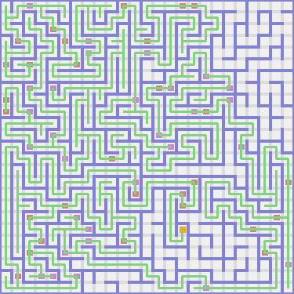
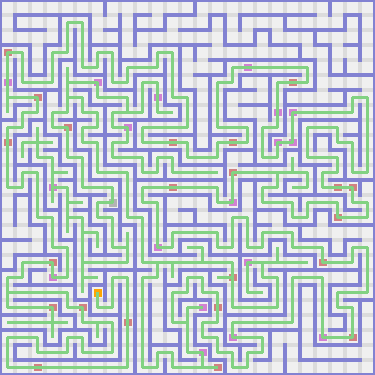
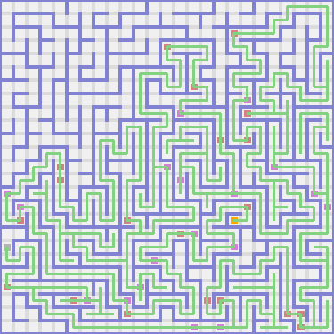
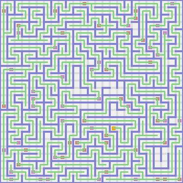
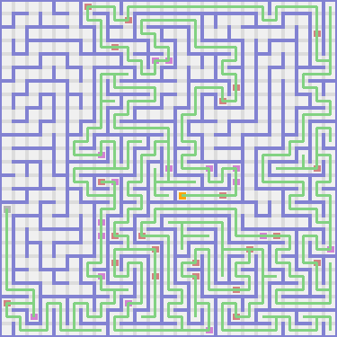
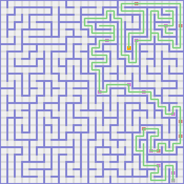
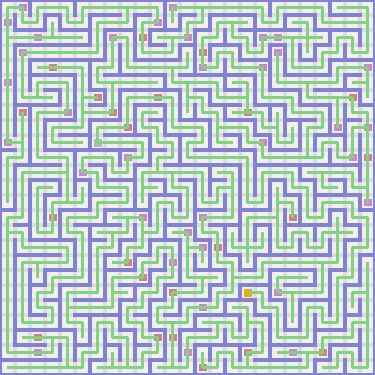

PROLOGUE
I am a botanist and a zoologist. I came to this complex of mazes to catalog flora and fauna. What follows is the journal of my travails.
CHAPTER ONE

I stepped down. Again I plodded down. Then I shuffled left. Then I strode up. There was a beautiful wild strawberry water lily there. It smelled like pomegranates.
I stepped left. Then I toddled up. Again I shuffled up. Then I hoofed it right. Then I trekked up. A scary haunt appeared from the west! It looked a little like Benjamin Harrison. It said, "Great lives never go out; they go on," to me. Then I strutted left. There was an ape there. I named it Jordan.
I walked up. Again I strode up. Again I sprinted up. Then I ran left. There was a beautiful brown columbine there. It smelled like apples.
I trudged up. Then I ran left. Then I shambled up. Again I ambled up. Then I paraded left. There was a kangaroo there. I named it Jonathan.
I sauntered left. There was a puma there. I named it Riley.
I ran left. Then I walked down. Again I stepped down. Then I strutted left. Then I trekked up. Then I went left. Again I shuffled left. Then I hiked down. Then I hoofed it right. Then I shuffled down. Then I beat cheeks right. Again I hoofed it right. Then I walked down. Then I paraded right. Again I traipsed right. Again I plodded right. There was a beautiful mango tango zinnium there. It smelled like goji berries.
I marched up. Then I toddled left. Then I marched up. Again I traipsed up. Then I plodded left. Then I trudged down. Again I meandered down. Then I hit a dead-end. I was feeling lost so I retraced my steps.
I shambled right. Then I marched down. Again I trekked down. Then I toddled left. Then I meandered up. There was a beautiful neon carrot lilac there. It smelled like jambuls.
I toddled left. Then I walked down. Then I hiked left. Again I went left. Again I sauntered left. Again I shuffled left. Then I went up. Then I strode right. Then I strutted up. Then I meandered left. Again I shuffled left. Then I strode up. Then I hit a dead-end. I was feeling lost so I retraced my steps.
I hiked down. Again I strode down. Again I went down. Again I shambled down. There was a beautiful apricot camellia there. It smelled like salal berries.
I beat cheeks right. Then I ran down. Again I meandered down. Again I paraded down. Again I paraded down. Then I shuffled left. Then I ran up. Again I plodded up. Again I sprinted up. Then I hit a dead-end. I was feeling lost so I retraced my steps.
I stepped down. Again I traipsed down. Then I strutted right. Then I ran up. Then I strutted right. Again I marched right. Then I shambled up. Again I strode up. Then I plodded left. Then I shuffled down. Then I hit a dead-end. I was feeling lost so I retraced my steps.
I sprinted up. Then I strode right. Then I sprinted up. Then I shambled right. Again I trudged right. There was a dromedary there. I named it Brendan.
I hoofed it down. Then I hoofed it right. Then I strutted down. Then I traipsed left. Then I ambled down. Then I sprinted right. There was an otter there. I named it Gregory.
I plodded right. Then I sauntered down. Then I hoofed it right. Then I strutted up. Again I went up. Then I toddled right. Then I stepped down. Again I shuffled down. Again I ambled down. Then I beat cheeks left. Again I shuffled left. Again I sauntered left. There was a hamster there. I named it Maya.
I stepped left. Again I went left. There was a shrew there. I named it Jake.
I hiked up. Then I sprinted right. Again I marched right. Then I hit a dead-end. I was feeling lost so I retraced my steps.
I ambled up. Again I strutted up. Again I paraded up. Then I hit a dead-end. I was feeling lost so I retraced my steps.
I shambled left. Again I toddled left. Then I hit a dead-end. I was feeling lost so I retraced my steps.
I shuffled right. Then I plodded up. Then I ran right. Then I strutted up. There was a beautiful violet red lavender there. It smelled like lychees.
I strutted right. Then I traipsed up. There was a silver fox there. I named it Serenity.
I plodded up. Then I sauntered left. Then I shambled down. Then I strode left. Then I plodded down. Then I hit a dead-end. I was feeling lost so I retraced my steps.
I toddled up. Then I hoofed it right. Then I strode up. Then I plodded right. Again I toddled right. Again I ambled right. Again I shuffled right. Then I shambled down. Then I sprinted left. Again I ambled left. Again I went left. Then I toddled down. Then I beat cheeks right. Then I toddled down. Again I strutted down. Then I strode right. Then I paraded down. Again I ran down. Then I sprinted left. Again I shuffled left. Then I walked up. Again I paraded up. Again I toddled up. Then I hit a dead-end. I was feeling lost so I retraced my steps.
I sprinted right. There was a jackal there. I named it Omar.
Then I hit a dead-end. I was feeling lost so I retraced my steps.
I paraded left. Then I traipsed down. Then I sprinted left. Then I hit a dead-end. I was feeling lost so I retraced my steps.
I trudged left. Then I stepped up. Again I went up. Again I meandered up. Again I shambled up. Then I paraded left. Again I ambled left. Then I sprinted down. There was a wolf there. I named it Preston.
I toddled left. There was a beautiful shadow jasmine there. It smelled like pineapples.
I shuffled left. Then I hoofed it up. Then I ambled right. Then I hit a dead-end. I was feeling lost so I retraced my steps.
I traipsed left. There was a beautiful shadow hyacinth there. It smelled like rock melons.
I trudged down. There was a jaguar there. I named it Isabella.
I stepped down. Then I hit a dead-end. I was feeling lost so I retraced my steps.
I traipsed left. Then I hit a dead-end. I was feeling lost so I retraced my steps.
I traipsed right. There was a beautiful yellow orange thyme there. It smelled like cherimoyas.
I trudged down. Then I hit a dead-end. I was feeling lost so I retraced my steps.
I marched right. Then I hit a dead-end. I was feeling lost so I retraced my steps.
I traipsed right. Again I sauntered right. Then I hit a dead-end. I was feeling lost so I retraced my steps.
I ran up. Again I strutted up. Again I shuffled up. There was a beautiful manatee orange blossom there. It smelled like strawberries.
I trekked right. Then I traipsed up. Again I toddled up. Then I hiked right. Again I shambled right. Again I strode right. Then I strode up. There was a beautiful salmon lily there. It smelled like cherimoyas.
I ran left. Again I went left. Again I paraded left. There was a pig there. I named it Jordan.
I stepped left. Then I ran down. There was a beautiful bittersweet gerbera daisy there. It smelled like lemons.
I marched down. Then I hit a dead-end. I was feeling lost so I retraced my steps.
I beat cheeks up. Again I shuffled up. Again I strode up. Then I strutted right. There was a moose there. I named it Kelsey.
I strutted down. Then I ambled right. Then I ran down. Then I strode right. Then I marched up. Again I marched up. Then I beat cheeks right. Then I went up. Again I stepped up. Then I hoofed it left. Then I strode down. Then I marched left. Then I stepped down. There was a zebra there. I named it Kimberly.
Then I hit a dead-end. I was feeling lost so I retraced my steps.
I walked left. Again I hoofed it left. Then I marched up. Then I shuffled right. Again I plodded right. Then I hit a dead-end. I was feeling lost so I retraced my steps.
I plodded right. Again I strutted right. Then I hoofed it down. Then I trudged right. Again I sauntered right. There was a puma there. I named it Kaleb.
I traipsed down. There was a beautiful yellow hibiscu there. It smelled like oranges.
I strutted down. There was a chimpanzee there. I named it Zoey.
I ran down. Then I meandered left. Again I sprinted left. Then I ran down. Then I walked right. Then I plodded down. There was a beautiful violet red edelweis there. It smelled like plums.
I went right. Again I toddled right. Again I strutted right. Then I hoofed it up. Then I strode right. Again I shambled right. Then I walked down. Then I meandered right. Again I sauntered right. There was a beautiful cerise marjoram there. It smelled like coconuts.
I stepped down. Then I hiked right. Then I shuffled down. Then I ran left. Again I went left. Then I traipsed up. Then I hiked left. Then I ambled down. Then I trudged left. Again I meandered left. Again I went left. Then I shuffled down. Then I traipsed right. Again I plodded right. There was a beautiful manatee orchid there. It smelled like cherimoyas.
I trekked right. Then I meandered down. Then I beat cheeks right. Then I paraded up. Then I went right. Then I sprinted down. Again I shambled down. Then I traipsed left. Again I shambled left. Again I ambled left. Then I strode down. Again I walked down. Then I strode left. Then I strutted up. Again I walked up. Again I ran up. Then I walked left. Then I hoofed it down. Again I sprinted down. Again I ran down. Again I traipsed down. Then I sprinted right. Again I shuffled right. Again I traipsed right. Then I shuffled up. Then I strode right. Then I hoofed it up. Then I sprinted left. Then I hit a dead-end. I was feeling lost so I retraced my steps.
I trudged right. Again I beat cheeks right. Then I marched down. Again I ran down. Again I walked down. Then I hoofed it right. There was a beautiful manatee violet there. It smelled like nuts.
I hoofed it up. Again I shuffled up. Again I paraded up. Again I stepped up. There was a crocodile there. I named it Jayla.
I meandered up. Again I hiked up. Again I toddled up. There was an armadillo there. I named it Alexa.
I meandered up. Again I meandered up. There was a beautiful pine green thyme there. It smelled like redcurrants.
I hiked right. Again I paraded right. Then I meandered down. There was a beautiful peach daffodil there. It smelled like damsons.
I shambled down. Then I hiked right. Then I ambled up. Again I paraded up. Then I walked right. Again I stepped right. Then I went down. Then I hoofed it right. There was a dog there. I named it Gabriela.
I plodded down. Again I walked down. Again I strode down. Again I meandered down. Then I trudged left. Then I beat cheeks down. Then I shuffled right. Again I strutted right. Then I walked up. Then I ambled right. Then I ambled up. Then I plodded left. Then I meandered up. Again I strutted up. Again I traipsed up. Then I plodded right. Then I went down. Again I meandered down. Then I hit a dead-end. I was feeling lost so I retraced my steps.
I hiked up. Then I walked left. Then I shambled up. Again I stepped up. Then I sauntered right. Then I stepped up. Again I shambled up. Then I ambled left. Then I went up. Then I traipsed right. There was a canary there. I named it Bianca.
I ran up. Then I hoofed it left. Again I meandered left. Then I strutted down. Again I hiked down. Then I walked left. Then I beat cheeks up. Again I ran up. Then I strutted left. There was a beautiful wild blue yonder foxglove there. It smelled like dates.
I ambled down. Again I hiked down. Again I shambled down. Again I went down. Then I trekked left. Then I stepped down. Then I beat cheeks right. Again I plodded right. Again I stepped right. Then I trekked down. Then I hit a dead-end. I was feeling lost so I retraced my steps.
I plodded up. Again I sauntered up. Then I toddled right. Then I hit a dead-end. I was feeling lost so I retraced my steps.
I shuffled left. There was a beautiful pacific blue gerbera daisy there. It smelled like satsumas.
I stepped down. Then I hit a dead-end. I was feeling lost so I retraced my steps.
I meandered left. Again I strode left. Again I beat cheeks left. Then I strode up. Then I ambled left. There was a beautiful caribbean green chrysantemum there. It smelled like jackfruits.
I ambled up. Again I hiked up. Then I ambled left. Again I sauntered left. There was a tapir there. I named it Eduardo.
I toddled up. Then I trekked left. Then I trudged up. Then I paraded left. There was a beautiful radical red bird of paradise there. It smelled like elderberries.
I hiked down. Again I hiked down. Again I shambled down. There was a beautiful burnt orange chrysantemum there. It smelled like chili peppers.
I ran down. Then I traipsed left. There was a chinchilla there. I named it Jordyn. It started following me.
I strode left. Then I sprinted down. Then I hoofed it left. Then I hit a dead-end. I was feeling lost so I retraced my steps.
I strutted up. There was a beautiful vivid tangerine orange blossom there. It smelled like lemons.
I plodded up. Then I ambled right. Then I strutted up. Again I paraded up. Then I plodded left. Again I hiked left. Again I trekked left. Then I hit a dead-end. I was feeling lost so I retraced my steps.
I strutted down. Then I hit a dead-end. I was feeling lost so I retraced my steps.
I hoofed it down. Then I hit a dead-end. I was feeling lost so I retraced my steps.
I sprinted right. Again I sprinted right. Then I walked up. Then I strode left. Then I plodded up. Then I hit a dead-end. I was feeling lost so I retraced my steps.
I ambled right. There was a beautiful apricot ladys slipper there. It smelled like cantaloupes.
I trekked down. Again I shambled down. Then I ran left. There was a beautiful neon carrot columbine there. It smelled like bananas.
Then I hit a dead-end. I was feeling lost so I retraced my steps.
I walked right. Then I stepped down. Then I hit a dead-end. I was feeling lost so I retraced my steps.
I marched right. Again I shambled right. Again I hiked right. Then I stepped down. Then I meandered left. Then I hit a dead-end. I was feeling lost so I retraced my steps.
I shambled right. Then I stepped up. Then I shuffled right. Then I paraded down. Again I traipsed down. Again I sprinted down. Then I hiked left. Then I beat cheeks up. Then I hit a dead-end. I was feeling lost so I retraced my steps.
I ambled down. Then I plodded right. Then I walked up. Then I marched right. Then I paraded up. Again I stepped up. Then I walked left. Then I hiked up. Then I hiked right. Then I hit a dead-end. I was feeling lost so I retraced my steps.
I shambled down. Then I hit a dead-end. I was feeling lost so I retraced my steps.
I stepped down. Then I hit a dead-end. I was feeling lost so I retraced my steps.
I trekked down. There was a ewe there. I named it Victoria.
I sprinted down. Again I shambled down. Then I sauntered left. Then I plodded down. Then I ran right. Then I stepped down. Again I trudged down. Again I went down. Again I plodded down. Then I toddled left. Then I hiked up. Then I trudged left. Then I paraded down. Then I hit a dead-end. I was feeling lost so I retraced my steps.
I ambled down. Then I marched right. Then I strutted down. Then I sauntered left. There was a beautiful razzle dazzle rose dahlium there. It smelled like blood oranges.
I stepped down. Then I hiked right. Then I stepped down. Again I ran down. Then I shuffled left. Again I plodded left. Again I strode left. Again I walked left. There was a bull there. I named it Edgar.
I trekked up. Then I beat cheeks right. Again I ambled right. Again I shuffled right. Then I hit a dead-end. I was feeling lost so I retraced my steps.
I strode up. Then I hit a dead-end. I was feeling lost so I retraced my steps.
I toddled left. There was a beautiful manatee sage there. It smelled like grapes. I picked it.
I walked up. Then I toddled left. Again I traipsed left. There was a wolf there. I named it Connor.
Then I hit a dead-end. I was feeling lost so I retraced my steps.
I meandered right. Then I hit a dead-end. I was feeling lost so I retraced my steps.
I shuffled up. Again I sprinted up. Again I strutted up. Then I shambled left. Then I toddled down. Then I went left. Then I sprinted down. Then I went left. Then I ambled up. Then I went left. Then I stepped down. There was a beaver there. I named it Angel.
I hoofed it down. There was a beautiful maroon columbine there. It smelled like honeydews. For some reason I ate it. It tasted delicious.
I went right. Again I walked right. There was an impala there. I named it Michelle.
I hoofed it right. Then I ambled up. Then I hit a dead-end. I was feeling lost so I retraced my steps.
I hoofed it down. Again I walked down. Then I hoofed it left. There was an ibex there. I named it Dalton.
I strode up. There was a ground hog there. I named it Destiny.
Then I hit a dead-end. I was feeling lost so I retraced my steps.
I trudged down. Again I ran down. Again I trekked down. Then I walked right. Then I marched up. Then I beat cheeks right. Again I shambled right. Then I hoofed it down. Then I ambled right. There was a llama there. I named it Samantha.
Then I hit a dead-end. I was feeling lost so I retraced my steps.
I ambled left. Then I hiked down. Then I hoofed it right. Then I hit a dead-end. I was feeling lost so I retraced my steps.
I stepped up. Then I hit a dead-end. I was feeling lost so I retraced my steps.
I plodded left. Again I walked left. Again I shambled left. Then I strutted up. Again I trekked up. Then I shambled left. Then I ran down. Then I plodded left. Then I stepped down. Then I hiked right. Then I hit a dead-end. I was feeling lost so I retraced my steps.
I stepped left. Then I strode up. Then I sprinted left. Again I marched left. There was a reindeer there. I named it Jackson.
Then I hit a dead-end. I was feeling lost so I retraced my steps.
I shuffled down. Again I shambled down. Then I hit a dead-end. I was feeling lost so I retraced my steps.
I marched up. Then I hit a dead-end. I was feeling lost so I retraced my steps.
I sprinted up. Again I sauntered up. Then I hit a dead-end. I was feeling lost so I retraced my steps.
I marched up. Then I hit a dead-end. I was feeling lost so I retraced my steps.
I toddled left. Then I strode down. Again I trekked down. Then I hit a dead-end. I was feeling lost so I retraced my steps.
I shambled left. Then I strode up. Again I hoofed it up. Then I ran left. There was a beautiful gray snapdragon there. It smelled like redcurrants.
I strutted down. Then I hit a dead-end. I was feeling lost so I retraced my steps.
I strutted up. Again I shambled up. There was a beautiful melon amarylli there. It smelled like figs.
I trudged right. Then I beat cheeks down. Then I hit a dead-end. I was feeling lost so I retraced my steps.
I strutted up. Then I shambled right. Again I plodded right. Again I went right. Then I trekked up. Then I hit a dead-end. I was feeling lost so I retraced my steps.
I strode left. Again I went left. Then I hoofed it up. Then I beat cheeks left. Then I hiked up. Again I ambled up. There was a hippopotamus there. I named it Jordan.
I went left. Then I shambled up. Then I sauntered right. Then I ran up. Then I sprinted right. Then I paraded down. Then I shuffled right. Then I strutted up. Then I hit a dead-end. I was feeling lost so I retraced my steps.
I trekked up. Then I hit a dead-end. I was feeling lost so I retraced my steps.
I sauntered down. Again I shuffled down. Then I shambled right. Then I shuffled down. Then I sauntered left. Again I sprinted left. Again I hoofed it left. Again I trudged left. Then I plodded up. Then I strode right. Then I meandered up. Then I traipsed left. Then I hit a dead-end. I was feeling lost so I retraced my steps.
I sauntered right. There was a platypus there. I named it Patrick.
I sprinted down. Then I hit a dead-end. I was feeling lost so I retraced my steps.
I sprinted left. Then I ambled down. Then I toddled right. Then I hit a dead-end. I was feeling lost so I retraced my steps.
I strutted right. Then I hit a dead-end. I was feeling lost so I retraced my steps.
I hoofed it left. Then I hit a dead-end. I was feeling lost so I retraced my steps.
I strode down. Then I hit a dead-end. I was feeling lost so I retraced my steps.
I sprinted up. Then I beat cheeks right. Then I hiked up. Then I shambled right. Again I meandered right. There was a mink there. I named it Skylar.
I beat cheeks right. Again I sprinted right. Again I walked right. Again I shuffled right. Again I trudged right. Then I strutted down. Then I marched left. Then I traipsed down. Again I plodded down. Then I walked left. Again I toddled left. Then I ambled down. Then I stepped right. Then I ran down. Then I plodded right. Then I sprinted down. Then I trekked left. Then I trudged down. Then I meandered right. Again I ran right. Again I trudged right. Then I meandered up. Then I ran left. Then I hoofed it up. Then I shuffled right. Again I hoofed it right. Again I plodded right. Then I hoofed it up. Then I hoofed it right. Then I ambled up. Then I trekked left. Then I trudged up. Then I paraded left. Then I meandered down. There was a chinchilla there. I named it Alexander.
I sauntered left. There was a mandrill there. I named it Kate.
I ambled left. Then I walked up. Then I strode right. There was a lizard there. I named it Angel.
I meandered up. There was a beautiful carnation pink delphinium there. It smelled like loquats.
I went right. Again I shuffled right. There was a beautiful brick red amaranth there. It smelled like rambutans.
I ambled up. Then I paraded right. There was a yak there. I named it Riley.
I trekked right. Then I went up. Then I trudged left. Then I paraded up. Then I shuffled left. Then I traipsed up. Then I toddled left. Again I trudged left. There was a beautiful red orchid there. It smelled like pears.
I strode up. Again I toddled up. Then I shambled down a flight of stairs. So far one animal was following me, and I held one flower. It seemed like I had explored about ninety-nine percent of this floor.
CHAPTER TWO
I strode left. Again I trudged left. There was a koala there. I named it Sophie.
I marched left. There was a beautiful magenta violet there. It smelled like limes.
I strode left. Then I strutted up. Then I sauntered left. Then I trudged down. Then I hit a dead-end. I was feeling lost so I retraced my steps.
I went down. Then I trekked right. Again I sprinted right. Then I hit a dead-end. I was feeling lost so I retraced my steps.
I plodded right. Then I traipsed up. Again I beat cheeks up. Again I trekked up. Then I walked left. Then I shuffled down. Then I marched left. Then I hit a dead-end. I was feeling lost so I retraced my steps.
I ambled down. Then I plodded left. Again I walked left. Then I ambled up. There was a lizard there. I named it Matthew.
I strutted left. Then I sprinted up. Then I stepped left. Then I hit a dead-end. I was feeling lost so I retraced my steps.
I walked left. Again I sauntered left. Then I went up. Again I strutted up. There was a beautiful gray gerbera daisy there. It smelled like bell peppers.
I traipsed right. Then I plodded up. Again I hoofed it up. Then I paraded left. Again I shuffled left. Again I paraded left. Again I paraded left. Then I paraded down. Again I sprinted down. Then I shuffled right. Then I stepped up. There was a beautiful denim bellflower there. It smelled like avocadoes.
I walked right. There was a beautiful tumbleweed camellia there. It smelled like tamarilloes.
I walked down. Again I beat cheeks down. Again I hiked down. Then I paraded left. Then I hiked down. Again I hiked down. There was a deer there. I named it Savannah.
I walked left. Then I sprinted down. Then I strutted right. Again I hiked right. Then I paraded up. Again I ambled up. Then I hiked right. Then I sprinted down. Again I shambled down. Then I beat cheeks right. There was a beautiful green water lily there. It smelled like plums.
I stepped right. Then I trekked down. Again I sprinted down. Then I ran left. Then I hiked down. Then I beat cheeks left. Again I hoofed it left. There was a beautiful hot magenta bellflower there. It smelled like jambuls.
I plodded down. Then I walked right. Again I sauntered right. There was a mule there. I named it Carson.
I strutted down. Then I ran right. Then I plodded up. Then I meandered right. Again I shuffled right. Again I shambled right. Again I traipsed right. Then I hiked down. Then I ambled left. Then I hit a dead-end. I was feeling lost so I retraced my steps.
I hoofed it up. Then I trekked left. Again I strutted left. Then I plodded up. Then I hit a dead-end. I was feeling lost so I retraced my steps.
I beat cheeks right. Again I paraded right. Then I went up. There was an ocelot there. I named it Chloe.
I strutted up. Then I ambled left. Then I trekked down. Then I hit a dead-end. I was feeling lost so I retraced my steps.
I shambled right. The specter appeared again from the north. It came right through the wall! This time it looked like Calvin Coolidge. Then I hit a dead-end. I was feeling lost so I retraced my steps.
I strutted up. Then I strode right. Then I sprinted up. Again I shuffled up. Then I sprinted right. Again I strode right. Then I plodded down. Then I paraded right. Then I trekked up. There was a beautiful blue columbine there. It smelled like redcurrants.
I hiked up. Then I stepped right. Again I trekked right. Again I hoofed it right. Then I paraded down. Then I shambled right. Again I hiked right. Then I hit a dead-end. I was feeling lost so I retraced my steps.
I walked down. Then I sauntered right. Then I sauntered down. Then I hiked right. Then I shuffled up. Again I walked up. Again I stepped up. Again I strode up. Then I ran right. Then I hit a dead-end. I was feeling lost so I retraced my steps.
I beat cheeks left. Then I trudged down. Then I trudged left. Then I paraded up. Then I sprinted left. Again I ambled left. Again I toddled left. Then I ran up. Again I paraded up. Then I marched right. Again I plodded right. Again I ambled right. Then I strode up. Again I paraded up. Then I trekked left. Then I meandered down. There was a grizzly bear there. I named it Christina.
I marched left. Again I walked left. Then I hiked up. Then I beat cheeks left. Again I walked left. Again I hiked left. There was a bear there. I named it Kimberly.
I toddled down. Then I sprinted left. Then I hoofed it up. Again I toddled up. Then I hit a dead-end. I was feeling lost so I retraced my steps.
I hiked left. Then I went up. Again I meandered up. Then I trekked right. Again I shuffled right. Then I stepped down. Then I ambled right. Then I beat cheeks up. Then I sauntered right. Then I stepped down. Then I walked right. There was a newt there. I named it Hayden. It started following me.
I shuffled right. Then I trekked up. Then I strode right. Again I stepped right. Then I strode down. Then I went right. Then I trudged up. Then I strode right. Again I meandered right. There was a dingo there. I named it Anthony. It started following me.
I shuffled right. Again I stepped right. There was a beautiful raw sienna begonium there. It smelled like goji berries.
I stepped right. There was a beautiful copper tansy there. It smelled like clementines.
I trekked down. Again I went down. Then I ambled left. Then I sprinted up. Then I hit a dead-end. I was feeling lost so I retraced my steps.
I paraded right. Then I walked down. Then I beat cheeks right. There was a beautiful plum columbine there. It smelled like feijoas. For some reason I ate it. It tasted like chicken.
I strode right. Again I toddled right. Then I ambled up. Then I went right. There was a gopher there. I named it Brandon.
I sprinted up. Again I went up. Then I ran left. Then I trekked down. Then I toddled left. Again I stepped left. Again I strode left. Then I traipsed up. Then I marched right. Again I ran right. Then I hit a dead-end. I was feeling lost so I retraced my steps.
I ambled down. Then I strode right. There was an otter there. I named it Katherine. It started following me.
Then I hit a dead-end. I was feeling lost so I retraced my steps.
I ambled down. There was a mule there. I named it Julia.
I beat cheeks down. Then I marched left. There was a guinea pig there. I named it Adam.
I shambled left. Again I toddled left. Then I trekked down. Then I walked right. There was a prairie dog there. I named it Edgar.
Then I hit a dead-end. I was feeling lost so I retraced my steps.
I shuffled down. Then I marched left. Again I hoofed it left. Then I strode down. Then I hit a dead-end. I was feeling lost so I retraced my steps.
I shambled down. Then I beat cheeks right. Then I ambled down. Again I went down. Then I traipsed left. Then I toddled up. Then I ambled left. Then I shambled down. Again I traipsed down. Then I beat cheeks left. Then I went down. Then I hoofed it right. There was a beautiful cerulean marigold there. It smelled like strawberries.
I shambled right. Then I ambled up. Then I trudged right. Again I strode right. Then I sprinted up. There was a weasel there. I named it Luis.
I sauntered right. Then I trudged down. There was a beautiful burnt sienna anemone there. It smelled like gooseberries.
I toddled right. Then I paraded down. Then I strode left. Again I ran left. Again I stepped left. Then I walked down. Then I strode right. Then I shuffled down. Then I ambled left. Again I stepped left. Then I beat cheeks down. Then I marched right. Again I marched right. Again I ambled right. Then I strode down. Then I trekked left. Again I shambled left. Then I hiked down. Then I hoofed it right. Then I hoofed it down. Then I shuffled right. There was a puma there. I named it Skylar.
I strutted up. Then I ran right. Again I meandered right. Then I hit a dead-end. I was feeling lost so I retraced my steps.
I ambled down. Then I ambled right. Again I shuffled right. Then I shambled up. Again I strode up. Then I trudged right. Then I ambled up. Again I beat cheeks up. Then I hit a dead-end. I was feeling lost so I retraced my steps.
I toddled up. Then I meandered left. Then I shambled down. Then I sprinted left. Then I sauntered up. Again I strode up. Then I strode right. Again I traipsed right. Then I strutted up. Then I shambled right. Then I went up. Then I beat cheeks right. Then I shambled down. Again I stepped down. Again I hiked down. Again I walked down. Again I stepped down. Then I shambled left. Then I went down. There was a hog there. I named it Lilly.
I plodded right. Then I hoofed it down. Again I stepped down. Then I walked left. There was a cat there. I named it Peyton.
I plodded up. Then I marched left. Then I paraded down. Then I stepped left. There was a beautiful mountain meadow hyacinth there. It smelled like blackberries.
I strode left. Again I traipsed left. Again I stepped left. Then I paraded down. Then I stepped right. Then I hit a dead-end. I was feeling lost so I retraced my steps.
I trekked up. There was a mynah bird there. I named it Oliver.
I ambled left. Again I plodded left. Again I shuffled left. Again I meandered left. Again I shambled left. Then I hoofed it down. Then I hit a dead-end. I was feeling lost so I retraced my steps.
I plodded left. Then I hit a dead-end. I was feeling lost so I retraced my steps.
I plodded up. Then I sprinted left. Again I toddled left. Then I toddled down. Then I trekked left. Then I meandered up. Again I strode up. Then I beat cheeks left. Then I shuffled down. Then I strutted left. Again I traipsed left. Then I sprinted down. Again I meandered down. Then I shambled left. Again I trudged left. Again I trekked left. Then I sprinted up. Then I traipsed left. Then I marched down. Again I beat cheeks down. Again I trekked down. Then I marched right. Then I sprinted down. Again I went down. Then I went right. Then I hit a dead-end. I was feeling lost so I retraced my steps.
I sprinted down. Again I went down. Then I sauntered left. Then I hit a dead-end. I was feeling lost so I retraced my steps.
I sprinted left. Then I shuffled down. Then I strutted left. Then I strutted down. Again I hiked down. Then I traipsed right. Then I stepped down. Then I ambled left. Then I ran down. Then I strode right. Again I ran right. Again I walked right. Again I plodded right.
Anthony asked Katherine, "What exactly are you?"
"Well, I'm an otter. I can swim, can you?"
"No I can't," replied Anthony.
I marched right. Then I ambled down. Then I strutted right. Then I hit a dead-end. I was feeling lost so I retraced my steps.
I shambled down. Again I beat cheeks down. Then I beat cheeks right. Then I ambled up. Then I plodded right. Then I trekked down. Then I ran right. Again I hiked right. Again I trudged right. Again I plodded right. Then I trekked up. Then I hiked left. Then I sauntered up. Then I plodded left. Then I hiked up. Then I plodded left. Then I meandered up. Again I sprinted up. Then I trekked left. Then I hit a dead-end. I was feeling lost so I retraced my steps.
I meandered left.
Hayden asked Anthony, "What exactly are you?"
"Well, I'm a dingo."
I meandered down. Then I hiked left. There was a frog there. I named it Shawn. It started following me.
I shambled left. Then I toddled up. Then I trekked right. Then I shuffled up. Again I ran up. Then I walked right. Then I shuffled up. Again I trudged up. Again I stepped up. Then I hit a dead-end. I was feeling lost so I retraced my steps.
I ran left. Then I went up. There was a beautiful cerise rose there. It smelled like kiwi fruit.
I stepped up. Then I hiked right. Again I plodded right. Then I plodded down. Again I marched down. Then I beat cheeks right. Then I ambled down. Then I meandered left. There was a shrew there. I named it Devin.
I shambled down. Then I meandered right. Then I ran down. Again I sauntered down. Then I paraded right. Again I stepped right. There was a beautiful pine green orange blossom there. It smelled like strawberries.
Then I hit a dead-end. I was feeling lost so I retraced my steps.
I paraded down. Then I hiked right. Then I went down. Then I went right. Then I paraded down. Then I sprinted right. Then I strode up. Then I paraded right. Then I walked up. Then I paraded right. There was a beautiful burnt sienna peach blossom there. It smelled like breadfruits.
I went down. There was a deer there. I named it Valeria.
I walked right. Then I went down. Then I sprinted left. Then I ambled down. Then I trudged right. Again I toddled right. Again I ran right. Again I shuffled right. Then I shuffled up. Again I went up. Then I ambled left. There was a dog there. I named it Timothy.
I ambled up. Then I hiked right. Again I sauntered right. There was a beaver there. I named it Jordyn.
I sprinted down. Then I shambled right. Then I beat cheeks up. Again I plodded up. There was a beautiful tan daisy there. It smelled like currants.
I hoofed it right. Then I shuffled down. Again I ran down. Again I trudged down. Again I paraded down. Then I sprinted left. Then I ran up. Then I shuffled left. There was a beautiful green daffodil there. It smelled like dates.
I beat cheeks down. Then I hit a dead-end. I was feeling lost so I retraced my steps.
I toddled down. Then I hit a dead-end. I was feeling lost so I retraced my steps.
I toddled up. Again I sprinted up. Again I ambled up. Then I toddled left. Then I meandered up. Again I walked up. Then I trudged right. Again I shuffled right. Then I ambled up. Again I paraded up. Then I walked right. There was a beautiful spring green amaranth there. It smelled like cherries.
I strutted down. Again I sprinted down. Then I hit a dead-end. I was feeling lost so I retraced my steps.
I beat cheeks right. Then I sauntered up. Again I ran up. Again I strode up. There was a llama there. I named it Brianna.
I trudged left. Then I shambled down. Then I traipsed left. Then I hit a dead-end. I was feeling lost so I retraced my steps.
I traipsed right. Then I plodded down. Again I strutted down. There was a cougar there. I named it Nicolas.
Then I hit a dead-end. I was feeling lost so I retraced my steps.
I beat cheeks down. Then I shuffled right. Again I ran right. Again I ambled right. Then I hiked up. Then I traipsed right. Again I marched right. Then I paraded up. Again I shuffled up. Again I paraded up. Again I walked up. Then I stepped left. Then I walked up. Then I plodded left. Again I marched left. There was a beautiful spring green columbine there. It smelled like cloudberries.
I ambled left. There was an otter there. I named it Tanner.
I sprinted down. Then I shambled left. Again I traipsed left. There was a beautiful cotton candy sunflower there. It smelled like breadfruits. For some reason I ate it. It tasted bad.
I hoofed it down. Then I toddled right. Then I went down. Again I sprinted down. Then I hoofed it left. Again I marched left. Then I walked down. Again I beat cheeks down. There was a reindeer there. I named it Brady.
I walked left. Again I stepped left. Then I hoofed it down. Then I toddled left. Then I toddled up. Again I ran up. Then I sauntered left. Again I ambled left. Then I trekked up. Again I walked up. Then I traipsed right. Then I ran down. There was a seal there. I named it John.
I beat cheeks right. There was a beautiful pine green buttercup there. It smelled like apricots.
I shuffled right. Then I went up. Then I shuffled left. Then I hiked up. There was a mandrill there. I named it Addison.
I went left. Then I strode up. Then I shambled right. Then I paraded up. Again I walked up. Then I went right. Then I sauntered down. Then I plodded right. Again I ran right. Then I trekked down a flight of stairs. So far five animals were following me, and I held one flower. It seemed like I had explored about seventy-eight percent of this floor.
CHAPTER THREE
I strode up. Then I trekked right. Then I shuffled up. Then I sprinted right. Then I stepped up. Then I went right. There was a beautiful midnight blue holly there. It smelled like salal berries.
I ambled down. Again I went down. Then I walked left. Then I hit a dead-end. I was feeling lost so I retraced my steps.
I hoofed it down. Then I went right. There was a beautiful navy blue freesium there. It smelled like mandarines.
I strutted down. Again I strode down. Then I beat cheeks right. Again I strutted right. There was a beautiful indigo heather there. It smelled like jackfruits.
I shambled down. There was a beautiful green lilac there. It smelled like pomegranates.
I hiked right. Then I paraded up. Again I meandered up. There was a beautiful cornflower foxglove there. It smelled like figs.
I strode left. Then I hit a dead-end. I was feeling lost so I retraced my steps.
I paraded up. Again I went up. Then I trekked right. Again I strode right. Again I sauntered right. Then I hit a dead-end. I was feeling lost so I retraced my steps.
I ran right. There was a woodchuck there. I named it Jillian.
I walked up. Then I hiked right. Then I beat cheeks up. Again I ambled up. Then I strode right. Again I traipsed right. Again I shuffled right. Then I shuffled up. Again I hoofed it up. Again I walked up. Then I hit a dead-end. I was feeling lost so I retraced my steps.
I trudged right. Then I trekked up. Then I sprinted right. The wraith appeared again from the north. It came right through the wall! This time it looked like Barack Obama. It said, "The best way to not feel hopeless is to get up and do something. Don't wait for good things to happen to you. If you go out and make some good things happen, you will fill the world with hope, you will fill yourself with hope," to me. Then I strutted down. Again I toddled down. Again I went down. Again I ambled down. Again I trudged down. Then I trudged right. Again I meandered right. Then I hit a dead-end. I was feeling lost so I retraced my steps.
I shuffled up. Again I strode up. There was a beautiful purple mountain's majesty crocu there. It smelled like passionfruits.
I traipsed right. Then I beat cheeks down. Then I hiked right. Then I meandered down. Again I ambled down. Again I hoofed it down. Again I toddled down. Again I marched down. Again I sauntered down. Again I shambled down. Then I hit a dead-end. I was feeling lost so I retraced my steps.
I hiked left. Then I strode down. Then I hiked left. There was a parrot there. I named it Kylie. It started following me.
I sauntered down. Then I sprinted right. Then I sauntered down.
Hayden asked Kylie, "What exactly are you?"
"Well, I'm a parrot. I have a feather and I can say cracker, can you?"
"No I can't," replied Hayden.
I walked down. There was a donkey there. I named it Emily.
I hiked left. There was a chameleon there. I named it Sophia.
I hoofed it down. Then I meandered right. Then I trekked down. Then I strode right. Again I trudged right. Then I marched up. Again I hoofed it up. Again I hoofed it up. Again I sprinted up. Then I sauntered right. Then I traipsed up. Then I sauntered left. Then I sprinted up. Then I shambled right. Then I went up. Then I shambled left. Then I trudged up. Then I marched right. Again I toddled right. Then I strutted up. Again I stepped up. Again I marched up. Then I sprinted left. Then I marched down. Then I paraded left. Then I toddled up. Then I hoofed it left. Then I trekked down. Then I hiked left. Again I strutted left. Then I walked up. Again I strutted up. Again I went up. Again I toddled up. Then I went right. Then I stepped down. Again I ambled down. Then I sprinted right. There was an elephant there. I named it Luis.
I hiked right. Again I beat cheeks right. Then I sprinted up. Then I strode right. Again I strode right. Again I strutted right. Then I meandered up. Then I shuffled left. Then I hit a dead-end. I was feeling lost so I retraced my steps.
I trudged down. Then I walked right. Again I trekked right. Then I walked down. Then I trudged right. Then I ran up. Again I trekked up. Again I marched up. Again I ran up. Then I meandered left. Again I beat cheeks left. Again I beat cheeks left. Then I hoofed it down. Then I strode left. There was a beautiful fuchsia orange blossom there. It smelled like persimmons. I picked it and added it to the rest of my bouquet.
I shambled up. Then I strutted left. Then I ran down. Then I strutted left. Then I sauntered up. Then I traipsed left. Then I strutted up. Then I sprinted right. Then I trudged up. Again I trudged up. Then I ran left. Then I toddled down. Then I hoofed it left. Then I walked down. Again I trekked down. Then I trekked left. There was a grizzly bear there. I named it Rebecca.
I shuffled down. Again I meandered down. Then I walked left. Then I trekked up. Again I hoofed it up. Then I paraded left. Again I trekked left. Then I meandered up. Then I hiked left. Then I meandered down. Again I hiked down. Then I shuffled right. Then I paraded down. Again I hiked down. Then I marched left. Again I trudged left. Then I beat cheeks up. Again I trudged up. Again I hiked up. Then I meandered left. There was a beautiful green yellow foxglove there. It smelled like pears. For some reason I ate it. It tasted good.
I strutted down. Again I hoofed it down. Then I plodded left. Then I beat cheeks up. Then I walked left. Again I meandered left. Then I sprinted up. Then I plodded left. Then I walked down. Again I hiked down. Then I went right. Again I meandered right. Then I beat cheeks down. There was a beautiful blue amarylli there. It smelled like tangerines.
I marched left. Then I walked down. Then I beat cheeks left. Again I toddled left. Again I beat cheeks left. Then I meandered down. Then I paraded right. Again I plodded right. Then I ran down. Again I paraded down. Then I sauntered right. Again I plodded right. Then I traipsed down. Again I shuffled down. Again I ambled down. Again I ambled down. Then I hit a dead-end. I was feeling lost so I retraced my steps.
I shuffled left. Then I ambled down. Again I walked down. There was a beautiful robin's egg blue hyacinth there. It smelled like blueberries.
I traipsed right. Then I walked down. Then I stepped right. Then I hiked down. Then I marched right. Again I trudged right. There was a beautiful spring green bottlebrush there. It smelled like pineapples.
I beat cheeks down. Then I hiked right. Then I trudged up. Again I went up. Then I beat cheeks right. Then I hit a dead-end. I was feeling lost so I retraced my steps.
I trekked right. Then I ran down. Then I beat cheeks right. Then I trekked up. Then I toddled right. Then I paraded up. Then I paraded left. Then I sauntered up. Then I hiked left. Again I walked left. Again I hoofed it left. There was a beautiful royal purple jasmine there. It smelled like feijoas.
I stepped down. Then I sauntered left. Then I trudged up. Again I trudged up. Then I sprinted left. Then I meandered up. There was a beautiful vivid violet daffodil there. It smelled like cranberries.
I shuffled up. Then I hiked right. Then I stepped down. Then I sprinted right. Again I went right. Again I shuffled right. Again I sprinted right. Then I hiked up. Then I shuffled left. Then I sprinted up. Again I meandered up. Again I strutted up. Then I trudged right. Again I walked right. Then I hoofed it down a flight of stairs. Shawn the frog stopped following me for some reason.
So far five animals were following me, and I held two flowers. It seemed like I had explored about thirty-seven percent of this floor.
CHAPTER FOUR
I trekked east. Then I trudged south. Then I trekked east. Then I shambled north. There was a capybara there. I named it Giselle.
I hoofed it east. Then I walked south. Then I ambled east. Again I stepped east. Then I shuffled south. Then I sprinted east. Again I hoofed it east. Again I trekked east. Again I paraded east. Then I went north. Then I sauntered east. Again I paraded east. Then I strutted north. Then I meandered east. Then I stepped south. Again I ambled south. There was a puma there. I named it Emma.
Then I hit a dead-end. I was feeling lost so I retraced my steps.
I walked east. There was a beautiful silver peach blossom there. It smelled like cantaloupes.
I beat cheeks south. Then I beat cheeks east. Then I trekked north. Then I shambled east. Again I walked east. Again I went east. Then I paraded south. Then I hit a dead-end. I was feeling lost so I retraced my steps.
I shambled north. Then I toddled east. Again I traipsed east. Then I plodded south. Again I plodded south. Then I sprinted east. Then I hoofed it south. Again I hoofed it south. Again I sauntered south. Again I sauntered south. There was a squirrel there. I named it Sean.
I meandered west. Then I ambled south. Then I ambled east. Then I paraded south. Then I hiked east. Then I sprinted north. Again I ran north. Then I hit a dead-end. I was feeling lost so I retraced my steps.
I sprinted south. Again I paraded south. Again I ran south. Again I marched south. Then I hoofed it west. Then I trekked north. Then I shambled west. Then I sprinted south. Again I plodded south. Then I hoofed it east. Again I hiked east. The ghost appeared again from the north. It came right through the wall! This time it looked like Andrew Jackson. It said, "One man with courage makes a majority," to me. Then I traipsed south. Again I shambled south. Then I hiked west. Then I went north. Then I toddled west. Again I hiked west. Then I strutted north. Then I hit a dead-end. I was feeling lost so I retraced my steps.
I ran east. Then I toddled north. Then I hit a dead-end. I was feeling lost so I retraced my steps.
I ambled north. Again I hiked north. Again I plodded north. Then I strode west. Then I ran north. Again I strode north. Then I hit a dead-end. I was feeling lost so I retraced my steps.
I marched east. Then I went south. Then I hit a dead-end. I was feeling lost so I retraced my steps.
I toddled east. Then I hit a dead-end. I was feeling lost so I retraced my steps.
I plodded east. Again I trekked east. There was a beautiful pacific blue delphinium there. It smelled like raisins.
I ran north. Then I hoofed it east. Again I shambled east. Then I paraded south. Again I hoofed it south. Then I hit a dead-end. I was feeling lost so I retraced my steps.
I beat cheeks west. There was a beautiful atomic tangerine peony there. It smelled like elderberries.
I hiked south. Then I shuffled west. Then I stepped south. Then I stepped east. Again I toddled east. There was a ram there. I named it Jordan.
I shambled south. Again I ambled south. Again I traipsed south. Again I beat cheeks south. Again I sprinted south. Then I went west. Then I hit a dead-end. I was feeling lost so I retraced my steps.
I toddled west. Again I hiked west. Then I toddled south. Then I shuffled east. Then I sprinted south. Again I beat cheeks south.
Katherine asked Hayden, "What exactly are you?"
"Well, I'm a newt."
I ran west. Then I ran south. There was an alpaca there. I named it Grant. It started following me.
I beat cheeks south. Then I trekked east. Again I plodded east. Then I toddled south. Then I walked west. Then I marched south. Then I hiked east. Then I stepped south. Again I marched south. There was a chipmunk there. I named it Nicole.
I shambled south. Then I paraded west. Then I paraded south. Then I paraded west. Then I meandered north. Again I meandered north. There was a cat there. I named it Alex.
I trekked west. Then I hiked south. Then I shuffled west. There was a rabbit there. I named it Antonio.
I went south. Again I trekked south. Then I shuffled east. Then I shuffled north. Then I hit a dead-end. I was feeling lost so I retraced my steps.
I sauntered east. Again I trudged east. Again I trudged east. Then I trekked south. Again I strode south. Again I went south. Then I plodded west. Then I stepped south. Then I hoofed it east. Then I hit a dead-end. I was feeling lost so I retraced my steps.
I shuffled west. Then I hiked north. Again I hoofed it north. Then I hiked west. Then I trekked north. Then I ran east. Again I trudged east. There was a beautiful violet hibiscu there. It smelled like currants.
I went south. Then I hit a dead-end. I was feeling lost so I retraced my steps.
I traipsed north. Then I hit a dead-end. I was feeling lost so I retraced my steps.
I trekked north. There was a beautiful orange tulip there. It smelled like breadfruits.
I walked west. Then I ambled south. Then I hit a dead-end. I was feeling lost so I retraced my steps.
I plodded west. Then I strode north. Then I beat cheeks west. Again I meandered west. Again I toddled west. Again I meandered west. Then I ran north. Then I beat cheeks west. Then I sauntered south. Again I plodded south. Then I sprinted west. Again I ambled west. Then I hit a dead-end. I was feeling lost so I retraced my steps.
I strode north. Then I trudged west. Again I plodded west. Again I sauntered west. Then I sprinted north. Again I sauntered north. Then I stepped west. Again I toddled west. Again I shambled west. Again I beat cheeks west. Again I shambled west. There was a toad there. I named it Madeline. It started following me.
I strode west. Then I stepped north. Then I strode east. There was a beautiful timberwolf begonium there. It smelled like boysenberries.
I walked north. Then I hoofed it west. Again I stepped west. Then I strode south. Then I strutted west. Then I hit a dead-end. I was feeling lost so I retraced my steps.
I went north. Again I strutted north. Then I walked east. Again I traipsed east. Then I plodded south. Then I ran west. Then I hit a dead-end. I was feeling lost so I retraced my steps.
I plodded east. Then I went south. Again I plodded south. Then I hit a dead-end. I was feeling lost so I retraced my steps.
I stepped north. Again I sauntered north. Then I hoofed it west. Then I hiked south. Then I hit a dead-end. I was feeling lost so I retraced my steps.
I ran north. Then I strode east. There was a beautiful sepia orange blossom there. It smelled like physaliss.
I beat cheeks east. Then I walked north. There was a beautiful cerise crocu there. It smelled like passionfruits.
I trekked west. Then I hit a dead-end. I was feeling lost so I retraced my steps.
I plodded south. Then I trudged east. Again I beat cheeks east. Then I meandered south. Then I marched east. Then I shuffled south. Then I ran west. Again I hoofed it west. Then I meandered south. Again I marched south. Then I walked west. Then I toddled south. Then I ran east. Then I walked south. Then I sauntered east. There was a canary there. I named it Cooper.
I went east. Again I ambled east. Then I sprinted north. Again I strode north. Again I shuffled north. Then I ambled west. Then I ran south. Again I strutted south. There was a crocodile there. I named it Evelyn.
I hoofed it west. Then I meandered north. Again I sauntered north. Then I hit a dead-end. I was feeling lost so I retraced my steps.
I marched east. Then I marched south. Again I walked south. Again I beat cheeks south. There was a monkey there. I named it Jada.
I walked west. Again I paraded west. Again I strutted west. Again I sauntered west. Again I hoofed it west. Again I hoofed it west. Again I hoofed it west. Then I shuffled north. Then I marched west. Then I meandered south. Then I sauntered west. Again I hoofed it west. Then I beat cheeks north. Then I ambled east. Then I paraded north. Again I paraded north. Then I beat cheeks west. Then I walked south. Then I ambled west. There was a beautiful scarlet begonium there. It smelled like watermelons.
I meandered south. Again I beat cheeks south. Then I trekked west. Then I hit a dead-end. I was feeling lost so I retraced my steps.
I sauntered east. Then I sprinted north. Again I walked north. Then I toddled east. Then I shuffled north. Then I strutted west. Then I hit a dead-end. I was feeling lost so I retraced my steps.
I sauntered south. Again I shambled south. Again I marched south. Then I toddled west. Then I hit a dead-end. I was feeling lost so I retraced my steps.
I paraded east. Then I shuffled south. Then I stepped east. Then I hit a dead-end. I was feeling lost so I retraced my steps.
I paraded north. Again I sauntered north. There was a beautiful orange rhododendron there. It smelled like cloudberries. For some reason I ate it. It tasted awful.
I hoofed it east. Then I hit a dead-end. I was feeling lost so I retraced my steps.
I plodded north. Then I hit a dead-end. I was feeling lost so I retraced my steps.
I plodded south. Then I hit a dead-end. I was feeling lost so I retraced my steps.
I ambled south. Then I hit a dead-end. I was feeling lost so I retraced my steps.
I sprinted south. Then I sauntered east. Then I trekked north. Then I strode east. Again I hiked east. There was a beautiful timberwolf delphinium there. It smelled like canary melons. For some reason I ate it. It tasted delicious.
I paraded east. Then I walked south. Then I hit a dead-end. I was feeling lost so I retraced my steps.
I ambled east. Again I walked east. Then I hit a dead-end. I was feeling lost so I retraced my steps.
I plodded north. Then I hit a dead-end. I was feeling lost so I retraced my steps.
I toddled north. Then I hit a dead-end. I was feeling lost so I retraced my steps.
I shuffled south. Then I trekked east. Then I stepped south. Then I strutted east. Again I marched east. Again I shuffled east. Then I toddled south. Then I beat cheeks east. Then I ran south. Then I traipsed west. Again I trekked west. Again I paraded west. Then I strutted south. Then I went east. There was a beautiful midnight blue daffodil there. It smelled like tamarilloes. I picked it and added it to the rest of my bouquet.
I ran east. Again I marched east. Again I sprinted east. Then I strutted south. Again I shuffled south. Then I strutted east. There was a beautiful melon orchid there. It smelled like strawberries.
I stepped south. Then I strode west. Again I shambled west. Again I strutted west. There was a beautiful yellow green lilac there. It smelled like salal berries.
I shambled north. There was a gorilla there. I named it Diana.
I shuffled west. Then I stepped south. Then I traipsed west. Again I strutted west. Again I meandered west. Again I ambled west. Again I paraded west. Again I shambled west. Then I hit a dead-end. I was feeling lost so I retraced my steps.
I toddled north. There was a canary there. I named it Angel.
I meandered west. Again I trudged west. Again I went west. Again I stepped west. Then I hiked south. Then I paraded west. Again I traipsed west. Then I stepped north. Then I beat cheeks west. Then I went south. Then I hoofed it west. Again I beat cheeks west. Again I hoofed it west. Again I toddled west. Then I hit a dead-end. I was feeling lost so I retraced my steps.
I paraded north. Then I stepped west. Again I ambled west. Again I hoofed it west. Then I strode south. There was a beautiful sea green clover there. It smelled like kumquats.
I strutted west.
Grant asked Anthony, "What exactly are you?"
"Well, I'm a dingo."
I toddled north. Then I meandered west. Then I shuffled north. Again I shambled north. Then I went east. Then I ambled south. Then I stepped east. Then I sauntered north. Then I shuffled east. There was a beautiful brown tansy there. It smelled like bell peppers.
I meandered north. Then I beat cheeks west. Then I toddled north. Then I paraded west. Then I trekked south. Then I traipsed west. Then I paraded north. Again I ran north. There was a beautiful indigo heather there. It smelled like blackcurrants.
I strutted east. Then I shuffled north. Again I traipsed north. Again I marched north. Then I stepped west. Then I hoofed it north. Then I toddled east. Again I trekked east. Then I sprinted north. Again I shambled north. Again I paraded north. Then I shuffled east. Again I marched east. Again I shambled east. Then I hit a dead-end. I was feeling lost so I retraced my steps.
I trekked west. There was a beautiful wild strawberry mimosa there. It smelled like limes.
Then I hit a dead-end. I was feeling lost so I retraced my steps.
I sprinted west. There was a beautiful cerise begonium there. It smelled like blackberries. I picked it and added it to the rest of my bouquet.
I plodded west. Then I meandered north. Again I toddled north. Then I strode east. There was a beautiful yellow green gladiolu there. It smelled like rock melons.
I traipsed north. Then I hiked east. Again I trekked east. Then I plodded north. Then I hit a dead-end. I was feeling lost so I retraced my steps.
I sauntered east. Then I ambled north. Again I paraded north. Then I trudged east. Again I paraded east. Then I strutted north. Then I trekked west. Then I ambled north. Again I hiked north. Then I shuffled east. Again I went east. Then I hit a dead-end. I was feeling lost so I retraced my steps.
I toddled south. Then I hit a dead-end. I was feeling lost so I retraced my steps.
I walked west. Again I ran west. Then I beat cheeks south. There was a ferret there. I named it Vanessa.
I stepped west. Then I sauntered north. There was a beautiful olive green rhododendron there. It smelled like cherimoyas. For some reason I ate it. It tasted good.
I beat cheeks west. Then I meandered north. Then I ran east. Then I plodded north. Then I walked east. Then I went south. Then I shambled east. Again I ambled east. Then I paraded north. Then I hiked west. Then I hiked north. Then I hiked east. Then I strutted north. Then I strutted east. Then I hiked north. Then I traipsed east. Then I meandered south. Then I went east. There was a beautiful midnight blue marigold there. It smelled like blackberries.
I marched north. Then I beat cheeks east. Again I toddled east. Again I beat cheeks east. Then I traipsed south. Then I ran east. Then I marched north. Again I ran north. Then I trudged east. Then I sauntered south. Then I traipsed east. Then I walked south. Then I ran east. Then I toddled north. Then I walked east. Then I trekked south. There was a beautiful violet ladys slipper there. It smelled like dates.
I meandered south. Again I shambled south. Again I hoofed it south. Then I walked east. Then I strode south. Then I trudged west. Then I ambled south. Again I trekked south. Again I sprinted south. Then I walked east. Then I sauntered south. Then I hiked west. Again I hoofed it west. Again I meandered west. Again I shuffled west. Then I beat cheeks north. Again I sauntered north. Then I went east. Then I hoofed it south. Then I ran east. Then I shuffled north. Again I traipsed north. Again I plodded north. Then I trekked west. Then I trekked south. Then I hit a dead-end. I was feeling lost so I retraced my steps.
I strutted east. Then I plodded north. Then I trekked west. There was a skunk there. I named it Ellie.
I shambled north. Then I hit a dead-end. I was feeling lost so I retraced my steps.
I ran north. Then I hit a dead-end. I was feeling lost so I retraced my steps.
I went east. Then I sprinted north. Then I shambled east. Then I hit a dead-end. I was feeling lost so I retraced my steps.
I walked north. Again I trudged north. Then I meandered east. Then I went south. Then I trudged east. Then I beat cheeks south. Then I ran east. There was a beautiful sepia marjoram there. It smelled like cucumbers.
I trekked south. Then I hoofed it west. There was a beautiful vivid tangerine snapdragon there. It smelled like jackfruits.
I trekked west. Then I strutted south. Again I ran south. Again I toddled south. There was a beautiful cornflower tansy there. It smelled like coconuts.
I shuffled south. Then I shuffled east. Then I toddled south. Again I strode south. Again I hiked south. Then I plodded west. Then I trudged south. Again I trudged south. Again I went south. Then I sprinted west. Again I sprinted west. Then I hoofed it north. Then I ran east. Then I sprinted north. Then I shuffled west. Again I paraded west. Again I sauntered west. Again I hoofed it west. There was a beautiful violet red sage there. It smelled like pomeloes.
I hiked west. There was a beautiful sunset orange anemone there. It smelled like star fruit. I picked it and added it to the rest of my bouquet.
I sprinted north. Again I sprinted north. Again I trekked north. Then I shuffled west. Then I shuffled north. Again I shambled north. Then I plodded east. Then I ambled south. Then I ran east. Then I shambled north. Again I shambled north. Then I shambled west. Then I strutted north. Then I stepped east. Again I trudged east. Then I shambled south. Then I shambled east. Then I went north. There was a beautiful aquamarine anemone there. It smelled like cantaloupes.
I beat cheeks north. Then I marched west. There was a mink there. I named it Vincent.
I meandered west. Again I stepped west. Again I trudged west. Again I hoofed it west. Again I shuffled west. Then I traipsed south. Then I traipsed west. Then I sauntered south. Again I strode south. There was a beautiful maroon clover there. It smelled like ugli fruit.
I sprinted south. Then I ambled west. Again I meandered west. Then I sprinted south. Then I sprinted east. Then I hoofed it south. Again I toddled south. There was a beautiful raw sienna gladiolu there. It smelled like rambutans.
I walked west. Then I went south. Again I sprinted south. Then I marched west. Then I toddled north. Again I shuffled north. There was a warthog there. I named it Edwin.
I sauntered west. Then I hoofed it south. Again I strode south. Again I paraded south. Then I plodded west. Then I sauntered south. There was a beautiful pine green camellia there. It smelled like raspberries.
I trekked south. Again I walked south. Then I plodded east. Then I plodded south. Then I walked east. Then I plodded north. Again I toddled north. Then I walked east. Then I ambled south. Then I shambled east. Then I shuffled north. Again I stepped north. Again I strode north. Again I strutted north. Then I ambled east. Then I marched south. Then I shambled east. Again I plodded east. Then I toddled south. Then I paraded east. Then I sprinted down a flight of stairs. So far seven animals were following me, and I held five flowers. It seemed like I had explored about eighty-eight percent of this floor.
CHAPTER FIVE
I went south. Again I meandered south. Then I hiked west. Then I ran south. Again I meandered south. Then I hit a dead-end. I was feeling lost so I retraced my steps.
I trekked east. Again I strode east. Then I walked south. There was a beautiful royal purple bottlebrush there. It smelled like boysenberries. For some reason I ate it. It tasted good.
I strode south. Then I hit a dead-end. I was feeling lost so I retraced my steps.
I stepped west. Then I marched south. Then I beat cheeks west. Then I paraded south. Then I shuffled east. Again I marched east. Then I walked south. Then I sauntered east. Then I ambled south. Again I stepped south. Then I strode west. Then I toddled north. Then I paraded west. Then I trudged south. Then I plodded west. Again I shuffled west. Again I stepped west. Then I sprinted north. Then I shambled west. Again I hoofed it west. Then I paraded south. Again I strutted south. Again I strutted south. Again I meandered south. Again I went south. Then I marched east. Then I hit a dead-end. I was feeling lost so I retraced my steps.
I went west. Then I hiked south. Again I ran south. Again I hoofed it south. Then I plodded east. Then I went south. Then I walked east. Again I marched east. Again I meandered east. Again I marched east. Again I paraded east. Again I hoofed it east. Again I ran east. There was a beautiful red rose there. It smelled like pameloes.
I trekked north. Then I plodded west. There was a beautiful forest green narcissu there. It smelled like kiwi fruit.
I sauntered west. Then I traipsed north. There was a beautiful banana mania thyme there. It smelled like rock melons.
I meandered west. Again I sauntered west. Then I sauntered south. Then I hiked east. Then I hit a dead-end. I was feeling lost so I retraced my steps.
I sauntered east. Again I beat cheeks east. Again I shuffled east. Then I strutted south. Again I beat cheeks south. The apparition appeared again from the east. It came right through the wall! This time it looked like William Harrison. It said, "There is nothing more corrupting, nothing more destructive of the noblest and finest feelings of our nature, than the exercise of unlimited power," to me. Then I walked east. Again I trudged east. Again I beat cheeks east. Again I hiked east. Again I toddled east. Again I hoofed it east. There was a beaver there. I named it John.
I hiked north. Then I hiked west. Then I hiked north. Then I trekked west. Then I marched south. Then I traipsed west. Then I traipsed north. Then I toddled west. There was an ox there. I named it Giovanni.
I hiked north. There was a badger there. I named it Ana.
I marched east. Again I beat cheeks east. Again I walked east. Then I shuffled north. Again I ran north. Then I trudged east. Again I sauntered east. Then I ambled north. Then I trudged east. Then I strode south. Then I paraded east. Then I went south. Again I walked south. Again I ran south. Then I sauntered west. Then I toddled north. Then I went west. Then I walked south. Again I strutted south. Then I marched east. Again I sauntered east. Again I shambled east. Again I beat cheeks east. There was a beautiful blue violet thistle there. It smelled like feijoas.
I went east. Then I beat cheeks south. Then I marched east. Then I shambled north. There was a beautiful dandelion clover there. It smelled like currants.
I traipsed east. Then I strutted north. There was a mandrill there. I named it Brooklyn.
I shambled north. Then I plodded west. There was a beautiful pine green sunflower there. It smelled like physaliss.
I beat cheeks north. Again I stepped north. Again I toddled north. Again I sprinted north. There was a beautiful pink flamingo delphinium there. It smelled like persimmons.
I walked west. Again I beat cheeks west. Then I sauntered south. There was a beautiful dandelion bottlebrush there. It smelled like jujubes.
I plodded east. Then I traipsed south. Again I sprinted south. Then I ambled west. Again I marched west. Then I hiked north. Then I ambled east. Then I hit a dead-end. I was feeling lost so I retraced my steps.
I sprinted north. Again I strode north. Then I traipsed west. Then I trudged north. Again I stepped north. Then I trekked west. Then I traipsed north. Again I hiked north. Then I toddled west. Then I marched north. Again I sprinted north. There was an antelope there. I named it Devon.
I beat cheeks west. Again I traipsed west. Then I plodded north. Then I strutted west. There was a chameleon there. I named it Kiara.
I toddled north. Then I trudged west. Then I hoofed it north. Then I plodded east. Then I traipsed north. Then I beat cheeks east. Then I traipsed south. Then I trekked east. There was a rhinoceros there. I named it Sophia.
I meandered east. Again I hoofed it east. There was a beautiful black edelweis there. It smelled like honeydews.
I sprinted east. Then I sprinted south. Then I hiked west. Again I meandered west. Again I ran west. Again I toddled west. There was a beautiful mauvelous peony there. It smelled like clementines.
Then I hit a dead-end. I was feeling lost so I retraced my steps.
I trekked south. Then I paraded east. Again I shuffled east. There was a toad there. I named it Collin.
I shambled east. Then I meandered south. Then I strutted west. Then I paraded south. Then I hiked east. Again I toddled east. Again I traipsed east. Then I stepped south. Then I beat cheeks east. Then I sprinted south. There was a camel there. I named it Amanda.
I plodded west. Then I traipsed south. Then I ran east. Again I beat cheeks east. There was a crow there. I named it Ayden.
I hiked east. Then I sauntered south. Again I shambled south. Again I strode south. Again I stepped south. Again I ran south. Then I hit a dead-end. I was feeling lost so I retraced my steps.
I stepped west. Again I went west. Again I beat cheeks west. Again I sprinted west. Then I sprinted north. Again I shuffled north. Again I beat cheeks north. Then I ambled west. Then I hiked south. Then I hit a dead-end. I was feeling lost so I retraced my steps.
I hoofed it north. Again I trekked north. Again I ambled north. Then I strode west. Then I shambled south. Again I strutted south. There was a beautiful pink flamingo mimosa there. It smelled like cherries. I picked it and added it to the rest of my bouquet.
Then I hit a dead-end. I was feeling lost so I retraced my steps.
I ran west. Then I went north. Again I shambled north. There was an alligator there. I named it Angelina.
I sauntered north. There was an armadillo there. I named it Kenneth.
I meandered north. There was a beautiful shadow sunflower there. It smelled like honeydews. I picked it and added it to the rest of my bouquet.
I meandered west. Again I hiked west. Then I ran north. Then I hiked west. Then I plodded north. Then I hoofed it east. Then I marched north. Then I trekked east. Again I ambled east. Then I hiked north. Then I hiked east. Then I ambled south. Then I stepped east. Then I strode south. Then I traipsed west. Again I shambled west. Again I shuffled west. Then I ambled south. Then I traipsed east. Again I beat cheeks east. Then I meandered south. Then I strode east. Then I sauntered south. There was a beautiful caribbean green amaranth there. It smelled like figs.
I stepped south. Again I marched south. Then I stepped west. Then I trudged north. Again I stepped north. Then I hit a dead-end. I was feeling lost so I retraced my steps.
I trudged north. Then I hit a dead-end. I was feeling lost so I retraced my steps.
I hoofed it north. Again I meandered north. Then I ambled west. Then I went north. Again I ambled north. Then I hoofed it west. Again I ambled west. Then I strutted south. Then I marched east. Then I went south. Then I traipsed west. Again I sprinted west. Then I beat cheeks north. Then I shuffled west. Then I beat cheeks north. There was a woodchuck there. I named it Carter.
I hoofed it east. Then I traipsed north. Then I traipsed east. Again I hiked east. Again I plodded east. Again I strode east. Then I hiked south. Again I trudged south. There was a hog there. I named it Zoey.
Then I hit a dead-end. I was feeling lost so I retraced my steps.
I toddled west. Again I sprinted west. Then I traipsed south. Again I trudged south. Again I shambled south. Then I ran east. Then I shambled south. Then I went east. Again I marched east. Then I hit a dead-end. I was feeling lost so I retraced my steps.
I traipsed west. Again I meandered west. There was a beautiful shocking pink peach blossom there. It smelled like pomegranates.
I strode north. Again I ambled north. Then I sauntered west. Again I sauntered west. There was a beautiful neon carrot holly there. It smelled like raisins.
I strode north. Then I plodded east. Again I shuffled east. Then I walked north. Then I trudged west. Again I walked west. Again I sprinted west.
Jordyn asked Kylie, "What exactly are you?"
"Well, I'm a parrot. I have a feather and I can fly, can you?"
"No I can't," replied Jordyn.
I marched south. Again I strutted south. Again I paraded south. Then I trekked east. Again I shambled east. Then I ambled south. Again I stepped south. Then I shuffled west. Then I shambled north. Then I went west. Again I sauntered west. Then I went south. Again I meandered south. Then I marched west. Again I trudged west. Then I marched south. Then I trekked east. Again I ambled east. Then I hit a dead-end. I was feeling lost so I retraced my steps.
I ran south. Again I trekked south. Again I hoofed it south. Then I plodded west. Then I trekked south. Then I traipsed east. Then I traipsed south. Again I meandered south. Then I sauntered east. Then I meandered north. Again I shuffled north. Then I walked east. Then I paraded south. Then I trekked east. Then I marched south. Again I toddled south. Again I toddled south. Again I ran south. Then I beat cheeks west. There was a beautiful sea green delphinium there. It smelled like papayas.
I sprinted south. Again I paraded south. Then I sprinted east. Again I meandered east. Then I ambled north. Then I strutted east. Then I sauntered north. Then I traipsed west. Then I shambled north. Again I beat cheeks north. Then I paraded east. Then I paraded south. Then I hit a dead-end. I was feeling lost so I retraced my steps.
I toddled north. Again I toddled north. Then I hit a dead-end. I was feeling lost so I retraced my steps.
I marched east. Then I stepped south. Then I hit a dead-end. I was feeling lost so I retraced my steps.
I strode west. Then I hit a dead-end. I was feeling lost so I retraced my steps.
I went west. Again I strutted west. Again I meandered west. Then I strutted north. Then I toddled east. Then I shambled north. Then I stepped east. Then I ambled north. Then I walked east. Then I strutted north. Again I hiked north. Then I hit a dead-end. I was feeling lost so I retraced my steps.
I strode west. Again I shambled west. Then I ambled south. Then I walked west. Again I traipsed west. Then I strutted south. There was a warthog there. I named it Stephanie.
I paraded east. Then I hit a dead-end. I was feeling lost so I retraced my steps.
I meandered south. Then I shambled west. Then I ran south. Again I plodded south. Then I shambled east. Then I went south. Again I walked south. Then I walked west. Then I shuffled north. There was a beautiful pine green bellflower there. It smelled like currants.
Then I hit a dead-end. I was feeling lost so I retraced my steps.
I marched east. Then I marched north. Again I shuffled north. Then I paraded east. There was a beautiful salmon orange blossom there. It smelled like peaches.
I marched south. Then I sprinted east. Again I shambled east. Then I sauntered north. Then I beat cheeks west. There was a tiger there. I named it Sara.
Then I hit a dead-end. I was feeling lost so I retraced my steps.
I ambled south. Again I hoofed it south. There was a capybara there. I named it Dakota.
I hiked east. Then I hit a dead-end. I was feeling lost so I retraced my steps.
I hoofed it north. Then I hit a dead-end. I was feeling lost so I retraced my steps.
I shambled north. Then I hiked east. Then I ran north. Again I hoofed it north. There was a koala there. I named it Brendan.
Then I hit a dead-end. I was feeling lost so I retraced my steps.
I strode south. Then I hit a dead-end. I was feeling lost so I retraced my steps.
I beat cheeks north. Then I hit a dead-end. I was feeling lost so I retraced my steps.
I ran north. Again I walked north. Then I sauntered west. Again I trudged west. Then I paraded north. Then I ambled east. Then I marched north. Then I hoofed it west. Then I paraded north. Then I meandered west. Again I ambled west. Then I sprinted north. Then I strode east. Again I trekked east. There was a beautiful hot magenta heather there. It smelled like blackcurrants.
I stepped east. Then I plodded north. Again I hiked north. Again I ran north. Then I hoofed it west. There was a silver fox there. I named it Anna.
I sprinted south. Again I hoofed it south. Then I toddled west. Then I traipsed north. Again I stepped north. Then I trudged west. Then I strutted north. Then I strode east. Again I trudged east. Again I walked east. Again I went east. Again I sprinted east. Again I ran east. Then I went south. Then I walked west. Again I toddled west. There was a wombat there. I named it Cassidy.
I traipsed south. Then I traipsed east. Again I toddled east. Then I toddled south. Then I paraded west. Then I ran south. Again I hoofed it south. Then I shuffled west. Then I sauntered north. Again I meandered north. Then I hit a dead-end. I was feeling lost so I retraced my steps.
I went west. Then I hit a dead-end. I was feeling lost so I retraced my steps.
I beat cheeks west. Then I ambled south. Again I ambled south. Then I marched east. There was a leopard there. I named it Brooke.
I trudged south. Then I hit a dead-end. I was feeling lost so I retraced my steps.
I sprinted west. Then I trudged north. Then I trekked west. Again I traipsed west. Again I trekked west. Again I trekked west. Then I ran south. Then I strode west. Then I stepped south. Then I hit a dead-end. I was feeling lost so I retraced my steps.
I ambled north. Then I hit a dead-end. I was feeling lost so I retraced my steps.
I paraded south. Then I meandered east. Then I ran south. Then I hit a dead-end. I was feeling lost so I retraced my steps.
I toddled east. Again I sauntered east. Again I paraded east. Again I hiked east. Then I hoofed it south. Then I meandered east. There was a deer there. I named it Amy.
I toddled north. Again I beat cheeks north. Then I went west. Then I hit a dead-end. I was feeling lost so I retraced my steps.
I marched east. Then I hit a dead-end. I was feeling lost so I retraced my steps.
I shuffled west. Then I hit a dead-end. I was feeling lost so I retraced my steps.
I beat cheeks north. Then I hit a dead-end. I was feeling lost so I retraced my steps.
I toddled south. Then I toddled east. Then I hoofed it south. Again I stepped south. Then I beat cheeks west. Then I marched north. Then I hit a dead-end. I was feeling lost so I retraced my steps.
I paraded south. Then I hit a dead-end. I was feeling lost so I retraced my steps.
I trudged south. Again I hoofed it south. Then I strutted east. Again I marched east. Again I traipsed east. There was an orangutan there. I named it Colton.
Then I hit a dead-end. I was feeling lost so I retraced my steps.
I trudged north. Then I ambled west. Then I hit a dead-end. I was feeling lost so I retraced my steps.
I paraded south. Then I hit a dead-end. I was feeling lost so I retraced my steps.
I hoofed it west. Again I marched west. Again I ambled west. Again I ran west. There was a bat there. I named it Rylee.
I hoofed it west. Then I hit a dead-end. I was feeling lost so I retraced my steps.
I trudged west. Then I plodded north. Again I sprinted north. There was a beautiful vivid violet carnation there. It smelled like quinces.
I shuffled east. Again I paraded east. Then I hit a dead-end. I was feeling lost so I retraced my steps.
I walked north. Then I strutted east. There was a beautiful razzmatazz clover there. It smelled like canary melons.
I walked north. There was a hyena there. I named it Abby.
I ambled west. Again I sprinted west. Then I stepped north. Then I shambled east. Again I walked east. Again I hoofed it east. Again I meandered east. Again I traipsed east. Again I toddled east. There was a beautiful pink flamingo snapdragon there. It smelled like guavas. I picked it and added it to the rest of my bouquet.
I toddled north. Again I trudged north. Again I shuffled north. Again I hoofed it north. Then I trudged west. Then I plodded north. There was a beautiful sepia petunium there. It smelled like lychees.
I marched east. Again I traipsed east. Then I trekked north. There was a rabbit there. I named it Erica.
I traipsed north. Then I trekked west. There was a dromedary there. I named it Nicolas.
I plodded north. Then I hoofed it east. Again I plodded east. Then I strode north. Then I walked west. Then I toddled north. Then I sprinted east. There was a finch there. I named it Carter.
I sauntered north. Again I sprinted north. Then I shambled west. Then I hiked south. Then I paraded west. Then I plodded north. Again I plodded north. Then I sauntered west. Then I beat cheeks north. Then I shuffled west. Then I sprinted north. Then I toddled west. Then I marched north. Again I trudged north. Then I hoofed it west. Then I trudged north. Then I strutted west.
Hayden asked Jordyn, "What exactly are you?"
"Well, I'm a chinchilla."
I hiked west. Then I hit a dead-end. I was feeling lost so I retraced my steps.
I shuffled north. Then I hit a dead-end. I was feeling lost so I retraced my steps.
I ambled north. Again I meandered north. Again I marched north. Then I plodded west. There was a beautiful pacific blue iri there. It smelled like boysenberries.
I sprinted north. Then I trudged west. There was a beautiful shamrock thistle there. It smelled like kiwi fruit.
I toddled north. Then I stepped west. Again I paraded west. Then I walked south. Then I hiked west. Then I marched south. Then I strutted west. Then I meandered south. Again I stepped south. Then I walked east. Then I toddled north. Then I stepped east. Again I marched east. Then I went south. Then I walked east. Then I went south. Again I hiked south. Then I ran east. Then I walked south. Again I ambled south. Then I ran west.
Anthony asked Kylie, "What exactly are you?"
"Well, I'm a parrot. I have a wing and I can say cracker, can you?"
"No I can't," replied Anthony.
I walked west. Again I beat cheeks west. Again I sprinted west. Again I shambled west. Then I hoofed it south. Then I went east. Again I trudged east. Then I sprinted south. Then I toddled west. Again I stepped west. Then I sprinted south. Again I plodded south. Again I trekked south. Then I hiked east. There was a mountain goat there. I named it Samantha.
I went north. There was an iguana there. I named it Shawn.
Then I hit a dead-end. I was feeling lost so I retraced my steps.
I shambled east. There was a beautiful burnt sienna snapdragon there. It smelled like oranges.
Then I hit a dead-end. I was feeling lost so I retraced my steps.
I walked east. There was a crocodile there. I named it Kathryn.
I paraded east. There was a beautiful jazzberry jam bottlebrush there. It smelled like bilberries.
I ran south. Then I beat cheeks east. Then I strode south. Again I walked south. Then I went west. Again I trekked west. Again I shuffled west. Then I plodded south. Again I sauntered south. Again I trudged south. Then I went east. Again I marched east. Again I beat cheeks east. Then I paraded south. There was an ocelot there. I named it Elijah.
I walked east. Then I stepped north. Then I toddled down a flight of stairs. So far seven animals were following me, and I held eight flowers. It seemed like I had explored about ninety-two percent of this floor.
CHAPTER SIX

I ran north. Again I sprinted north. Then I went east. Again I paraded east. Then I meandered north. Again I toddled north. Then I plodded east. Then I walked north. There was a beautiful red violet hyacinth there. It smelled like boysenberries.
I strutted east. Then I hit a dead-end. I was feeling lost so I retraced my steps.
I shuffled south. There was an iguana there. I named it Mason.
Then I hit a dead-end. I was feeling lost so I retraced my steps.
I traipsed south. Again I trudged south. Again I beat cheeks south. There was a shrew there. I named it Lauren.
I toddled west. Then I walked south. Then I sprinted west. Again I plodded west. Then I shambled north. There was a beautiful sunset orange mimosa there. It smelled like jackfruits.
I walked west. Then I meandered north. There was a beautiful tropical rain forest petunium there. It smelled like apricots. For some reason I ate it. It tasted awful.
I plodded north. Then I strode east. The phantasm appeared again from the south. It came right through the wall! This time it looked like William McKinley. Again I strode east. Then I stepped north. Then I hiked west. There was a beautiful goldenrod azalea there. It smelled like apricots.
I meandered west. Then I hit a dead-end. I was feeling lost so I retraced my steps.
I shambled north. Then I sauntered east. Then I hit a dead-end. I was feeling lost so I retraced my steps.
I marched south. Then I hit a dead-end. I was feeling lost so I retraced my steps.
I marched west. There was a beautiful electric lime bellflower there. It smelled like salal berries.
I ambled south. Again I ran south. Then I toddled east. Then I sprinted south. Then I ran west. Again I ambled west. Then I hoofed it north. Then I hit a dead-end. I was feeling lost so I retraced my steps.
I beat cheeks south. Then I stepped east. Then I hoofed it south. Again I sprinted south. Then I shambled east. Then I paraded north. Then I strutted east. Then I hit a dead-end. I was feeling lost so I retraced my steps.
I trudged west. Then I hiked north. Then I walked east. Then I sauntered north. Again I hoofed it north. Again I ambled north. Again I strutted north. Then I toddled east. Then I sauntered north. Again I ran north. Again I sauntered north. Then I hiked east. Then I hit a dead-end. I was feeling lost so I retraced my steps.
I meandered east. Then I hoofed it north. Again I walked north. Then I plodded east. Then I marched north.
Madeline asked Hayden, "What exactly are you?"
"Well, I'm a newt."
I meandered east. Again I plodded east. Again I strode east. Again I hiked east. Then I hit a dead-end. I was feeling lost so I retraced my steps.
I plodded south. There was a beautiful cadet blue lavender there. It smelled like mandarines.
I ran east. Then I traipsed south. Again I strutted south. Again I shambled south. Again I beat cheeks south. Again I meandered south. Then I hoofed it west. Again I went west. Then I trekked north. Then I hit a dead-end. I was feeling lost so I retraced my steps.
I marched south. Then I strode east. Then I plodded south. Then I shuffled east. Then I paraded south. Then I sprinted west. Then I shambled south. Again I beat cheeks south. Again I meandered south. Again I marched south. Again I went south. There was a beautiful shamrock rose there. It smelled like raspberries.
I ran east. Then I hiked south. Then I hit a dead-end. I was feeling lost so I retraced my steps.
I marched north. Again I trekked north. There was a beautiful sky blue orange blossom there. It smelled like cloudberries.
I trudged north. Again I traipsed north. There was a beautiful electric lime bergamot there. It smelled like jujubes.
Then I hit a dead-end. I was feeling lost so I retraced my steps.
I sauntered west. Again I hoofed it west. Again I hoofed it west. Then I stepped north. Again I ambled north. Then I strode east. Again I toddled east. Then I shuffled north. Then I plodded west. There was a beautiful apricot daffodil there. It smelled like raisins.
I hiked north. Then I ran east. Then I paraded north. Then I hit a dead-end. I was feeling lost so I retraced my steps.
I walked west. Then I hiked south. Then I paraded west. Then I plodded south. Again I shambled south. Then I hit a dead-end. I was feeling lost so I retraced my steps.
I marched west. Then I hit a dead-end. I was feeling lost so I retraced my steps.
I toddled south. Then I toddled west. Then I hit a dead-end. I was feeling lost so I retraced my steps.
I trekked north. Then I hit a dead-end. I was feeling lost so I retraced my steps.
I marched west. Then I traipsed north. Again I hiked north. Again I toddled north. Then I ran west. Then I toddled south. There was a beautiful beaver columbine there. It smelled like nuts.
I trekked south. There was a beautiful asparagus columbine there. It smelled like goji berries. I picked it and added it to the rest of my bouquet.
I walked west. Then I shambled south. Then I plodded west. Again I sprinted west. Then I stepped south. Then I shuffled east. Again I plodded east. Then I hiked south. Again I sprinted south. Then I beat cheeks west. Then I toddled north. Then I strutted west. Then I marched south. There was a beautiful inchworm dahlium there. It smelled like bilberries. I picked it and added it to the rest of my bouquet.
I strode south. Then I plodded west. Then I plodded south. Then I paraded west. There was a leopard there. I named it Peyton. It started following me.
I shuffled west. Again I trekked west. Then I ambled south. Then I marched east. Again I meandered east. Then I strutted south. Then I ran east. There was a lizard there. I named it Alexa.
I beat cheeks south. Then I stepped east. Then I strode south. Again I plodded south. Again I paraded south. Again I strutted south. Then I traipsed west. Again I strode west. Again I strode west. Then I paraded south. Again I meandered south. Then I strode east. Again I paraded east. Then I paraded south. Then I sauntered west. Again I hiked west. Again I sprinted west. Then I walked south. Again I hiked south. Then I hit a dead-end. I was feeling lost so I retraced my steps.
I trudged east. Then I strode north. Then I sauntered east. Again I plodded east. There was an ape there. I named it Alexis.
I ran north. Then I hit a dead-end. I was feeling lost so I retraced my steps.
I marched south. Then I paraded west. Then I hit a dead-end. I was feeling lost so I retraced my steps.
I hiked east. Again I hoofed it east. There was a beautiful wild watermelon thyme there. It smelled like avocadoes.
I trekked south. There was a beautiful green orange blossom there. It smelled like limes.
I strutted south. There was a beautiful forest green mimosa there. It smelled like bilberries.
I traipsed south. Then I hit a dead-end. I was feeling lost so I retraced my steps.
I ran east. Again I shambled east. Again I sauntered east. Again I ambled east. Then I trekked north. Then I shambled east. There was a cheetah there. I named it Rachel.
I toddled east. Then I toddled north. Then I hit a dead-end. I was feeling lost so I retraced my steps.
I hoofed it east. Then I hit a dead-end. I was feeling lost so I retraced my steps.
I marched north. Then I walked west. Then I traipsed north. Again I paraded north. Then I went east. There was a grizzly bear there. I named it Melanie. It started following me.
I shambled east. Then I hiked south. Then I plodded east. Then I toddled south. Then I marched east. Then I beat cheeks south. Again I meandered south. Then I toddled west. Again I trudged west. Then I strutted south. Then I toddled east. Again I walked east. Then I traipsed south. Again I plodded south. Again I ambled south. Again I marched south. Again I ran south. Then I toddled west. Again I went west. Again I sprinted west. Then I toddled north. Then I trudged east. Then I beat cheeks north. Again I stepped north.
Hayden asked Anthony, "What exactly are you?"
"Well, I'm a dingo."
I strutted west. There was a parrot there. I named it Luis. It started following me.
I marched west. There was a beautiful red violet orange blossom there. It smelled like canary melons.
I stepped west. Again I traipsed west. Again I went west. Again I marched west. Then I shuffled south. Again I toddled south. Then I hiked west. Then I marched south. Then I stepped west. Again I sprinted west. Again I paraded west. There was a weasel there. I named it Marissa.
I shambled west. Again I sauntered west. Then I sprinted north. Then I strutted east. Then I ran north. Then I hoofed it east. There was a mule there. I named it Amelia.
I plodded east. Then I beat cheeks south. Then I sprinted east. Then I beat cheeks north. Again I toddled north. There was a beautiful vivid tangerine holly there. It smelled like salal berries.
I ran north. Again I marched north. Then I hiked east. Then I stepped north. Again I shambled north. Again I toddled north. Again I plodded north. Then I trekked east. Again I went east. Then I went south. Then I sprinted east. Then I trudged north. Again I sprinted north. There was a beautiful chestnut water lily there. It smelled like star fruit.
I trekked west. There was a beautiful robin's egg blue freesium there. It smelled like pineapples.
I shuffled north. Then I marched west.
Peyton asked Madeline, "What exactly are you?"
"Well, I'm a toad. I can fool fly, can you?"
"No I can't," replied Peyton.
I trudged south. Then I strutted west. Again I ambled west. Again I plodded west. There was a newt there. I named it Brady.
I meandered north. Again I strode north. Then I trekked west. Then I plodded north. Then I strutted west. Then I plodded north. Then I trudged west. Then I walked north. Again I traipsed north. Again I went north. There was a buffalo there. I named it Naomi.
I shuffled north. Then I plodded west. Then I strutted north. Then I hit a dead-end. I was feeling lost so I retraced my steps.
I meandered south. Again I stepped south. Again I hiked south. Then I sauntered west. Then I sprinted south. Then I hit a dead-end. I was feeling lost so I retraced my steps.
I strode east. Then I strutted north. There was a beautiful lavender azalea there. It smelled like huckleberries.
I plodded east. Then I stepped north. Then I strutted west. Then I beat cheeks north. Again I strode north. Then I ambled west. There was a beautiful copper begonium there. It smelled like physaliss.
I went north. Again I stepped north. Then I strutted east. Then I trudged south. Then I sauntered east. Then I shuffled south. Again I beat cheeks south. Then I trudged east. Then I traipsed north. Again I traipsed north. Then I toddled east. Then I hoofed it north. Again I hiked north. Again I strutted north. Then I trekked east. Again I sprinted east. There was a beautiful lavender snapdragon there. It smelled like chili peppers.
Then I hit a dead-end. I was feeling lost so I retraced my steps.
I beat cheeks south. Then I hit a dead-end. I was feeling lost so I retraced my steps.
I toddled east. Again I plodded east. Then I trekked north. Then I plodded east. Then I stepped north. Again I sprinted north. Then I paraded west. Again I beat cheeks west. Again I beat cheeks west. Again I walked west. There was a ram there. I named it Trinity.
I beat cheeks west. Then I sauntered south. Then I meandered west. Again I shuffled west. Then I traipsed north. Then I ran east. Then I hit a dead-end. I was feeling lost so I retraced my steps.
I sprinted south. Again I paraded south. Again I strode south. Then I sprinted west. Then I ran north. Then I walked west. Again I trudged west. Again I hoofed it west. Then I trekked north. Again I plodded north. Then I shuffled west. There was an ibex there. I named it Hailey.
I shuffled south. Then I strode west. Then I traipsed south. Then I trudged east. Then I marched south. Then I marched east. Then I plodded south. There was a squirrel there. I named it Gabriela.
I sprinted west. Then I beat cheeks south. Again I ambled south. Again I trudged south. Again I went south. Then I trudged west. Then I trudged south. Then I strode west. Then I ambled north. Again I trudged north. Again I ambled north. Again I plodded north. Again I sprinted north. Again I paraded north. Then I ran west. Again I hoofed it west. Then I marched north. Then I ambled west. There was a beautiful dandelion orchid there. It smelled like star fruit.
I plodded west. Then I hiked north. Again I meandered north. Then I shuffled west. Again I trudged west. Then I ran south. Again I plodded south. Again I beat cheeks south. Then I strode east. There was a beautiful purple mountain's majesty crocu there. It smelled like cherimoyas.
I hoofed it south. Again I sauntered south. Again I went south. Again I marched south. Then I ran east. Again I sauntered east. Then I meandered south. Then I ambled west. Then I beat cheeks south. Then I strode west. Then I strode south. Then I strode west. Then I paraded south. There was a sheep there. I named it Gage.
I toddled east. Again I sauntered east. Then I shuffled north. Then I meandered east. Again I trekked east. Then I sauntered south. Again I trekked south. Then I stepped east. Then I marched south. Then I sprinted east. Then I went north. There was a beautiful shamrock bottlebrush there. It smelled like cantaloupes.
I sauntered north. Then I trekked west. Then I ran north. Then I traipsed east. Again I strutted east. Then I hiked south. Again I stepped south. Again I plodded south. Then I strode east. Then I shambled north. Again I walked north. Then I sauntered east. Then I shambled down a flight of stairs. Anthony the dingo, and Melanie the grizzly bear stopped following me for some reason.
So far eight animals were following me, and I held ten flowers. It seemed like I had explored about sixty-three percent of this floor.
CHAPTER SEVEN
I trudged left. Then I shambled up. Then I ran right. Then I trekked up. Then I hoofed it right. Then I strutted up. Then I toddled right. Then I hoofed it down. There was a beautiful purple pizzazz violet there. It smelled like star fruit. I picked it and added it to the rest of my bouquet.
I shuffled down. Then I traipsed right. Then I ambled down. Again I walked down. Then I trekked right. Again I shambled right. Again I stepped right. Again I hoofed it right. Then I hoofed it down. Then I sauntered left. There was a beautiful navy blue azalea there. It smelled like jambuls.
I trudged left. Then I paraded down. Then I plodded right. Again I marched right. Again I beat cheeks right. Again I shuffled right. Again I walked right. Then I shambled down. Then I toddled right. Then I hiked up. Then I meandered right. Then I sprinted up. Again I ran up. Then I strutted left. Again I ambled left. Then I hoofed it down. Then I toddled left. Again I hiked left. Then I traipsed up. Again I traipsed up. Then I shambled right. There was a beautiful wild blue yonder snapdragon there. It smelled like persimmons.
I went up. Again I went up. Then I toddled left. There was a beautiful yellow carnation there. It smelled like physaliss.
I ambled left. Then I toddled up. Then I sauntered left. There was a beautiful burnt sienna peach blossom there. It smelled like mangoes.
I strode up. Then I trekked right. Again I ran right. Again I stepped right. Then I shuffled down. There was an alligator there. I named it Joshua.
I trekked right. There was a buffalo there. I named it Tyler. It started following me.
I ran up. Then I went right. There was a ground hog there. I named it Daniel.
I traipsed down. Again I ran down. Again I strode down. Again I shambled down. Then I meandered left. Then I toddled up. Again I plodded up. Then I hit a dead-end. I was feeling lost so I retraced my steps.
I beat cheeks right. There was a dromedary there. I named it Paul.
I hoofed it up. There was a beautiful macaroni and cheese ladys slipper there. It smelled like mandarines.
I ambled up. Again I trekked up. Again I paraded up. Then I hit a dead-end. I was feeling lost so I retraced my steps.
I hoofed it left. Then I hit a dead-end. I was feeling lost so I retraced my steps.
I paraded left. Then I trudged down. Then I beat cheeks left. Then I paraded up. Then I ambled left. Again I ambled left. Again I stepped left. Again I sauntered left. Then I strutted down. Then I stepped left. Then I plodded up. Then I beat cheeks left. Again I sauntered left. Then I hoofed it down. Then I sauntered left. Then I hiked up. Then I ambled left. Again I hiked left. Then I ran down. Again I hoofed it down. There was an otter there. I named it Taylor.
I ambled down. Again I traipsed down. Again I hoofed it down. Then I sauntered left. Again I went left. Then I stepped up. Then I walked left. Again I ran left. There was a beautiful razzmatazz lotus flower there. It smelled like rambutans.
I sprinted left. Then I ambled up. Then I traipsed right. There was a fish there. I named it Arianna.
I ambled right. Again I toddled right. Again I ambled right. The shade appeared again from the south. This time it looked like Dwight Eisenhower. It said, "Never waste a minute thinking about people you don't like," to me. Then I went down. Then I hit a dead-end. I was feeling lost so I retraced my steps.
I hoofed it up. Then I paraded left. There was a beautiful copper violet there. It smelled like feijoas.
I toddled up. Again I trekked up. There was a dromedary there. I named it Sierra.
I beat cheeks left. Then I went down. There was a beautiful tumbleweed amarylli there. It smelled like avocadoes. For some reason I ate it. It tasted like chicken.
I shuffled down. Then I stepped left. Again I meandered left. Again I strode left. Then I paraded up. Again I walked up. Then I trekked right. Then I hoofed it down. There was a ground hog there. I named it Anthony.
I ran right. Then I marched up. Then I hit a dead-end. I was feeling lost so I retraced my steps.
I ambled down. Again I sauntered down. There was a beautiful yellow orange heather there. It smelled like bananas. For some reason I ate it. It tasted okay.
I marched down. Again I toddled down. There was a leopard there. I named it Robert.
I plodded down. Then I hiked right. Again I sauntered right. Then I hiked up. Then I strutted left. Then I beat cheeks up. Then I strode right. There was a beautiful beaver sage there. It smelled like nuts. I picked it and added it to the rest of my bouquet.
I ran right. Then I strode down. Again I ambled down. Then I plodded right. Then I hiked up. Then I hit a dead-end. I was feeling lost so I retraced my steps.
I ambled down. Again I strutted down.
Peyton asked Tyler, "What exactly are you?"
"Well, I'm a buffalo."
I sauntered left. Then I paraded down. Then I strutted left. Again I meandered left. Then I sauntered up. Again I shambled up. Then I beat cheeks right. Again I sauntered right. Then I hit a dead-end. I was feeling lost so I retraced my steps.
I sauntered down. There was an oryx there. I named it Crystal.
Then I hit a dead-end. I was feeling lost so I retraced my steps.
I strutted right. Then I sprinted down. Then I hit a dead-end. I was feeling lost so I retraced my steps.
I sauntered right. Again I paraded right. Again I plodded right. Then I ambled up. Again I trudged up. Then I trudged right. Then I went down. Then I hit a dead-end. I was feeling lost so I retraced my steps.
I ran up. Then I sauntered left. Again I toddled left. Then I paraded down. Again I toddled down. Then I plodded left. Then I sauntered up. Again I walked up. Again I stepped up. Then I hit a dead-end. I was feeling lost so I retraced my steps.
I strutted right. Then I hit a dead-end. I was feeling lost so I retraced my steps.
I strutted up. Then I hit a dead-end. I was feeling lost so I retraced my steps.
I shuffled down. Then I hit a dead-end. I was feeling lost so I retraced my steps.
I paraded down. Again I paraded down. Then I toddled right. Then I went down. Again I ambled down. There was a mongoose there. I named it Aaliyah.
I sauntered right. Again I meandered right. There was a beautiful antique brass thyme there. It smelled like apricots. I picked it and added it to the rest of my bouquet.
I sauntered up. Then I marched right. Again I shuffled right. Then I hit a dead-end. I was feeling lost so I retraced my steps.
I strode down. Then I hit a dead-end. I was feeling lost so I retraced my steps.
I shambled left. There was a dromedary there. I named it Logan.
I stepped up. Then I stepped right. Then I hit a dead-end. I was feeling lost so I retraced my steps.
I ran down. Then I hit a dead-end. I was feeling lost so I retraced my steps.
I hoofed it right. Then I hit a dead-end. I was feeling lost so I retraced my steps.
I beat cheeks down. Again I ambled down. Again I hiked down. Then I plodded left. Then I shuffled down. Again I hoofed it down. There was a rat there. I named it Jasmine.
I trekked down. Again I went down. Again I stepped down. Then I walked left. Again I strode left. Then I sprinted down. There was a beautiful green crocu there. It smelled like clementines.
I shuffled down. Then I shambled right. Then I hoofed it up. Then I stepped right. Again I plodded right. Then I marched down. There was a beautiful brick red rose there. It smelled like olives.
I hiked left. Then I toddled down. Then I paraded right. Then I hoofed it down. Then I walked left. Again I ran left. Again I plodded left. There was a beautiful green peach blossom there. It smelled like clementines.
I shambled left. Then I ambled up. Then I walked right. Again I strode right. Then I hit a dead-end. I was feeling lost so I retraced my steps.
I went left. Then I traipsed up. Again I plodded up. There was a moose there. I named it Alexia.
I shuffled left. Then I walked up. Again I meandered up. Then I hiked right. There was a beautiful vivid tangerine camellia there. It smelled like salal berries.
I toddled up. Then I trudged left. Then I trekked up. Then I paraded right. Then I sauntered up. Then I traipsed left. Again I ran left. There was an impala there. I named it Jacqueline. It started following me.
I traipsed left. Again I strode left. Then I plodded down. Again I toddled down. Then I trekked left. Then I strode up. Again I shuffled up. Again I strode up. Again I beat cheeks up. Then I sprinted left. Then I hiked down. Again I sprinted down. Then I hoofed it left. Then I toddled up. Then I meandered left. Then I beat cheeks up. Then I plodded left. There was a whale there. I named it Cody.
I went up. Then I paraded right. Again I walked right. Then I strutted down. Then I hit a dead-end. I was feeling lost so I retraced my steps.
I shambled up. Again I sprinted up. There was a beautiful vivid violet gerbera daisy there. It smelled like physaliss.
I hiked right. Then I walked down. Then I hoofed it right. Then I hoofed it down. Then I ambled right. There was a beautiful granny smith apple zinnium there. It smelled like limes.
I traipsed up. Again I walked up. Then I strode left. There was a turtle there. I named it Wyatt.
I shuffled up. Then I traipsed left. Then I strutted up. Again I stepped up. Then I hit a dead-end. I was feeling lost so I retraced my steps.
I sprinted right. Then I hit a dead-end. I was feeling lost so I retraced my steps.
I traipsed right. Then I trekked down. Again I sauntered down. There was a tiger there. I named it Rebecca.
I shambled right. Then I hoofed it down. Then I meandered left. Then I paraded down. Then I paraded right. Again I meandered right. Again I meandered right. Then I trekked up. Then I marched left. Then I went up. Then I trekked right. Again I beat cheeks right. Then I ambled down. Then I ambled right. Then I hoofed it up. Then I hit a dead-end. I was feeling lost so I retraced my steps.
I beat cheeks down. Then I traipsed right. Then I stepped down. Again I ambled down. There was a tapir there. I named it Adriana. It started following me.
I hoofed it left. Then I meandered up. Then I ambled left. Then I marched up. There was a beautiful neon carrot camellia there. It smelled like breadfruits.
Then I hit a dead-end. I was feeling lost so I retraced my steps.
I stepped down. Again I traipsed down. Again I walked down. Then I ambled right. Again I marched right. Then I walked up. Then I hoofed it left. Then I hit a dead-end. I was feeling lost so I retraced my steps.
I trekked down. Again I strode down. Again I meandered down. There was a polar bear there. I named it Amy.
Then I hit a dead-end. I was feeling lost so I retraced my steps.
I went left. Then I hit a dead-end. I was feeling lost so I retraced my steps.
I trudged up. There was a mountain goat there. I named it Fernando. It started following me.
I beat cheeks right. Then I hit a dead-end. I was feeling lost so I retraced my steps.
I beat cheeks left. Then I strutted up. There was an armadillo there. I named it Katherine.
Then I hit a dead-end. I was feeling lost so I retraced my steps.
I trudged left. Then I hit a dead-end. I was feeling lost so I retraced my steps.
I meandered down. Then I hit a dead-end. I was feeling lost so I retraced my steps.
I went down. Then I sauntered right. Then I shambled down. Again I paraded down. Then I walked right. Again I plodded right. Again I walked right. Again I hiked right. Then I paraded down. Again I marched down. Then I ambled left. Then I hoofed it down. Again I toddled down. Then I beat cheeks left. Then I ambled down. Then I stepped left. Then I paraded up.
Tyler asked Jacqueline, "What exactly are you?"
"Well, I'm an impala."
I strode left. Then I paraded down. Again I went down. Then I stepped right. Then I ran down. Then I hoofed it left. Again I shambled left. Then I ambled up. Again I trekked up. Again I strode up. Then I sprinted left. Then I hoofed it up. Again I shambled up. Then I ambled left. Again I trudged left. Then I shuffled down. There was a beautiful burnt orange freesium there. It smelled like mulberries.
I ran left. Again I went left. Again I paraded left. Then I strutted down. Then I strode left. Then I shambled down. Then I sauntered left. Again I toddled left. Then I traipsed down. Again I hoofed it down. Then I sprinted left. Again I hoofed it left. Then I strode up. Then I plodded left. Then I stepped up. Again I sprinted up. Again I trekked up. Again I hoofed it up. Then I shuffled right. There was a beautiful melon iri there. It smelled like blood oranges.
I beat cheeks down. Then I beat cheeks right.
Jordyn asked Fernando, "What exactly are you?"
"Well, I'm a mountain goat and I'm fun. I can bark, can you?"
"No I can't," replied Jordyn.
I marched up. There was a beautiful atomic tangerine aster there. It smelled like lychees.
I hoofed it right. Again I shambled right. Then I sauntered down. Then I ambled right. Then I hit a dead-end. I was feeling lost so I retraced my steps.
I strode left. There was a mountain goat there. I named it Summer. It started following me.
I strutted down. Then I paraded right. Then I hit a dead-end. I was feeling lost so I retraced my steps.
I ran left. Then I traipsed down. Then I marched left. Then I hiked up. Then I hit a dead-end. I was feeling lost so I retraced my steps.
I beat cheeks down. Then I hit a dead-end. I was feeling lost so I retraced my steps.
I hoofed it up. Then I meandered left. Again I hoofed it left. Again I paraded left. Again I hoofed it left. There was a mongoose there. I named it Aiden.
Then I hit a dead-end. I was feeling lost so I retraced my steps.
I paraded up. Again I ambled up. Then I hit a dead-end. I was feeling lost so I retraced my steps.
I walked right. Again I meandered right. Then I hit a dead-end. I was feeling lost so I retraced my steps.
I ambled down. Again I walked down. Then I marched right. Again I ran right.
Grant asked Jordyn, "What exactly are you?"
"Well, I'm a chinchilla."
I sauntered down. Then I walked right. Then I beat cheeks down. Then I hiked left. Again I plodded left. Then I sprinted up. Then I strutted left. There was a rabbit there. I named it Alondra.
I marched down. Then I hit a dead-end. I was feeling lost so I retraced my steps.
I strode right. Then I shuffled up. Then I strode right. Again I toddled right. Then I shuffled up. Then I beat cheeks left. Then I trudged up. Again I stepped up. Then I shuffled left. Then I beat cheeks down. Again I plodded down. Then I strode left. Then I hit a dead-end. I was feeling lost so I retraced my steps.
I ambled right. Then I trekked up. Then I ran right. Again I strode right. Then I trudged up. Then I hiked right. Again I stepped right. Then I trudged up. Then I hit a dead-end. I was feeling lost so I retraced my steps.
I trudged down. There was a beautiful canary anemone there. It smelled like redcurrants.
I walked left. There was a beautiful blue bell buttercup there. It smelled like cloudberries.
I went down. Then I strode left. Then I shuffled down. Again I went down. Then I ran right. Then I marched down. Then I went right. There was a beaver there. I named it Alexander.
I paraded right. Then I trudged up. Again I walked up. Again I traipsed up. Then I paraded left. Then I walked down. Then I trudged left. Then I hit a dead-end. I was feeling lost so I retraced my steps.
I trekked down. Then I hit a dead-end. I was feeling lost so I retraced my steps.
I hiked up. Then I hit a dead-end. I was feeling lost so I retraced my steps.
I ran right. There was a beautiful green violet there. It smelled like nuts.
I paraded right. Again I went right. There was a beautiful gold snapdragon there. It smelled like mandarines. I picked it and added it to the rest of my bouquet.
I hiked right. Then I sprinted up. Then I marched right. Then I strutted up. Then I trudged left. Then I hit a dead-end. I was feeling lost so I retraced my steps.
I stepped right. Then I walked down. Again I traipsed down. Then I sauntered right. Then I sprinted up. Then I stepped right. Then I traipsed up. Then I strode right. Again I traipsed right. Then I shambled down. Then I plodded left. Then I went down. Again I meandered down. Again I stepped down. Then I plodded left. Again I strutted left. Again I ran left. Again I shuffled left. Again I traipsed left. Again I sprinted left. Then I plodded up. There was a beautiful periwinkle orange blossom there. It smelled like damsons.
I meandered right. Again I hiked right. Again I hiked right. Again I beat cheeks right. There was a cat there. I named it Maria.
I traipsed right. Then I plodded up. Then I hit a dead-end. I was feeling lost so I retraced my steps.
I hiked up. Then I hit a dead-end. I was feeling lost so I retraced my steps.
I meandered left. Again I sauntered left. Then I strode down. There was a beautiful antique brass crocu there. It smelled like canary melons. For some reason I ate it. It tasted good.
I meandered left. Again I toddled left. Again I meandered left. Again I walked left. There was a beautiful shamrock mimosa there. It smelled like durians.
I paraded up. Then I meandered left. Then I hiked up. Again I walked up. Then I toddled left. Then I hit a dead-end. I was feeling lost so I retraced my steps.
I strode up. Then I hit a dead-end. I was feeling lost so I retraced my steps.
I ran down. Then I hiked left. Again I stepped left. Then I hit a dead-end. I was feeling lost so I retraced my steps.
I beat cheeks right. Then I hit a dead-end. I was feeling lost so I retraced my steps.
I meandered right. Then I trudged up. Again I strode up. Then I went right. Again I hiked right. Again I sauntered right. Then I trekked up. There was a beautiful purple heart freesium there. It smelled like durians.
I toddled up. Then I went left. Again I hoofed it left. Then I beat cheeks down. Then I strutted right. Then I hit a dead-end. I was feeling lost so I retraced my steps.
I walked down. Then I beat cheeks left. Again I stepped left. Then I hiked down. Then I shambled right. Again I ambled right. Then I hit a dead-end. I was feeling lost so I retraced my steps.
I shuffled left. Then I ambled up. Then I shuffled right. Then I hit a dead-end. I was feeling lost so I retraced my steps.
I shuffled left. There was a porpoise there. I named it Thomas.
I beat cheeks up. There was an alligator there. I named it Kaden.
I walked right. Then I marched up. Then I sprinted left. Then I hit a dead-end. I was feeling lost so I retraced my steps.
I ran left. Then I hit a dead-end. I was feeling lost so I retraced my steps.
I stepped left. Then I hit a dead-end. I was feeling lost so I retraced my steps.
I sprinted up. Then I sauntered right. Again I shuffled right. Then I trekked down. Then I strode right. Again I hiked right. Again I trekked right. Then I walked up. There was a bat there. I named it Danielle.
I walked right. Then I hit a dead-end. I was feeling lost so I retraced my steps.
I went left. Again I beat cheeks left. Then I hit a dead-end. I was feeling lost so I retraced my steps.
I went down. Then I plodded left. Again I toddled left. Again I strode left. Then I hit a dead-end. I was feeling lost so I retraced my steps.
I ran up. Again I strode up. Then I went left. Then I toddled down. Then I hit a dead-end. I was feeling lost so I retraced my steps.
I toddled up. Again I marched up. Again I trudged up. Again I hoofed it up. Again I sprinted up. Then I hit a dead-end. I was feeling lost so I retraced my steps.
I strode right. Then I hoofed it down. Then I shambled left. Again I stepped left. Then I shambled down. Then I plodded right. Then I toddled down. Then I sprinted left. Again I hiked left. Then I ran down. Again I strutted down. Again I trudged down. Then I stepped left. There was a tapir there. I named it Cristian.
I shuffled down. Then I stepped right. Then I sauntered down. Then I beat cheeks right. Then I paraded up. Then I shambled right. Then I meandered down. Again I ambled down. Then I ran right. Then I went down. There was an elk there. I named it Ellie.
I shuffled left. Again I trudged left. Then I toddled up. Then I walked left. Again I hiked left. Then I paraded down. Then I trekked right. Then I strutted down. Then I strode left. Then I strutted down. Then I stepped left. There was a panther there. I named it Adrian. It started following me.
I strutted left. Again I walked left. Then I plodded up.
Jordyn asked Luis, "What exactly are you?"
"Well, I'm a parrot. I have a feather and I can fly, can you?"
"No I can't," replied Jordyn.
I marched up. Then I ambled right. Then I hiked down. Then I ran right. There was a bat there. I named it Riley.
I toddled up.
Jordyn asked Fernando, "What exactly are you?"
"Well, I'm a mountain goat and I'm red. I can bark, can you?"
"No I can't," replied Jordyn.
I ran up. Then I hoofed it left. Again I beat cheeks left. Again I shambled left. Then I hiked up. Again I stepped up. Then I hit a dead-end. I was feeling lost so I retraced my steps.
I toddled left. Then I sprinted up. Then I ran left. Again I paraded left. Then I paraded down. Again I traipsed down. Then I marched left. There was a beautiful aquamarine marigold there. It smelled like passionfruits. I picked it and added it to the rest of my bouquet.
I sauntered up. Again I sprinted up. Again I trekked up. There was a crow there. I named it Brady.
I toddled right. Again I ambled right. Again I went right. Then I ambled up. Then I toddled right. There was a badger there. I named it Ayden.
I strode up. Again I beat cheeks up. Then I shuffled right. Then I sprinted up. Again I trekked up. Then I hoofed it right. Again I meandered right. Again I sauntered right. Then I ambled down. Then I trekked left. Then I sauntered down. Again I hiked down. Then I meandered left. Again I trudged left. Then I trekked down. Again I plodded down. Then I trudged down a flight of stairs. Katherine the otter stopped following me for some reason.
So far thirteen animals were following me, and I held fifteen flowers. It seemed like I had explored about ninety-eight percent of this floor.
CHAPTER EIGHT
I walked north. Again I strutted north. Again I traipsed north. Then I ambled east. Then I hit a dead-end. I was feeling lost so I retraced my steps.
I ambled west. Then I shambled north. Then I plodded west. Then I trudged south. Again I shambled south. The ghost appeared again from the east. It came right through the wall! This time it looked like Calvin Coolidge. Then I sauntered east. Then I marched south. Then I marched west. Again I sprinted west. Then I hiked north. Then I sauntered west. Then I plodded south. Again I trekked south. Again I strutted south. Again I meandered south. Again I strutted south. Then I sprinted west. Then I trudged north. Again I marched north. Again I ambled north. Again I meandered north. Again I stepped north. Again I walked north. Again I paraded north. Then I ambled west. Then I went south. Then I traipsed west. Again I beat cheeks west. There was a horse there. I named it Devon.
I marched west. Then I shambled south. Again I hiked south. Then I hit a dead-end. I was feeling lost so I retraced my steps.
I trudged east. Again I shambled east. Again I hiked east. Then I went south. There was a beautiful navy blue water lily there. It smelled like watermelons.
I stepped west. Again I sauntered west. Then I walked south. Then I strode west. Then I shuffled south. Then I stepped east. Again I meandered east. Again I strode east. Then I strutted south. Then I meandered west. Again I trudged west. Then I beat cheeks south. Again I stepped south. Then I hoofed it west. Then I sauntered south. Then I hiked east. Again I hoofed it east. Then I plodded south. Then I shuffled east. Then I walked south. Then I toddled west. Then I ran south. There was a hippopotamus there. I named it Garrett.
I hoofed it west. Then I strutted north. Again I shambled north. Then I hoofed it west. Then I hoofed it south. Again I sprinted south. Again I hoofed it south. Then I toddled east. Again I hoofed it east. Again I meandered east. Again I walked east. Again I beat cheeks east. Then I plodded south. There was a panther there. I named it Kaleb.
I trudged east. Then I went south. Then I plodded east. Again I shuffled east. Again I meandered east. There was an otter there. I named it Kaleb.
I walked south. Then I sauntered west. Again I toddled west. Then I sprinted south. Then I beat cheeks east. Again I went east. Then I trekked south. Then I paraded east. Then I hit a dead-end. I was feeling lost so I retraced my steps.
I ambled north. Again I beat cheeks north. Then I strode west. Then I hiked north. Then I strode west. There was a mustang there. I named it Lydia.
I beat cheeks north. Then I ran east. Again I traipsed east. Then I sprinted north. Then I strode east. Then I plodded north. There was a beautiful orange rose there. It smelled like blueberries.
I walked west. Then I walked north. Again I walked north. There was a beautiful red water lily there. It smelled like pears.
I sauntered east. Then I beat cheeks north. There was a mole there. I named it Kenneth.
I stepped west. There was a beautiful mountain meadow sage there. It smelled like salal berries.
I stepped north. Then I strode east. Again I walked east. Then I traipsed south. Then I strode east. Then I trudged north. Then I stepped east. There was a beautiful red primrose there. It smelled like mulberries.
I beat cheeks east. Then I went north. Again I went north. Then I sauntered west. Then I paraded north. Then I trekked east. Then I beat cheeks north. Then I ambled east. Again I plodded east. Then I strode south. Again I meandered south. Then I trekked east. There was an alligator there. I named it Dominic.
I beat cheeks north. There was a beautiful wisteria begonium there. It smelled like tangerines.
I walked east. Again I ran east. Then I hit a dead-end. I was feeling lost so I retraced my steps.
I sauntered north. Then I meandered east. Again I plodded east. Again I plodded east. Then I hoofed it south. Then I shambled west. Then I shuffled south. There was an ox there. I named it Damian.
I hiked west. Then I strode south. Then I ambled east. Again I ran east. Then I trekked south. Then I stepped east. Then I hoofed it north. Then I shuffled east. Then I meandered south. Again I strode south. Then I hoofed it west. There was a weasel there. I named it Stephanie. It started following me.
I plodded south. Then I went east. Then I strode south. There was a rhinoceros there. I named it Sean.
I meandered west. There was a puma there. I named it Maria.
I plodded west. Then I shuffled north. There was a weasel there. I named it Angelina.
I toddled west. Then I hit a dead-end. I was feeling lost so I retraced my steps.
I ambled north. Then I toddled west. Then I trudged north. Then I marched west. There was a beautiful turquoise blue lavender there. It smelled like raspberries.
I hoofed it south. There was a beautiful granny smith apple thistle there. It smelled like coconuts.
I shambled south. Again I beat cheeks south. Then I hoofed it east. Then I strode south. Then I shuffled west. There was a beautiful denim azalea there. It smelled like jambuls.
I beat cheeks south. Then I went east. Again I strode east. Then I walked north. Then I beat cheeks east. Again I stepped east. Then I trudged south. Then I walked west. Then I paraded south. Then I sprinted east. Then I strode south. Then I walked east. Then I shambled north. Then I went east. Then I shambled north.
Summer asked Madeline, "What exactly are you?"
"Well, I'm a toad. I can fool fly, can you?"
"No I can't, but I do know how to bark!" replied Summer.
I hoofed it west. Then I shambled north. Then I sauntered east. There was a muskrat there. I named it Mario.
I toddled north. There was a hedgehog there. I named it Robert.
I walked east. There was a gila monster there. I named it Laura.
I beat cheeks south. Again I sprinted south. There was a beautiful outrageous orange petunium there. It smelled like elderberries.
I toddled east. Then I hoofed it south. Then I plodded west. Then I paraded south. Then I went east. There was a beautiful razzmatazz bird of paradise there. It smelled like bilberries.
I walked south. Again I strode south. Again I sprinted south. Then I hit a dead-end. I was feeling lost so I retraced my steps.
I marched west. There was a bull there. I named it Bryson. It started following me.
I plodded west. Again I meandered west. There was a cow there. I named it Mariah.
I traipsed south. Then I strode east. Again I shambled east. Then I ran south. Again I went south. Then I sauntered east. Then I hoofed it south. Again I plodded south. Again I marched south. There was a beautiful purple heart hyacinth there. It smelled like jackfruits.
I trekked west. Again I shambled west. Then I plodded south. Again I toddled south.
Madeline asked Summer, "What exactly are you?"
"Well, I'm a mountain goat and I'm good. I can bark, can you?"
"No I can't, but I do know how to fool fly!" replied Madeline.
I sprinted west. Then I plodded north. Then I ran west. Again I toddled west. Then I trekked south. Again I went south. Again I strode south. Then I trekked east. Then I ran north. Again I shambled north. Then I hit a dead-end. I was feeling lost so I retraced my steps.
I trekked east. Then I shambled south. Again I marched south. There was a grizzly bear there. I named it Samuel. It started following me.
I plodded south. Then I strutted west. Again I sauntered west. Then I meandered north. Then I sprinted west. Again I trudged west. Then I stepped south. Then I stepped west. Again I toddled west. Then I marched north. There was a beautiful spring green holly there. It smelled like rock melons.
I trudged east. Then I strutted north. Again I strutted north. Again I hoofed it north. There was a beautiful green yellow tansy there. It smelled like eggplants.
I paraded west. Then I meandered south. Again I shuffled south. Then I beat cheeks west. Then I trudged north. Again I shuffled north. Then I hit a dead-end. I was feeling lost so I retraced my steps.
I walked south. Again I plodded south. Then I trudged west. Again I hoofed it west. Then I trudged north. Again I toddled north. Then I strutted east. Then I ran south. Then I hit a dead-end. I was feeling lost so I retraced my steps.
I hiked east. Then I beat cheeks south. Then I hoofed it east. There was a mustang there. I named it Kylie.
I trekked north. Again I traipsed north. Then I toddled west. Then I trudged north. Then I went east. Again I trudged east. Again I shambled east. Again I marched east. Then I hit a dead-end. I was feeling lost so I retraced my steps.
I sauntered south. Then I shambled west. Then I hit a dead-end. I was feeling lost so I retraced my steps.
I beat cheeks east. There was a finch there. I named it Levi.
Then I hit a dead-end. I was feeling lost so I retraced my steps.
I ambled east. Then I hit a dead-end. I was feeling lost so I retraced my steps.
I paraded east. Again I stepped east. There was a beautiful melon babys breath there. It smelled like ugli fruit.
I walked north. There was a lizard there. I named it Alexis.
I hoofed it north. Again I ambled north. Then I strutted west. There was a fish there. I named it Destiny.
I toddled south. Again I sauntered south. There was a ferret there. I named it Camila. It started following me.
Then I hit a dead-end. I was feeling lost so I retraced my steps.
I hiked north. Then I marched east. Then I strode north. Then I beat cheeks west. Then I hit a dead-end. I was feeling lost so I retraced my steps.
I traipsed south. There was a beautiful denim begonium there. It smelled like avocadoes.
I beat cheeks south. Again I hoofed it south. Again I meandered south. Then I hit a dead-end. I was feeling lost so I retraced my steps.
I strode west. Again I walked west. Again I toddled west. Again I walked west. Again I shambled west. Again I walked west. Again I plodded west. Then I hoofed it north. Again I shambled north. Then I hit a dead-end. I was feeling lost so I retraced my steps.
I hiked east. Then I paraded north. Again I hoofed it north. Then I went west. Again I strutted west. Then I trudged south. There was a beautiful tropical rain forest bergamot there. It smelled like ugli fruit.
I ambled south. Again I ambled south. Again I trudged south. Again I plodded south. Then I toddled west. There was a moose there. I named it Chloe. It started following me.
I traipsed west. There was a beautiful dandelion violet there. It smelled like olives.
I traipsed west. Then I shuffled south. Again I sauntered south. Then I beat cheeks west. Again I went west. Again I went west. Again I went west. Again I shuffled west. Then I toddled north. Then I sauntered west. Again I stepped west. Again I went west. Again I ambled west. Then I went north. Then I sauntered east. There was a fish there. I named it Alexander.
I stepped east. Again I plodded east. Then I hit a dead-end. I was feeling lost so I retraced my steps.
I trudged north. Again I traipsed north. Then I hit a dead-end. I was feeling lost so I retraced my steps.
I shuffled east. Then I hit a dead-end. I was feeling lost so I retraced my steps.
I shambled south. Again I traipsed south. Then I hit a dead-end. I was feeling lost so I retraced my steps.
I stepped south. Again I sprinted south. Again I strutted south. Then I ran west. Then I hoofed it north. Again I marched north. Then I hiked west. There was a beautiful banana mania carnation there. It smelled like pineapples.
I walked south. Again I traipsed south. Then I hiked west. Again I ambled west. Again I toddled west. Again I strutted west. Again I hiked west. Again I traipsed west. Then I meandered north. Then I went east. There was a shrew there. I named it Daniel.
I traipsed north. Then I toddled east. Again I hoofed it east. Then I hit a dead-end. I was feeling lost so I retraced my steps.
I marched west. Then I hit a dead-end. I was feeling lost so I retraced my steps.
I ran west. Again I beat cheeks west. Again I stepped west. Then I hit a dead-end. I was feeling lost so I retraced my steps.
I sauntered north. Then I shuffled east. Again I hoofed it east. Then I trudged north. Again I walked north. Then I traipsed west. Again I paraded west. Again I paraded west. Again I sauntered west. Then I hiked north. Then I stepped west. Again I beat cheeks west. Then I shambled south. Again I trekked south. Then I hit a dead-end. I was feeling lost so I retraced my steps.
I toddled south. Again I strode south. There was a beautiful outrageous orange sage there. It smelled like damsons.
I toddled south. Then I sauntered west. Again I traipsed west. Then I traipsed north. There was a gorilla there. I named it Elizabeth.
I strode north. There was a muskrat there. I named it Jeffrey.
I beat cheeks north. There was a beautiful antique brass marigold there. It smelled like goji berries.
I marched north. Again I stepped north. There was a beautiful robin's egg blue thistle there. It smelled like apples.
I hiked north. Then I ambled east. Then I hit a dead-end. I was feeling lost so I retraced my steps.
I marched north. Again I meandered north. Again I shuffled north. Then I hoofed it east. Then I hiked south. Again I sprinted south. Then I trekked east. Then I stepped south. Then I ran east. Then I hit a dead-end. I was feeling lost so I retraced my steps.
I walked south. Then I went west. Then I shambled south. Then I ambled east. Again I toddled east. Then I stepped north. Then I meandered east. Then I trekked north. Again I toddled north. Then I ambled west. Then I meandered north. There was a koala there. I named it Brian.
I stepped west. Then I stepped north. Then I ran east. Again I strode east. There was a beautiful turquoise blue hyacinth there. It smelled like jujubes.
I strutted south. Then I trudged east. Then I stepped south. Then I marched east. Then I hoofed it south. Again I beat cheeks south. Then I ambled east. Again I hiked east. Then I marched south. Then I plodded east. Again I strutted east. Then I shuffled south. There was a beautiful eggplant clover there. It smelled like eggplants.
I went east. Then I ambled north. Again I hoofed it north. Again I hiked north. Then I strode west. Then I sauntered north. Again I hoofed it north. Then I strode east. Then I plodded north. Then I meandered west. Then I ambled north. Then I plodded west. Then I shuffled south. Then I went west. Again I ran west. Then I went north. Then I trekked down a flight of stairs. Camila the ferret stopped following me for some reason.
So far seventeen animals were following me, and I held fifteen flowers. It seemed like I had explored about sixty-eight percent of this floor.
CHAPTER NINE
I trudged down. Again I ambled down. There was a hippopotamus there. I named it Rylee.
I plodded right. Then I trudged up. Then I trekked right. Then I strode up. Again I shuffled up. There was a beautiful violet ladys slipper there. It smelled like cloudberries.
I traipsed left. Again I paraded left. Then I traipsed up. Then I shambled right. Then I toddled up. Again I trekked up. Then I walked left. Then I traipsed up. There was a beautiful cerise thyme there. It smelled like peaches. I picked it and added it to the rest of my bouquet.
I hiked up. Again I toddled up. There was a mole there. I named it Dylan.
I strode up. Again I meandered up. Then I shambled right. Again I strode right. Again I hoofed it right. Again I beat cheeks right. Again I hoofed it right. Again I hiked right. Then I shuffled up. Then I marched right. Then I hiked down. Again I strutted down. Then I trudged left. Again I stepped left. Then I hit a dead-end. I was feeling lost so I retraced my steps.
I hoofed it up. Again I stepped up. Again I hiked up. Then I strode left. Again I beat cheeks left. Then I trekked up. Then I hiked right. There was a mongoose there. I named it Max.
I strode up. Then I hoofed it left. Then I toddled up. Then I marched left. There was a beautiful tropical rain forest clover there. It smelled like nectarines.
I went left. Then I shuffled down. Then I trudged left. Again I sprinted left. Again I sprinted left. Then I strode up. There was a beautiful purple mountain's majesty marigold there. It smelled like pameloes.
I trekked right. Again I paraded right. Then I ran up. Then I ambled left. There was a wolverine there. I named it Sabrina.
I meandered left. Then I hit a dead-end. I was feeling lost so I retraced my steps.
I hoofed it right. The specter appeared again from the west. It came right through the wall! This time it looked like Chester Arthur. Again I strode right. Again I ambled right. Again I sprinted right. Then I trudged down. Then I hit a dead-end. I was feeling lost so I retraced my steps.
I toddled down. Again I marched down. Then I shambled right. Then I went down. Then I stepped right. Then I shambled down. Then I stepped right. Then I stepped up. Then I paraded right. Again I ran right. There was a finch there. I named it Alexander.
I ambled down. Then I beat cheeks right. Then I traipsed up. Then I hit a dead-end. I was feeling lost so I retraced my steps.
I ambled left. Then I traipsed down. Then I ran right. There was a finch there. I named it Charlotte. It started following me.
Then I hit a dead-end. I was feeling lost so I retraced my steps.
I marched left. Again I hoofed it left. Again I walked left. Then I hoofed it up. Then I walked left. Then I plodded up. There was a beautiful pacific blue crocu there. It smelled like clementines.
Then I hit a dead-end. I was feeling lost so I retraced my steps.
I strutted down. There was a mynah bird there. I named it Paige.
Then I hit a dead-end. I was feeling lost so I retraced my steps.
I marched up. There was a beautiful vivid tangerine aster there. It smelled like nuts.
I toddled up. Again I shambled up. Then I hit a dead-end. I was feeling lost so I retraced my steps.
I went left. Then I hoofed it down. Then I sauntered left. Then I paraded up. Then I trekked left. There was a toad there. I named it Veronica.
Then I hit a dead-end. I was feeling lost so I retraced my steps.
I paraded right. Again I traipsed right. Again I hiked right. Again I hiked right. Then I ambled down. Again I ran down. Then I shuffled right. There was a buffalo there. I named it Mackenzie.
I plodded up. Then I toddled right. Again I sprinted right. Again I hoofed it right. Then I trekked up. Then I hoofed it right. Again I paraded right. Again I trudged right. Again I shambled right. Then I sauntered up. Then I hiked right. Then I plodded up. Then I hoofed it left. There was a gorilla there. I named it Benjamin.
I paraded up. Then I meandered left. Then I ambled down. Then I shuffled left. Then I paraded down. Then I meandered left. Again I meandered left. Then I shambled up. Then I meandered right. Then I marched up. Then I sauntered left. Then I sauntered up. Again I strode up. Again I plodded up. Then I strutted left. Then I strode up. Again I sauntered up. Again I sauntered up. Then I ambled right. Again I marched right. Again I marched right. There was a ferret there. I named it Sarah.
I ran down. Then I strode right. There was a guinea pig there. I named it Ella.
I ambled right. Then I toddled up. Then I hiked right. Again I hoofed it right. Again I paraded right. Again I trekked right. Again I sprinted right. Again I ran right. Again I shuffled right. Then I plodded down. Then I traipsed right. Again I went right. Then I walked up. Then I trekked left. Then I hit a dead-end. I was feeling lost so I retraced my steps.
I hiked right. Again I strutted right. Then I walked down. Then I went right. Then I ambled down. Again I shambled down. Then I hiked left. Again I ambled left. Then I ran up. Again I hoofed it up. Then I hit a dead-end. I was feeling lost so I retraced my steps.
I marched right. Then I hit a dead-end. I was feeling lost so I retraced my steps.
I stepped up. Then I hit a dead-end. I was feeling lost so I retraced my steps.
I sauntered down. Then I ran right. Again I hoofed it right. Then I shambled down. Then I meandered right. Again I hoofed it right. Again I marched right. Then I went down. Again I meandered down. Then I paraded right. Again I trekked right. There was an oryx there. I named it Landon.
I shambled right. Then I strode down. Again I ambled down. Again I trudged down. Again I plodded down. Again I ambled down. Again I strode down. There was a beautiful pacific blue buttercup there. It smelled like cranberries.
Then I hit a dead-end. I was feeling lost so I retraced my steps.
I ambled left. Again I toddled left. Again I ambled left. Then I hoofed it down. Then I ran right. Again I toddled right. Then I went down. There was a beautiful gray zinnium there. It smelled like avocadoes.
I stepped left. Then I beat cheeks down. Then I ran right. Then I trekked down. Then I hiked right. Then I ambled down. Then I sprinted left. Again I shuffled left. Again I went left. Again I paraded left. Then I strode up. Then I shuffled left. There was a beautiful mauvelous bottlebrush there. It smelled like mandarines.
I shambled down. Again I walked down. There was a boar there. I named it Leslie.
I hiked down. Then I stepped right. Again I meandered right. Then I walked down. Then I sprinted left. Again I walked left. There was a beautiful denim petunium there. It smelled like eggplants.
I marched left. Then I traipsed up. Again I toddled up. Then I meandered left. Again I shuffled left. Then I ran down. There was a beautiful purple pizzazz marigold there. It smelled like durians. For some reason I ate it. It tasted delicious.
I ambled right. Then I sauntered down. There was a cat there. I named it Jeffrey.
I shuffled down. Again I plodded down. Again I ran down. Then I sprinted right. Then I strutted up. Again I trekked up. Then I beat cheeks right. Again I beat cheeks right. Then I toddled down. Again I sauntered down. Again I plodded down. Again I toddled down. Then I toddled left. Again I meandered left. Again I meandered left. There was a silver fox there. I named it Kaitlyn.
I sprinted down. Again I toddled down. Then I shuffled left. Again I hiked left. Then I paraded down. Then I hiked left. Again I toddled left. Then I strutted up. Then I plodded left. Then I ran up. Then I strode right. There was a beautiful violet peach blossom there. It smelled like physaliss. For some reason I ate it. It tasted okay.
I hoofed it right. Again I strode right. Again I shuffled right. Then I marched up. Then I sauntered left. Then I strutted up. Then I beat cheeks right. Then I trudged up. Again I strutted up. There was a beautiful yellow green thistle there. It smelled like blood oranges.
I trudged up. Then I strutted left. Again I plodded left. There was a donkey there. I named it Sofia.
I walked left. Then I stepped up. Then I hiked right. Then I stepped up. Then I went right. Then I meandered up. Then I strutted left. Then I plodded down a flight of stairs. So far eighteen animals were following me, and I held sixteen flowers. It seemed like I had explored about forty-one percent of this floor.
CHAPTER TEN
I trudged south. Then I trekked west. Again I traipsed west. Again I stepped west. Then I ran north. Then I marched east. Again I sauntered east. Then I hit a dead-end. I was feeling lost so I retraced my steps.
I trudged west. Then I traipsed south. Then I went west. Again I went west. There was a crocodile there. I named it Jorge.
I hiked south. Then I marched east. Then I sauntered south. Then I ambled east. Then I toddled south. Then I marched west. Again I strutted west. Then I went south. Again I beat cheeks south. There was a ewe there. I named it Brody.
I stepped south. Again I trudged south. Again I beat cheeks south. Then I marched east. Then I went north. Then I hiked east. Then I strutted south. Then I shambled east. Again I traipsed east. Again I went east. Again I strutted east. Again I ran east. Again I sprinted east. Again I ambled east. Again I ran east. Then I ambled north. Again I strutted north. Again I toddled north. Then I ran east. Then I hit a dead-end. I was feeling lost so I retraced my steps.
I plodded west. Again I traipsed west. Then I hit a dead-end. I was feeling lost so I retraced my steps.
I trekked east. Again I strode east. Again I hiked east. Then I hit a dead-end. I was feeling lost so I retraced my steps.
I walked north. Again I plodded north. Then I hiked west. Then I marched north. Then I traipsed west. Then I hiked north. Then I hiked east. Again I toddled east. Again I plodded east. Then I trudged south. Then I went west. Then I hit a dead-end. I was feeling lost so I retraced my steps.
I hiked north. Then I trekked west. Then I traipsed north. Again I hoofed it north. Then I traipsed west. Then I hit a dead-end. I was feeling lost so I retraced my steps.
I beat cheeks east. Then I paraded south. Then I hit a dead-end. I was feeling lost so I retraced my steps.
I plodded east. Then I hit a dead-end. I was feeling lost so I retraced my steps.
I ran south. Then I hit a dead-end. I was feeling lost so I retraced my steps.
I ran north. Then I hit a dead-end. I was feeling lost so I retraced my steps.
I shambled north. There was a seal there. I named it Jacob.
I strode north. Then I shambled east. Then I went south. Then I hit a dead-end. I was feeling lost so I retraced my steps.
I hoofed it north. Then I ran west. Then I sauntered north. Again I strode north. Then I marched east. Then I strutted south. Then I hit a dead-end. I was feeling lost so I retraced my steps.
I hoofed it north. Then I went west. Then I walked north. Then I ambled east. Again I ran east. Then I trudged north. Then I shambled west. Again I paraded west. Then I hoofed it north. Then I marched east. Again I strutted east. Then I hit a dead-end. I was feeling lost so I retraced my steps.
I paraded east. Again I beat cheeks east. Then I hit a dead-end. I was feeling lost so I retraced my steps.
I meandered south. Again I stepped south. Then I hit a dead-end. I was feeling lost so I retraced my steps.
I sprinted north. Again I meandered north. Then I ambled west. Again I ran west. Again I hoofed it west. Then I stepped north. Then I hit a dead-end. I was feeling lost so I retraced my steps.
I trudged west. Then I meandered north. Again I shambled north. Then I meandered east. Then I ran north. Again I hiked north. Then I hiked east. Again I ambled east. Then I ambled south. Then I traipsed west. Then I toddled south. Again I sprinted south. Then I toddled east. There was a hog there. I named it Laura.
I plodded east. Then I trudged north. Then I toddled east. Then I trekked north. Then I toddled west. Then I went north. Again I ambled north. Then I meandered west. There was a toad there. I named it Matthew.
I toddled north. Then I traipsed east. Then I meandered north. Then I shambled west. Again I beat cheeks west. Then I hiked south. Then I shuffled west. Then I stepped north. Again I hoofed it north. Again I trekked north. Again I went north. Then I toddled west. Then I sprinted south. Again I shuffled south. Then I hiked west. There was a warthog there. I named it Laura.
I marched west. Then I went north. Again I toddled north. Then I hit a dead-end. I was feeling lost so I retraced my steps.
I walked east. Then I sauntered north. Again I sauntered north. Then I shuffled west. Then I went north. Then I hiked east. Then I toddled north. Again I hoofed it north. Then I traipsed east. Then I trekked south. Again I strode south. Then I trekked east. Then I hit a dead-end. I was feeling lost so I retraced my steps.
I sprinted south. Then I shuffled east. Again I shuffled east. Then I meandered north. Then I toddled east. There was a beautiful yellow orange hibiscu there. It smelled like grapes. I picked it and added it to the rest of my bouquet.
I ran north. Then I shambled west. There was a mink there. I named it Megan.
I stepped west. The wraith appeared again from the south. This time it looked like William Clinton. It said, "When our memories outweigh our dreams, it is then that we become old," to me. Then I toddled north. Then I ran east. Again I paraded east. Again I went east. There was a beautiful bittersweet daisy there. It smelled like persimmons.
I toddled east. Again I went east. Again I ambled east. Again I hiked east. Again I marched east. Then I sauntered south. Then I meandered west. Then I strutted south. Then I hiked west. Then I marched north. Then I hiked west. Then I hiked south. Again I marched south. Then I hiked west. There was a mynah bird there. I named it Brayden.
I plodded south. Then I went west. Then I shuffled south. Then I went east. Again I shambled east. There was a beautiful electric lime primrose there. It smelled like jambuls.
I toddled south. Then I walked east. Then I plodded south. Then I paraded east. There was an ox there. I named it Adrian.
I meandered north. There was a beautiful sunset orange chrysantemum there. It smelled like pomegranates.
I shambled north. Again I marched north. Then I sprinted east. Then I trudged north.
Adriana asked Hayden, "What exactly are you?"
"Well, I'm a newt."
I strutted east. Again I trekked east. Then I traipsed south. Then I traipsed east. Again I shuffled east. Then I traipsed north. Again I trudged north. Then I plodded east. Again I trekked east. Then I sprinted north. There was a beautiful red violet there. It smelled like figs.
I strutted north. Then I marched west. Again I ambled west. Again I beat cheeks west. Then I marched south. Again I strutted south. Again I toddled south. Then I hit a dead-end. I was feeling lost so I retraced my steps.
I marched west. Then I meandered north. Again I went north.
Madeline asked Chloe, "What exactly are you?"
"Well, I'm a moose."
I walked west. Then I ambled south. There was a gila monster there. I named it Nathan.
I hiked south. Then I ran west. Then I hit a dead-end. I was feeling lost so I retraced my steps.
I shambled east. Again I hoofed it east. Then I hit a dead-end. I was feeling lost so I retraced my steps.
I sauntered east. Again I plodded east. Then I went south. Again I ran south. Then I beat cheeks east. Then I walked north. Then I toddled east. Then I stepped north. Then I paraded east. Then I sprinted south. There was a ewe there. I named it Cody.
I beat cheeks south. Then I went east. Again I sprinted east.
Summer asked Charlotte, "What exactly are you?"
"Well, I'm a finch. I can fly, can you?"
"No I can't, but I do know how to bark!" replied Summer.
I shuffled north. Then I sprinted west. There was a rabbit there. I named it Autumn.
I plodded north. Then I ran east. Then I hit a dead-end. I was feeling lost so I retraced my steps.
I trudged south. Then I strode west. Then I strutted south. Again I shuffled south. Then I paraded west. Again I stepped west. Then I paraded south. Then I toddled west. Then I sauntered south. Then I toddled east. Again I hoofed it east. Again I trudged east. Then I hoofed it north. Then I went west. Then I hit a dead-end. I was feeling lost so I retraced my steps.
I paraded east. Then I shuffled south. Again I walked south. Then I walked west. Again I beat cheeks west. There was a beautiful hot magenta azalea there. It smelled like lychees.
I walked west. Again I meandered west. Then I hit a dead-end. I was feeling lost so I retraced my steps.
I marched south. Again I ambled south. Then I ambled east. Then I ambled north. Then I beat cheeks east. Again I plodded east. Then I hit a dead-end. I was feeling lost so I retraced my steps.
I traipsed north. Again I sprinted north. Then I hit a dead-end. I was feeling lost so I retraced my steps.
I beat cheeks west. Again I went west. There was a badger there. I named it Steven.
I hoofed it west. Then I walked south. Then I hit a dead-end. I was feeling lost so I retraced my steps.
I traipsed west. Then I walked north. Again I shambled north. Then I shuffled west. Again I beat cheeks west. Then I hiked south. Then I sprinted east. Then I meandered south. There was a beautiful raw sienna bird of paradise there. It smelled like papayas.
Then I hit a dead-end. I was feeling lost so I retraced my steps.
I marched west. Again I sauntered west. Again I plodded west. There was a beautiful purple pizzazz buttercup there. It smelled like olives.
I toddled south. Then I hit a dead-end. I was feeling lost so I retraced my steps.
I strutted north. Then I hit a dead-end. I was feeling lost so I retraced my steps.
I toddled north. There was an elk there. I named it Daniel.
I ran east. Then I hiked south. There was a hamster there. I named it Veronica.
I hiked east. There was a beautiful canary primrose there. It smelled like salal berries.
I hiked east. Again I marched east. Then I strode north. Then I plodded east. Then I walked north. Then I hoofed it east. Then I hiked south. Then I hit a dead-end. I was feeling lost so I retraced my steps.
I strode north. There was a beautiful antique brass gerbera daisy there. It smelled like chili peppers.
Then I hit a dead-end. I was feeling lost so I retraced my steps.
I ran west. Again I paraded west. Then I stepped south. There was a silver fox there. I named it Jacqueline.
I sprinted west. Then I sprinted north. Again I strode north. Again I hiked north. Then I hit a dead-end. I was feeling lost so I retraced my steps.
I traipsed west. There was a tiger there. I named it Trevor.
I marched west. Then I hit a dead-end. I was feeling lost so I retraced my steps.
I sprinted south. Then I beat cheeks west. Again I hoofed it west. Then I hit a dead-end. I was feeling lost so I retraced my steps.
I strutted west. Then I hit a dead-end. I was feeling lost so I retraced my steps.
I sauntered west. Again I went west. Then I strutted south. Then I went west. Then I hit a dead-end. I was feeling lost so I retraced my steps.
I traipsed south. Then I hit a dead-end. I was feeling lost so I retraced my steps.
I trudged west. Then I hit a dead-end. I was feeling lost so I retraced my steps.
I shambled north. Then I hit a dead-end. I was feeling lost so I retraced my steps.
I shuffled south. Then I ambled west. Then I hiked south. Again I shuffled south. Then I sprinted west. Then I meandered south. Then I toddled west. Then I stepped south. There was a bear there. I named it Sebastian.
I trekked south. There was a puma there. I named it Cheyenne.
I marched east. Again I went east. Again I shambled east. Then I stepped south. Then I trudged east. Then I traipsed south. Then I marched east. Again I trekked east. Again I sprinted east. Then I sauntered north. Then I walked east. Then I hoofed it north. Then I ran east. Then I shuffled south. Then I toddled east. There was a beautiful laser lemon petunium there. It smelled like goji berries.
I trekked south. Then I ran west. There was a beautiful wisteria mimosa there. It smelled like mandarines.
I sprinted west. Then I walked south. Then I shambled east. Then I toddled south. Then I hit a dead-end. I was feeling lost so I retraced my steps.
I shambled east. Again I went east. Then I shuffled north. Then I shambled east. Then I hoofed it south. Again I strode south. Then I hit a dead-end. I was feeling lost so I retraced my steps.
I plodded east. Again I hiked east. Then I hoofed it north. Then I went east. Then I sauntered south. Then I shambled east. Then I hoofed it south. Again I stepped south. There was a prairie dog there. I named it Jayla.
I trekked east. There was a turtle there. I named it Alexis.
I beat cheeks south. Then I strutted east. Then I plodded north. Then I hoofed it east. Then I ran north. Then I strode east. Then I marched south. Again I went south. Then I meandered west. Then I traipsed south. Then I strode east. There was a beautiful violet red clover there. It smelled like boysenberries.
I went south. Again I marched south. Again I plodded south. Again I sprinted south. Again I walked south. Again I toddled south. Then I trekked west. Then I ambled north. Again I went north. Then I walked west. Again I strutted west. Again I stepped west. Then I hit a dead-end. I was feeling lost so I retraced my steps.
I marched north. Then I meandered west. Again I strode west. Again I paraded west. There was a beautiful caribbean green zinnium there. It smelled like canary melons.
I trudged west. There was a beautiful blush amarylli there. It smelled like clementines.
I shuffled north. Again I traipsed north. Then I toddled east. Then I trekked south. Then I hiked east. Then I stepped north. Again I hoofed it north. Again I shuffled north. Then I ran west. Then I beat cheeks north. Again I hiked north. Then I trudged west. There was a beautiful goldenrod anemone there. It smelled like passionfruits.
I paraded west. Then I hoofed it south. Then I strode east. Then I traipsed south. Then I strode west. Again I plodded west. Then I beat cheeks north. Then I shambled west. Then I traipsed north. Then I sauntered west. Then I walked south. Then I trudged west. Again I sprinted west. Then I sauntered north. Then I went west. Then I meandered south. Again I traipsed south. Then I sprinted east. There was a baboon there. I named it Jose. It started following me.
I stepped south. Again I trudged south. Then I ambled east. Again I beat cheeks east. Again I walked east. Again I went east. Again I sauntered east. Then I toddled south. Then I strutted west. Then I hiked south. Then I sauntered east. Then I hoofed it south. Again I marched south. Again I trekked south. Again I sprinted south. Then I hit a dead-end. I was feeling lost so I retraced my steps.
I went west. Again I stepped west. Then I paraded south. Then I hoofed it east. Then I plodded south. Then I plodded east. Again I strutted east. There was a beautiful silver amaranth there. It smelled like apricots.
I sauntered north. Again I traipsed north. Again I walked north. Again I beat cheeks north. Then I ambled east. Then I paraded south. Then I ambled east. There was a beautiful wisteria camellia there. It smelled like rock melons. I picked it and added it to the rest of my bouquet.
I trudged east. Again I strode east. Then I strutted south. Again I trudged south. Then I beat cheeks east. Then I hoofed it south. Then I shuffled east. Then I stepped south. Again I strode south. Again I toddled south. Then I ambled west. Then I sprinted north. Then I hiked west. Then I sauntered south. Then I ran west. Then I plodded north. Again I ran north. There was a beautiful macaroni and cheese buttercup there. It smelled like bilberries.
I ran west. Then I shuffled south. Again I walked south. There was a parakeet there. I named it Donovan.
I shuffled west. Again I sprinted west. Again I shuffled west. Then I meandered north. Again I sprinted north. Then I toddled west. Then I trekked south. Again I went south. Then I ran west. Again I sprinted west. Then I ran north. Then I sauntered west. Again I walked west. Again I traipsed west. Then I traipsed north. Then I hiked east. Then I shambled north. Then I ran east. Again I trekked east. Then I sauntered north. There was a beautiful scarlet bluebell there. It smelled like pameloes.
I beat cheeks west. Again I stepped west. Again I strutted west. Again I paraded west. Then I shambled north. Then I toddled west. Again I trekked west. Then I paraded north. Then I hoofed it west. Then I ambled south. Then I hit a dead-end. I was feeling lost so I retraced my steps.
I toddled east. Then I hit a dead-end. I was feeling lost so I retraced my steps.
I ran south. Then I trudged west. Again I hoofed it west. Then I stepped south. Then I walked west. Then I strode south. There was a beautiful wisteria gladiolu there. It smelled like lychees.
Then I hit a dead-end. I was feeling lost so I retraced my steps.
I sprinted south. Then I sauntered east. Again I shuffled east. Then I toddled south. Then I traipsed west. Again I plodded west. There was a beautiful granny smith apple edelweis there. It smelled like dragonfruits.
I hoofed it west. Again I trudged west. Again I plodded west. There was a beautiful tickle me pink camellia there. It smelled like papayas.
I plodded north. Then I walked east. Then I strode north. Again I stepped north. Then I strode east. Then I strutted north. Then I sauntered west. Then I strode north. Then I shuffled east. Then I plodded north. Then I marched east. Then I meandered north. Again I hoofed it north. Then I marched east. Then I shambled south. Again I hoofed it south. Then I shuffled east. There was a beautiful olive green babys breath there. It smelled like figs.
I plodded east. Then I stepped south. Then I toddled east. Then I meandered north. Then I hoofed it east. Then I plodded south. Then I sauntered east. Then I sauntered north. Then I trudged down a flight of stairs. So far nineteen animals were following me, and I held eighteen flowers. It seemed like I had explored about eighty-five percent of this floor.
CHAPTER ELEVEN
I traipsed right. Then I trudged down. Again I trekked down. Then I hoofed it left. Then I beat cheeks down. Then I went left. Again I meandered left. Then I sprinted up. Then I strutted right. Then I hit a dead-end. I was feeling lost so I retraced my steps.
I strode left. Then I strutted up. Then I ran right. Then I beat cheeks up. Then I ambled left. Then I sprinted up. Then I walked right. Then I marched up. Again I ambled up. Then I trudged left. Then I walked down. Then I ambled left. Then I sprinted down. Then I shuffled left. There was a silver fox there. I named it Megan.
I hoofed it up. Then I meandered left. Again I paraded left. Then I hiked down. Then I ambled right. Then I shambled down. Then I strode right. Then I traipsed down. Then I sprinted right. The ghost appeared again from the north. This time it looked like Andrew Jackson. It said, "One man with courage makes a majority," to me. Then I sauntered up. Then I hit a dead-end. I was feeling lost so I retraced my steps.
I meandered down. Then I hoofed it left. Again I went left. Then I traipsed up. Then I strutted left. Again I stepped left. Again I hiked left. Then I stepped down. Again I strutted down. Then I trekked right. Again I shambled right. Again I hoofed it right. Again I traipsed right. Then I trudged down. Then I hit a dead-end. I was feeling lost so I retraced my steps.
I paraded up. Then I paraded left. There was a polar bear there. I named it Brayden.
Then I hit a dead-end. I was feeling lost so I retraced my steps.
I marched left. Then I ambled down. Then I hit a dead-end. I was feeling lost so I retraced my steps.
I walked up. There was a beautiful orchid begonium there. It smelled like blood oranges.
I toddled up. Again I hoofed it up. Then I meandered right. There was a porcupine there. I named it Abby.
I beat cheeks up. Then I sprinted left. There was a fox there. I named it Alexis.
I stepped up. Again I strutted up. Again I sauntered up. Again I strutted up. Again I sprinted up. There was a llama there. I named it Trinity.
I strutted right. Then I toddled down. Again I strutted down. Then I strode right. Then I sauntered up. Then I hoofed it right. There was a beautiful magenta azalea there. It smelled like watermelons.
I stepped right. There was a beautiful blue bell heather there. It smelled like cloudberries.
I walked right. There was an oryx there. I named it Grant.
I ran down. Again I trekked down. Then I strutted right. Then I walked up. Then I went right. Then I traipsed up. Then I hoofed it left. Then I sprinted up.
Adrian asked Jose, "What exactly are you?"
"Well, I'm a baboon."
I traipsed up. Then I strode right. Again I toddled right. Then I went down. Then I shuffled left. Then I hit a dead-end. I was feeling lost so I retraced my steps.
I shambled down. Then I plodded right. Then I hit a dead-end. I was feeling lost so I retraced my steps.
I plodded down. Then I hit a dead-end. I was feeling lost so I retraced my steps.
I toddled up. Then I shuffled left. Then I strutted up. Again I sauntered up. Then I stepped right. Then I strutted down. Then I shuffled right. Again I ambled right. Then I beat cheeks up. Again I ambled up. There was a bear there. I named it Elijah.
I shambled left. Then I shambled down. Then I hit a dead-end. I was feeling lost so I retraced my steps.
I traipsed up. Then I stepped right. Again I ambled right. Then I toddled down.
Fernando asked Jacqueline, "What exactly are you?"
"Well, I'm an impala."
I shambled down. Then I toddled right. There was a beautiful wild blue yonder sage there. It smelled like kiwi fruit. For some reason I ate it. It tasted okay.
I strode down. Then I hoofed it left. There was a beautiful caribbean green heather there. It smelled like durians.
Then I hit a dead-end. I was feeling lost so I retraced my steps.
I ambled right. Again I hiked right. Again I hoofed it right. There was an elk there. I named it James.
Then I hit a dead-end. I was feeling lost so I retraced my steps.
I strutted up. Then I hit a dead-end. I was feeling lost so I retraced my steps.
I toddled up. Then I ran left. Then I hoofed it down. Again I shuffled down. Then I trekked left. Then I trekked up. Again I went up. Again I paraded up. Then I hiked left. Again I went left. Then I went down. Then I shuffled right. Then I plodded down. Again I meandered down. Again I beat cheeks down. Then I beat cheeks left. Then I trekked up. Then I marched left. There was a beautiful apricot buttercup there. It smelled like honeydews.
I sprinted down. Again I went down. Then I strutted right. Then I meandered down. Then I plodded right. Then I hiked up. Then I hit a dead-end. I was feeling lost so I retraced my steps.
I sauntered down. There was an ox there. I named it Grace.
I beat cheeks left. Then I trudged up. Then I hoofed it left. Again I stepped left. Again I meandered left. Then I plodded down. Then I marched right. Again I hiked right. Then I stepped down. Then I paraded right. Again I sauntered right. Then I hit a dead-end. I was feeling lost so I retraced my steps.
I stepped left. Then I hit a dead-end. I was feeling lost so I retraced my steps.
I strode left. Then I trudged up. Again I went up. Again I trekked up. There was a beautiful vivid violet sunflower there. It smelled like physaliss. I picked it and added it to the rest of my bouquet.
I stepped up. Again I beat cheeks up. Then I shuffled right. There was a rabbit there. I named it Michelle.
I trekked right. Again I walked right. Then I sprinted up. Then I shuffled left. There was a beautiful inchworm marigold there. It smelled like jujubes.
I stepped up. Then I strutted left. Again I hoofed it left. Then I ambled down. Then I shuffled right. Then I hit a dead-end. I was feeling lost so I retraced my steps.
I traipsed right. Again I shuffled right. Then I marched down. Again I ambled down. Then I shambled right.
Adriana asked Samuel, "What exactly are you?"
"Well, I'm a grizzly bear and I'm fun. I can bark, can you?"
"No I can't," replied Adriana.
Then I hit a dead-end. I was feeling lost so I retraced my steps.
I traipsed down. Then I shambled left. Then I strutted down. Then I meandered left. Then I went up. Then I hit a dead-end. I was feeling lost so I retraced my steps.
I meandered down. Then I beat cheeks right. Again I trekked right. Then I strutted up. Then I hit a dead-end. I was feeling lost so I retraced my steps.
I shambled right. There was an armadillo there. I named it Faith.
I stepped right. Then I hit a dead-end. I was feeling lost so I retraced my steps.
I stepped down. Then I plodded left. Then I hit a dead-end. I was feeling lost so I retraced my steps.
I ran left. Then I shuffled up. Then I walked left. Then I trekked down. Then I meandered left. Again I went left. There was a snake there. I named it Ella.
I strode down. Then I beat cheeks right. Then I strutted down. Again I paraded down. Then I hoofed it right. Then I hit a dead-end. I was feeling lost so I retraced my steps.
I went right. Then I hit a dead-end. I was feeling lost so I retraced my steps.
I beat cheeks left. Then I shambled down. There was a beautiful piggy pink tansy there. It smelled like kiwi fruit. I picked it and added it to the rest of my bouquet.
I shambled left. Then I shambled up. Again I walked up. Then I beat cheeks right. Again I strode right. Again I hoofed it right. Again I trekked right. Again I shuffled right. Again I meandered right. Again I marched right. Then I strutted down. Then I shambled left. Again I went left. Again I beat cheeks left. Then I went down. Then I meandered left. Then I trekked down. Then I traipsed right. Then I beat cheeks down. Then I beat cheeks right. Then I went down. Then I meandered left. Then I shuffled down. Then I shambled left. Then I trudged up. Again I beat cheeks up. Then I ran left. Then I plodded down. Again I sauntered down. Again I traipsed down. Again I traipsed down. Then I strode left. Then I hit a dead-end. I was feeling lost so I retraced my steps.
I marched left. There was a whale there. I named it Jeffrey.
I hiked up. Again I trudged up. Then I hoofed it left. Then I shuffled down. Again I sprinted down. Again I strode down. Again I shuffled down. Then I hit a dead-end. I was feeling lost so I retraced my steps.
I meandered left. Again I strutted left. Again I ran left. Then I toddled up. There was a beautiful dandelion thistle there. It smelled like lychees.
Then I hit a dead-end. I was feeling lost so I retraced my steps.
I trudged left. Then I hit a dead-end. I was feeling lost so I retraced my steps.
I toddled up. Then I hoofed it left. Then I hiked up. Then I beat cheeks right. Then I paraded up. Then I plodded left. Then I went up. Then I ambled left. Then I plodded down. Again I walked down. Then I hiked left. Then I shambled down. Then I sauntered left. There was a beautiful burnt sienna sage there. It smelled like chili peppers. I picked it and added it to the rest of my bouquet.
I sprinted up. Then I hoofed it left. Again I hiked left. Then I hit a dead-end. I was feeling lost so I retraced my steps.
I strode up. Then I ambled left. Again I hoofed it left. Again I meandered left. Then I plodded down. Then I went left. Then I shambled down. Again I strutted down. Then I sauntered right. Again I stepped right. Then I trekked up. Then I beat cheeks right. Then I meandered down. Then I plodded right. Then I shuffled down. Then I strode left. Again I paraded left. Then I shambled down. Then I sprinted right. Again I toddled right. Then I trudged down. There was a jaguar there. I named it Ian. It started following me.
I plodded right. Again I beat cheeks right. Again I ambled right. Then I trekked up. There was a beautiful indigo tansy there. It smelled like currants.
I strutted left. Again I trekked left. Then I plodded up. Then I ambled right. Again I shuffled right. Again I paraded right. Then I plodded down. There was an ocelot there. I named it Karina.
I sprinted right. There was a beautiful manatee foxglove there. It smelled like ugli fruit.
I trekked right. Then I beat cheeks up. Then I stepped right. Again I sprinted right. Again I marched right. Then I traipsed up. Then I traipsed left. Then I trekked up. Then I strutted right. Again I strode right. Again I went right. Then I sauntered down. There was a rhinoceros there. I named it Stephanie.
I toddled right. Then I trudged up. Then I toddled right. Then I plodded up. Then I trudged right. Again I marched right. Again I ambled right. Then I hiked down. Then I strutted left. Then I went down. Again I meandered down. Again I went down. There was a deer there. I named it Marco.
I sprinted right. Again I went right. Again I ran right. Then I toddled down. Then I hiked right. Again I sprinted right. Then I hit a dead-end. I was feeling lost so I retraced my steps.
I strutted up. Then I sprinted right. Then I sauntered up. Then I ambled left. Then I trudged up. Then I sprinted right. Then I stepped up. Again I strutted up. Again I walked up. Again I stepped up. Again I sprinted up. Again I sprinted up. Then I marched left. Then I shambled down. Then I strode left. Again I shuffled left. Again I hoofed it left. Then I trekked up. Then I hit a dead-end. I was feeling lost so I retraced my steps.
I traipsed left. Then I plodded up. Again I plodded up. Then I walked left. Again I hoofed it left. Again I trudged left. Then I hiked down. Then I traipsed left. Again I trudged left. Again I trekked left. Then I meandered up. Again I plodded up. Then I hit a dead-end. I was feeling lost so I retraced my steps.
I trekked left. Then I strode down. Then I trudged left. Then I traipsed up. Again I traipsed up. Then I plodded right. Then I strutted up. Then I walked left.
Jordyn asked Luis, "What exactly are you?"
"Well, I'm a parrot. I have a feather and I can talk, can you?"
"No I can't," replied Jordyn.
I hiked left. Then I beat cheeks up. Then I strode right. Again I trekked right. Again I stepped right. Again I beat cheeks right. Then I went down. Again I shuffled down. Then I ambled right. Then I stepped up. Again I strutted up. Again I plodded up. Again I ambled up. Again I shambled up. Then I trudged right. Then I hit a dead-end. I was feeling lost so I retraced my steps.
I marched left. Then I walked down. Then I shuffled left. Then I stepped up. Again I traipsed up. Again I hoofed it up. Again I toddled up. Again I hiked up. Then I trudged left. Then I hiked down. Then I hit a dead-end. I was feeling lost so I retraced my steps.
I strode up. Then I shambled right. Again I toddled right. Then I stepped up. Again I strutted up. Then I trekked left. Then I marched down. Then I plodded left. Again I marched left. Then I hit a dead-end. I was feeling lost so I retraced my steps.
I strutted right. Then I sprinted up. Then I toddled right. Again I hiked right. Again I shuffled right. Again I hoofed it right. Then I hit a dead-end. I was feeling lost so I retraced my steps.
I hiked down. Then I toddled right. Then I ran down. Then I shambled left. Again I walked left. Then I shuffled down. Then I went right. Then I sauntered down. There was a beautiful olive green lily there. It smelled like raisins.
I meandered right. Then I marched up. Then I plodded right. Again I sauntered right. Then I paraded up. Then I trudged left. Then I strutted up. Again I ambled up. Then I ran right. There was an opossum there. I named it Jacqueline.
I trekked up. Then I walked left. Then I trekked up. Then I shuffled right. Then I toddled up. There was a beautiful maroon mimosa there. It smelled like currants.
I trudged left. Then I walked up. Again I hiked up. Then I walked left. Then I ambled up. Then I hit a dead-end. I was feeling lost so I retraced my steps.
I strutted right. Then I trudged up. Again I toddled up. Then I sprinted left. There was a mink there. I named it Summer.
I sauntered up. Then I sauntered right. Then I shambled up. Again I went up. Again I marched up. There was a mountain goat there. I named it Caleb. It started following me.
I marched up. Then I went left. Then I hit a dead-end. I was feeling lost so I retraced my steps.
I shuffled left. Then I toddled down. Then I stepped left. Then I hiked up. Again I ambled up. Then I sauntered left. Then I shambled down. Then I ambled left. Again I sauntered left. Again I went left. There was a beautiful fuzzy wuzzy marigold there. It smelled like olives.
Then I hit a dead-end. I was feeling lost so I retraced my steps.
I trekked up. Then I marched left. Again I sprinted left. Then I paraded down. Then I ran left. Then I stepped up. Then I shuffled left. Again I hiked left. Then I hit a dead-end. I was feeling lost so I retraced my steps.
I strutted down. Then I marched left. Again I shambled left. Then I ambled up. Then I toddled left. Again I hoofed it left. Again I ran left. Then I ran down. Then I marched right. Again I shambled right. Then I meandered down. Again I went down. Then I strutted right. Again I plodded right. Then I sprinted down. Then I toddled right. Again I shambled right. Then I ran up. There was a beautiful vivid violet bird of paradise there. It smelled like persimmons.
I trudged right. Again I paraded right. Then I beat cheeks up. Then I plodded right. Again I ambled right. Again I walked right. Then I plodded down. Then I trudged right. Then I hoofed it down. Then I shambled left. Then I sprinted down. There was a beautiful canary amarylli there. It smelled like tangerines. I picked it and added it to the rest of my bouquet.
I traipsed down. Again I sprinted down. Again I toddled down. Then I shuffled left. Then I hoofed it down. There was a beautiful tickle me pink violet there. It smelled like watermelons.
I sprinted right. Then I hit a dead-end. I was feeling lost so I retraced my steps.
I beat cheeks right. Then I shambled down. Again I walked down. Again I paraded down. Then I meandered left. Again I strode left. Again I went left. Again I shambled left. Then I beat cheeks up. Then I paraded right. Then I sauntered up. Again I hiked up. Then I meandered right. Then I strutted up. Then I ambled left. Then I walked up. Then I hiked left. Then I shambled up. Then I traipsed left. Then I plodded down. Then I went left. Then I beat cheeks down. Then I ran left. Again I strutted left. There was a beautiful spring green freesium there. It smelled like blueberries.
I strutted left. Again I traipsed left. Again I ran left. Then I strode down. Then I toddled right. Again I traipsed right. Again I shambled right. Then I meandered down. Again I marched down. There was a beautiful neon carrot gerbera daisy there. It smelled like blackcurrants.
I traipsed down. Again I paraded down. Then I hit a dead-end. I was feeling lost so I retraced my steps.
I hiked right. Then I beat cheeks down. Again I went down. Again I shambled down. Then I toddled right. Then I strutted down. Then I marched left. Again I stepped left. There was a muskrat there. I named it Ava.
I marched left. Then I sprinted up. Then I plodded left. Then I ambled down. Then I shuffled left. Then I hoofed it up. Again I went up. Then I hit a dead-end. I was feeling lost so I retraced my steps.
I stepped left. Then I shambled down. Then I ambled left. Then I hiked up. There was a bison there. I named it Anthony.
I beat cheeks up. Then I walked right. Then I plodded up. Then I went right. Again I hiked right. Then I stepped down. Then I ran right. Then I shambled up. Again I went up. There was an armadillo there. I named it Alan.
I hiked left. Again I trudged left. Again I marched left. Again I beat cheeks left. Then I walked up. Then I hoofed it down a flight of stairs. Stephanie the weasel stopped following me for some reason.
So far twenty animals were following me, and I held twenty-two flowers. It seemed like I had explored about eighty-nine percent of this floor.
CHAPTER TWELVE
I sprinted north. Then I meandered east. There was a silver fox there. I named it Fernando.
I hoofed it east. Again I walked east. Again I ambled east. Again I strutted east. Then I sprinted north. Then I shambled east. Then I ambled north. Then I hit a dead-end. I was feeling lost so I retraced my steps.
I marched north. Again I shambled north. Then I stepped east. Again I sprinted east. Then I hit a dead-end. I was feeling lost so I retraced my steps.
I meandered north. Then I trudged east. Again I paraded east. Then I strutted south. There was a porpoise there. I named it Brody.
I went south. Again I walked south. Again I strode south. There was a lynx there. I named it Nathan.
I sauntered south. Again I ran south. Then I toddled west. Then I hoofed it north.
Kylie asked Ian, "What exactly are you?"
"Well, I'm a jaguar."
Then I hit a dead-end. I was feeling lost so I retraced my steps.
I strode south. Then I paraded east. Then I traipsed south. Then I trudged west. Again I walked west. Then I shambled south. Then I toddled east. Again I hiked east. Then I beat cheeks south. Then I walked west. Again I strutted west. Then I ambled south. Then I hit a dead-end. I was feeling lost so I retraced my steps.
I trekked north. Then I hiked west. Then I sprinted north. Then I trudged west. Then I trekked south. Then I shuffled west. There was a beautiful granny smith apple lilac there. It smelled like purple mangosteens.
I strutted north. There was a beautiful brick red freesium there. It smelled like mulberries.
Then I hit a dead-end. I was feeling lost so I retraced my steps.
I sauntered east. The apparition appeared again from the west. It came right through the wall! This time it looked like Woodrow Wilson. Then I hit a dead-end. I was feeling lost so I retraced my steps.
I toddled west. Then I traipsed south. Again I beat cheeks south. Then I trudged west. Then I hiked south. Then I shambled west. Again I walked west. Again I sauntered west. Again I meandered west. Then I trekked south. Again I walked south. There was a beautiful pink flamingo bird of paradise there. It smelled like persimmons.
I plodded south. Again I sprinted south. Again I trekked south. Again I hoofed it south. Then I hiked east. Then I went north. Then I hiked east. Then I went north. Then I paraded west. Then I hit a dead-end. I was feeling lost so I retraced my steps.
I strutted east. Again I ran east. There was a camel there. I named it Gabrielle. It started following me.
I stepped east. Then I went south. Again I went south. Again I ambled south. Then I stepped west. Then I sauntered south. Again I trekked south. Again I strode south. Then I beat cheeks east. Then I trekked south. Then I shuffled west. Again I sauntered west. Then I marched north. Then I hit a dead-end. I was feeling lost so I retraced my steps.
I marched north. There was a beautiful green yellow camellia there. It smelled like raspberries.
I went east. Again I beat cheeks east. Then I hit a dead-end. I was feeling lost so I retraced my steps.
I plodded east. There was a beautiful razzmatazz aster there. It smelled like huckleberries.
I hoofed it east. There was a rhinoceros there. I named it Ava.
I hoofed it east. Then I strutted north. Then I hoofed it east. Then I traipsed south. There was a beautiful dandelion sunflower there. It smelled like tangerines.
I stepped south. Again I trudged south. There was a whale there. I named it Grace.
I plodded west. Again I strode west. Then I walked south. Then I marched east. Again I walked east. Then I trudged south. Again I strutted south. There was a beautiful eggplant zinnium there. It smelled like grapes.
I strode west. Again I walked west. Again I sprinted west. Again I walked west. Then I hit a dead-end. I was feeling lost so I retraced my steps.
I shambled north. Then I walked west. Again I sauntered west. Again I shambled west. Again I beat cheeks west. Then I stepped south. Then I ran west. Then I went north. Again I walked north. Again I plodded north. Again I hoofed it north. Then I meandered east. Then I hoofed it north. Then I trekked west. Again I hoofed it west. Again I walked west. There was a beautiful blue zinnium there. It smelled like satsumas. I picked it and added it to the rest of my bouquet.
I shambled west. Then I traipsed north. Again I trudged north. Again I toddled north. Then I hit a dead-end. I was feeling lost so I retraced my steps.
I hiked south. Then I toddled west. Again I beat cheeks west. Again I ran west. There was a beautiful plum mimosa there. It smelled like satsumas.
I shuffled north. Again I ran north. Again I hoofed it north. Again I meandered north. There was a beautiful asparagus foxglove there. It smelled like cloudberries.
I trudged west. Again I ran west. Then I meandered north. Then I hit a dead-end. I was feeling lost so I retraced my steps.
I trudged south. There was a deer there. I named it Jeremiah.
I plodded west. Then I plodded south. Then I ambled west. There was a guinea pig there. I named it Naomi. It started following me.
I traipsed north. Again I toddled north. Again I traipsed north. Then I trekked west. Then I sprinted north. Again I shuffled north. Again I paraded north. Again I marched north. Then I hoofed it east. Again I strutted east. Then I plodded south. Then I plodded east. There was a mynah bird there. I named it Rylee.
I plodded south. Then I meandered west. Again I trudged west. Then I sprinted south. Then I hoofed it east. Again I traipsed east. Then I trekked south. Then I plodded east. Again I shuffled east. Again I paraded east. Then I hiked south. Then I hiked east. Then I shuffled south. Again I meandered south. There was a beautiful burnt orange camellia there. It smelled like dates. For some reason I ate it. It tasted good.
I meandered west. Then I went down a flight of stairs. Kylie the parrot stopped following me for some reason.
So far twenty-one animals were following me, and I held twenty-three flowers. It seemed like I had explored about twenty-six percent of this floor.
CHAPTER THIRTEEN
I strode east. Again I ran east. Again I ambled east. Again I trudged east. Then I ambled north. Then I trudged east. Then I toddled south. Then I paraded east. Again I trudged east. Then I trekked north. There was a tapir there. I named it Lindsey. It started following me.
I shambled west. The apparition appeared again from the south. It came right through the wall! This time it looked like Chester Arthur. Then I paraded north. Again I trekked north. Then I shuffled east. Then I sauntered north. Then I toddled east. Then I traipsed south. Again I strutted south. Again I trekked south. Again I beat cheeks south. Then I beat cheeks east. Again I trudged east. Then I strutted north. Again I strode north. Then I went east. There was a deer there. I named it Owen.
I trekked south. Again I hiked south. There was a beautiful brown bottlebrush there. It smelled like olives.
I toddled east. Again I beat cheeks east. Then I sauntered north. Then I walked west. Then I shambled north. Again I marched north. Then I trekked east. Then I trekked north. Again I beat cheeks north. Again I trudged north. Again I sprinted north. Then I shambled east. Then I hoofed it south. Then I trekked east. Then I ran south. Then I went west. Then I trekked south. Again I ran south. Then I ambled east. Then I sprinted north. Then I trekked east. Then I shambled north. Then I shambled east. There was a beautiful shadow gerbera daisy there. It smelled like pineapples.
I trudged north. Then I ambled west. Then I meandered north. Then I trudged west. Then I went north. Again I traipsed north. Then I hoofed it east. Then I marched south. Then I hit a dead-end. I was feeling lost so I retraced my steps.
I meandered north. Again I strutted north. Then I plodded west. Again I hoofed it west. Again I hiked west. Then I hiked south. Again I ran south. There was a beautiful unmellow yellow primrose there. It smelled like physaliss.
I strode east. Then I sprinted south. Then I meandered west. Then I toddled south. Then I strutted west. Again I strode west. Then I ran north. Then I went east. Then I trudged north. Again I beat cheeks north. Again I beat cheeks north. Then I plodded west. Then I hit a dead-end. I was feeling lost so I retraced my steps.
I traipsed south. Then I went east. Then I ambled south. Again I toddled south. Again I hiked south. Then I beat cheeks west. Again I trudged west. Then I paraded south. Again I walked south. Then I hit a dead-end. I was feeling lost so I retraced my steps.
I sauntered north. Then I went east. Then I hiked north. Then I sprinted west. Then I trudged north. Again I hiked north. Then I stepped west. Again I toddled west. There was a beautiful sepia rhododendron there. It smelled like ugli fruit.
I beat cheeks south. Then I plodded east. Then I beat cheeks south. Then I walked west. There was a reptile there. I named it Amelia.
I went west. Again I hiked west. Then I stepped south. Then I sauntered east. There was a silver fox there. I named it Karina.
Then I hit a dead-end. I was feeling lost so I retraced my steps.
I ambled south. Then I shuffled west. Then I shuffled south. Then I trekked east. Then I hit a dead-end. I was feeling lost so I retraced my steps.
I strutted west. Again I trudged west. Then I shambled south. Then I stepped east. Then I hit a dead-end. I was feeling lost so I retraced my steps.
I shuffled north. Again I marched north. There was a lizard there. I named it Trenton.
I meandered north. There was a lemur there. I named it Mary.
I trudged east. Again I hoofed it east. Then I ambled north. Again I went north. Then I traipsed west. Again I marched west. Then I strode north. Then I sprinted east. Again I sauntered east. Then I hit a dead-end. I was feeling lost so I retraced my steps.
I meandered south.
Gabrielle asked Adrian, "What exactly are you?"
"Well, I'm a panther."
I trudged east. Then I hit a dead-end. I was feeling lost so I retraced my steps.
I marched east. Then I ran north. Again I plodded north. Then I hit a dead-end. I was feeling lost so I retraced my steps.
I strutted east. Then I plodded north. Again I hoofed it north. Then I ran west. Then I hit a dead-end. I was feeling lost so I retraced my steps.
I hoofed it east. Then I hit a dead-end. I was feeling lost so I retraced my steps.
I shuffled south. Again I sauntered south. Again I traipsed south. Again I sauntered south. Then I went east. There was a raccoon there. I named it Brody.
I strutted north. Again I shuffled north. Then I ran east. Again I shuffled east. Then I strode south. Again I sprinted south. Again I shambled south. Then I shuffled west. Again I sauntered west. Again I stepped west. Again I traipsed west. Then I hiked north. Again I paraded north. Then I paraded west. Then I hoofed it south. Again I traipsed south. Then I strode west. There was a beautiful magenta hibiscu there. It smelled like apples.
I traipsed north. Again I trekked north. Then I hiked west. Then I hit a dead-end. I was feeling lost so I retraced my steps.
I strode north. Then I hit a dead-end. I was feeling lost so I retraced my steps.
I ran north. Again I went north. Then I hit a dead-end. I was feeling lost so I retraced my steps.
I stepped east. Then I plodded north. There was a beautiful razzmatazz clover there. It smelled like jujubes.
I hoofed it north. Again I beat cheeks north. Again I stepped north. Again I beat cheeks north. Again I strutted north. Then I hit a dead-end. I was feeling lost so I retraced my steps.
I walked west. There was a beautiful wild watermelon carnation there. It smelled like lemons.
Then I hit a dead-end. I was feeling lost so I retraced my steps.
I trekked west. Then I hit a dead-end. I was feeling lost so I retraced my steps.
I strutted north. Again I plodded north. There was a beautiful goldenrod rhododendron there. It smelled like cloudberries.
I trudged north. Again I trekked north. Then I trudged east. Then I hoofed it south. Then I ambled east. Then I beat cheeks north. Again I sauntered north. Again I traipsed north. Then I ran west. Then I ran south. Then I strutted west. Then I marched north. Then I went west. There was a beautiful jungle green sunflower there. It smelled like strawberries. For some reason I ate it. It tasted like chicken.
I ran west. Then I shambled north. Then I shambled west. Again I sprinted west. Then I trekked north. Then I went east. Then I traipsed north. Then I trekked east. There was a beautiful yellow green orange blossom there. It smelled like salal berries.
I toddled south. Then I beat cheeks east. Again I shuffled east. Again I trekked east. Then I hit a dead-end. I was feeling lost so I retraced my steps.
I walked south. Then I went east. Again I plodded east. There was a badger there. I named it Bryan.
I trekked east. Then I marched north. Again I trekked north. Then I trekked west. Again I shambled west. There was a tapir there. I named it Damian.
I ran north. Then I sauntered west. Then I trekked north. Then I shuffled east. Then I beat cheeks north.
Grant asked Peyton, "What exactly are you?"
"Well, I'm a leopard. I have a fur."
I strode west. Then I paraded north. Then I strode east. Again I walked east. There was a beautiful salmon babys breath there. It smelled like satsumas.
I went east. Then I meandered south. Then I trudged east. There was a beautiful navy blue chrysantemum there. It smelled like blackberries. For some reason I ate it. It tasted awful.
I strode south. Then I traipsed west. Then I shambled south. Then I strode east. Again I sprinted east. Again I strode east. Again I sprinted east. Then I shambled south. Again I shambled south. Then I strode east. Again I shuffled east. Then I beat cheeks north. Then I marched east. Then I ran north. Then I traipsed west. There was a beautiful royal purple jasmine there. It smelled like canary melons.
I plodded north. There was a beautiful canary rose there. It smelled like mandarines.
I marched north. Again I sauntered north. Then I beat cheeks west. Then I traipsed south. Then I meandered west. Again I hoofed it west. Then I hit a dead-end. I was feeling lost so I retraced my steps.
I hiked north. Then I shuffled east. Again I stepped east. There was a beautiful pink flamingo primrose there. It smelled like persimmons. I picked it and added it to the rest of my bouquet.
I plodded north. Again I marched north. Again I toddled north. Then I trekked east. Then I traipsed north. Then I trekked west. Then I shuffled north. Then I went east. Then I hit a dead-end. I was feeling lost so I retraced my steps.
I sauntered west. Then I went north. Then I strutted east. Then I strode north. Again I strode north. Then I traipsed west. There was a porcupine there. I named it Preston.
I sprinted south. Then I went west. Then I ambled south. Again I strode south. Then I trudged west. Again I beat cheeks west. Then I walked north. Then I strode east. Then I hit a dead-end. I was feeling lost so I retraced my steps.
I meandered west. Then I plodded south. Then I hit a dead-end. I was feeling lost so I retraced my steps.
I strutted south. Then I walked east. There was a beautiful beaver lotus flower there. It smelled like kiwi fruit.
Then I hit a dead-end. I was feeling lost so I retraced my steps.
I beat cheeks east. Again I shambled east. Then I hit a dead-end. I was feeling lost so I retraced my steps.
I sauntered west. Again I strode west. Again I sprinted west. There was a beautiful red bluebell there. It smelled like jujubes.
I sauntered west. Then I plodded north. Again I strode north. Then I paraded east. Again I meandered east. Then I went north. Then I ambled west. There was a rabbit there. I named it Brianna.
I plodded north. Then I hit a dead-end. I was feeling lost so I retraced my steps.
I walked west. Then I ran north. Again I traipsed north. Then I ambled east. There was a beautiful scarlet marjoram there. It smelled like rock melons.
I shambled east. Again I walked east. Then I hit a dead-end. I was feeling lost so I retraced my steps.
I stepped south. Then I ran east. Again I plodded east. Then I trudged north. Again I shuffled north. Again I sauntered north. Then I trudged west. Then I sauntered south. Then I ambled west. Again I sauntered west. Again I stepped west. Then I strode north. There was a beautiful orchid daisy there. It smelled like elderberries.
I plodded west. Then I went north. Then I shuffled west. Again I sprinted west. Then I went south. Then I strutted west. Again I traipsed west. Then I meandered north. Again I traipsed north. Again I went north. Again I traipsed north. Again I stepped north. Then I ambled west. Then I shambled south. Then I strode west. Again I shuffled west. Then I walked north. Then I walked east. Then I stepped north. There was a beautiful neon carrot rosemary there. It smelled like satsumas.
I shuffled east. Again I traipsed east. Again I trudged east. Again I trudged east. Again I hoofed it east. There was a beautiful brick red zinnium there. It smelled like breadfruits. I picked it and added it to the rest of my bouquet.
I trekked east. Again I sprinted east. There was a monkey there. I named it Oscar.
I hiked east. Then I sprinted south. Then I strode west. Then I hit a dead-end. I was feeling lost so I retraced my steps.
I ran east. Then I ran north. Then I paraded east. Again I shambled east. Then I hit a dead-end. I was feeling lost so I retraced my steps.
I beat cheeks south. Then I toddled east. Again I hiked east. Again I sprinted east. Then I beat cheeks south. Then I hoofed it west. Then I toddled south. Again I walked south. Then I trudged east. Then I toddled north. Then I marched east. Then I sprinted north. Then I went east. Then I toddled south. Then I strode east. Then I ambled north. Then I strutted east. Then I marched north. Then I ran east. Again I hiked east. Then I hiked north. Then I sprinted east. Then I went south. Again I sauntered south. Then I trekked east. Then I ran north. Again I marched north. Then I meandered east. Again I traipsed east. Again I traipsed east. Again I shambled east. Again I trekked east. Again I hiked east. Then I paraded south. Then I strutted west. Then I shuffled south. Then I went west. Then I walked north. Then I toddled west. Again I marched west. Again I plodded west. Then I beat cheeks south. Again I hoofed it south. Then I went west. Again I sauntered west. Then I marched south. Then I trekked east. Then I shambled south. Again I meandered south. There was a wolverine there. I named it Shawn.
I meandered east. Again I meandered east. There was a rhinoceros there. I named it Amanda.
I sprinted south. Then I went east. Again I toddled east. Again I beat cheeks east. Then I strode south. Then I went west. Then I shambled south. Then I went west. Then I strode south. Again I stepped south. Then I trekked west. Again I sprinted west. Again I sauntered west. Then I plodded north. Again I trekked north. Then I went east. Again I toddled east. Then I ran north. There was a beautiful red violet tulip there. It smelled like lemons.
I paraded west. Again I stepped west. Again I beat cheeks west. Then I sprinted south. Again I hiked south. Again I plodded south. Then I trudged west. Then I toddled south. Then I trekked east. Again I meandered east. Again I sauntered east. Again I shuffled east. Again I trudged east. Again I marched east. Then I sauntered south. Then I sauntered east. Again I hiked east. Again I shuffled east. Then I toddled north. There was a mustang there. I named it Jessica. It started following me.
Then I hit a dead-end. I was feeling lost so I retraced my steps.
I sprinted north. Then I went east. Then I ran north.
Naomi asked Bryson, "What exactly are you?"
"Well, I'm a bull and I'm male. I have a horn and I can charge rider, can you?"
"No I can't, but I do know how to bark!" replied Naomi.
I ambled east. Again I shuffled east. Then I strutted south. Again I sprinted south. Again I strutted south. There was a beautiful outer space water lily there. It smelled like bell peppers.
I went west.
Jordyn asked Bryson, "What exactly are you?"
"Well, I'm a bull and I'm male. I have a horn and I can charge person, can you?"
"No I can't," replied Jordyn.
I went south. There was a gopher there. I named it Charles.
I hoofed it south. There was a hog there. I named it Levi.
I ambled south. Again I traipsed south.
Tyler asked Caleb, "What exactly are you?"
"Well, I'm a mountain goat and I'm good. I can bark, can you?"
"No I can't," replied Tyler.
Then I hit a dead-end. I was feeling lost so I retraced my steps.
I strutted east. Then I sauntered south. Then I sauntered east. Then I sauntered south. Then I trekked west. Then I ambled south. Again I meandered south. Then I strutted west. Then I hiked south. Then I went west. Then I marched north. Again I toddled north. Again I shambled north. Again I toddled north. Then I meandered west. Then I strutted north. Then I meandered east. Then I toddled north. Then I hoofed it west. Then I hoofed it down a flight of stairs. Naomi the guinea pig stopped following me for some reason.
So far twenty-two animals were following me, and I held twenty-five flowers. It seemed like I had explored about seventy-two percent of this floor.
CHAPTER FOURTEEN

I ran down. Then I marched left. Then I toddled up. Again I hiked up. Then I toddled right. Then I traipsed up. Again I toddled up. Again I ambled up.
Luis asked Madeline, "What exactly are you?"
"Well, I'm a toad. I can fool fly, can you?"
"No I can't, but I do know how to fly!" replied Luis.
Then I hit a dead-end. I was feeling lost so I retraced my steps.
I sprinted left. Then I ran up. Again I meandered up. Then I went right. There was a prairie dog there. I named it Karina.
I strutted right. Again I traipsed right. There was a ewe there. I named it Nevaeh.
I trekked right. Again I hiked right. Again I trekked right. Then I hiked down. Then I hit a dead-end. I was feeling lost so I retraced my steps.
I plodded down. Then I shuffled right. Again I stepped right. Again I sauntered right.
Jacqueline asked Gabrielle, "What exactly are you?"
"Well, I'm a camel."
I toddled down. Again I toddled down. Then I traipsed left. Again I sprinted left. Then I toddled up. Then I sauntered left. Then I ran down. Again I shambled down. Again I beat cheeks down. Again I plodded down. Again I plodded down. Then I strode right.
Chloe asked Fernando, "What exactly are you?"
"Well, I'm a mountain goat and I'm good. I can bark, can you?"
"No I can't," replied Chloe.
I sprinted right. Again I sprinted right. Then I beat cheeks up. There was a ewe there. I named it Mia.
I ran up. The ghost appeared again from the east. This time it looked like George Washington. It said, "The harder the conflict, thegreater the triumph," to me. Then I strode left. Then I hit a dead-end. I was feeling lost so I retraced my steps.
I shuffled up. Then I marched left. Then I ran up. Again I stepped up. Then I sauntered right. Again I hoofed it right. Again I ran right. Again I toddled right. Then I marched up. Then I hit a dead-end. I was feeling lost so I retraced my steps.
I strode up. Again I went up. Then I marched right. There was an aardvark there. I named it Christian.
I trekked right. Then I beat cheeks up. Then I hit a dead-end. I was feeling lost so I retraced my steps.
I went up. Again I plodded up. Then I shambled right. Again I ran right. Then I beat cheeks down. Again I meandered down. Then I sauntered right. Then I hoofed it up. Again I paraded up. Then I ran right. Again I trudged right. Then I ambled down. Then I hit a dead-end. I was feeling lost so I retraced my steps.
I hoofed it down. Again I trudged down. Then I walked right. Then I hiked down. Again I stepped down. Again I strutted down. Again I plodded down. Then I trekked left. Then I paraded up. Then I marched left. Then I beat cheeks up. Then I meandered left. Then I hit a dead-end. I was feeling lost so I retraced my steps.
I traipsed right. Then I sprinted up. Then I hiked left. Again I toddled left. Again I beat cheeks left. Then I strode down. There was a cheetah there. I named it Katelyn.
I paraded down. Then I walked right. Then I ambled down. There was a beautiful fuzzy wuzzy marigold there. It smelled like cherries. For some reason I ate it. It tasted bad.
I walked left. Then I meandered down. Then I sprinted left. There was a crocodile there. I named it Samuel.
I meandered up. Again I ambled up. Then I shambled left. Then I sauntered down.
Caleb asked Charlotte, "What exactly are you?"
"Well, I'm a finch. I can fly, can you?"
"No I can't, but I do know how to bark!" replied Caleb.
I sauntered down. Again I stepped down. Again I trekked down. Again I hiked down. Again I walked down. Again I strode down. Then I shuffled left. Then I sauntered up. Again I walked up. Again I traipsed up. Again I beat cheeks up. Then I trekked left. Again I trudged left. Then I shambled down. Then I shuffled left. Then I traipsed up. Then I toddled left. Then I hiked down. Again I sauntered down. Then I toddled left. Then I plodded up. Again I strutted up. Again I beat cheeks up. Then I sprinted left. Then I ran down. Then I beat cheeks left. Then I walked up. Again I traipsed up. Then I sauntered right. Then I paraded up. Then I paraded left. Again I marched left. Then I ambled down. Then I paraded left. Again I sauntered left. Again I toddled left. Then I stepped down a flight of stairs. Grant the alpaca stopped following me for some reason.
So far twenty-one animals were following me, and I held twenty-five flowers. It seemed like I had explored about twenty percent of this floor.
CHAPTER FIFTEEN

I beat cheeks up. Again I marched up. Again I stepped up. Again I shambled up. There was a beautiful wild strawberry ladys slipper there. It smelled like nectarines.
I sauntered left. Then I shuffled up. Again I plodded up. Then I ambled right. Again I hoofed it right. Then I traipsed down. Then I plodded right. Again I shambled right. Then I trekked down. Then I sprinted right. Then I sauntered up. Then I traipsed right. There was a boar there. I named it Daniela.
I sauntered up. Again I meandered up. Again I strode up. Then I toddled right. Then I hit a dead-end. I was feeling lost so I retraced my steps.
I hiked left. Then I sprinted up. Then I sauntered right. Again I went right. Again I went right. Then I meandered down. Again I shambled down. There was an iguana there. I named it Melissa. It started following me.
I sauntered left. Then I sprinted down. There was a beautiful blue bell daisy there. It smelled like lemons.
I strode right. Then I strode down. There was a beautiful copper sage there. It smelled like durians. For some reason I ate it. It tasted like chicken.
I hiked left. Then I trudged down. Then I marched left. Then I ran down. Then I beat cheeks left. Then I ambled down. Then I trekked right. Then I shuffled down. Then I paraded right. Then I trudged up. Then I traipsed down a flight of stairs. Melissa the iguana stopped following me for some reason.
So far twenty-one animals were following me, and I held twenty-five flowers. It seemed like I had explored about six percent of this floor.
CHAPTER SIXTEEN

I shuffled up. There was a sheep there. I named it Emily.
I marched right. Then I trudged up. Again I shambled up. There was an ape there. I named it Brooke.
I marched up. Then I trudged right. Then I shuffled up. Then I paraded left. There was a beautiful desert sand heather there. It smelled like figs.
I hoofed it left. Again I plodded left. Again I went left. Then I shambled down. Then I ambled left. Then I went up. Then I went left. Again I walked left. Again I stepped left. Then I hit a dead-end. I was feeling lost so I retraced my steps.
I hiked down. Then I sprinted left. Then I hiked down. Again I sauntered down. Again I meandered down. Again I hoofed it down. Then I hoofed it left. Then I ran up. There was a puma there. I named it Ryan.
I shambled up. Again I hoofed it up. Again I trekked up. Then I strutted left.
Jessica asked Summer, "What exactly are you?"
"Well, I'm a mountain goat and I'm fun. I can bark, can you?"
"No I can't," replied Jessica.
I trudged up. Then I stepped left. Again I went left. Again I walked left. There was a beautiful cadet blue bottlebrush there. It smelled like watermelons.
Then I hit a dead-end. I was feeling lost so I retraced my steps.
I paraded down. Then I sprinted left. Again I beat cheeks left. Then I trekked down. Then I strutted left. Then I ran up. Again I sauntered up. Then I beat cheeks left. Again I beat cheeks left. Then I marched down. Again I ran down. There was a muskrat there. I named it Katie. It started following me.
I toddled right. Then I traipsed down. There was a beautiful maroon tulip there. It smelled like blackcurrants.
I traipsed left. Then I meandered down. Then I strutted right. Then I marched down. Again I hoofed it down. Then I beat cheeks right. Then I shambled down. Then I strode left. Again I plodded left. Then I shuffled down. Then I trudged left. Again I paraded left. Then I ran down. Then I trudged right. Again I trekked right. There was a platypus there. I named it Kaleb.
I shuffled down. There was a boar there. I named it Natalie.
I paraded down. Then I hiked right. Then I ambled up. Again I strutted up. Then I hiked right. Then I beat cheeks down. Then I trekked right. Then I sprinted down. There was a reptile there. I named it Hannah.
I shambled right. Then I hoofed it down. There was a gorilla there. I named it Levi.
I went right. Then I strutted down. Then I ambled right. Then I sauntered down. Then I toddled right. Then I sauntered up. Again I meandered up. Then I meandered right. Then I trudged up. There was a jaguar there. I named it Molly.
I toddled up. Then I walked right. There was a lemur there. I named it Braden.
I ran right. Then I beat cheeks down. Then I walked left. There was a chinchilla there. I named it Morgan.
I strode down. Again I beat cheeks down. Again I meandered down. Then I paraded right. Again I strode right. Then I shambled down. Again I shambled down. Then I ran left. Then I ambled up. Then I shuffled left. Then I paraded down. Again I toddled down. Then I sauntered right. Then I ran down. Then I strode right. Then I trekked up. There was a beautiful goldenrod daisy there. It smelled like nectarines.
I traipsed right. There was a beautiful midnight blue carnation there. It smelled like clementines.
I meandered right. Then I paraded down. Then I sprinted right. Then I strutted up. Again I stepped up. Again I paraded up. Then I meandered left. There was a beautiful purple heart peach blossom there. It smelled like rock melons.
I strode down. Then I trudged left. Then I shuffled up. Again I shambled up. Then I ambled right. Then I ran up. Then I trekked right. Then I plodded up. There was a beautiful violet thistle there. It smelled like dragonfruits.
I strutted up. Again I hoofed it up. Then I trudged right. Then I hit a dead-end. I was feeling lost so I retraced my steps.
I toddled left. There was a beautiful pine green freesium there. It smelled like pears.
I strutted left. Then I beat cheeks down. Then I went left. There was a chinchilla there. I named it Christopher.
I toddled up. Again I paraded up. Then I traipsed right. Again I plodded right. Again I hiked right. There was a beautiful purple mountain's majesty jasmine there. It smelled like dragonfruits.
I trekked right. Again I stepped right. Then I meandered down. There was a goat there. I named it Shawn.
I plodded right. Then I meandered down. Then I paraded left. Again I sprinted left. Then I trudged down. Again I strutted down. Again I walked down. Then I traipsed right. Then I trudged up. Then I ambled right. Then I ambled down. Again I beat cheeks down. Then I plodded left. Then I shuffled down a flight of stairs. So far twenty-two animals were following me, and I held twenty-five flowers. It seemed like I had explored about twenty-three percent of this floor.
CHAPTER SEVENTEEN

I traipsed right. Again I went right. There was a giraffe there. I named it Gavin.
I strode up. Then I plodded left. Then I ran up. Then I hoofed it right. Then I beat cheeks up. Again I sprinted up. Then I trekked left. Then I strode down. Then I ran left. Then I trudged up. Again I strutted up. There was a beautiful navy blue babys breath there. It smelled like apples.
I plodded up. Then I toddled left. There was a beautiful navy blue bottlebrush there. It smelled like satsumas.
Then I hit a dead-end. I was feeling lost so I retraced my steps.
I meandered left. There was a beautiful white jasmine there. It smelled like olives.
I sprinted left. Then I hit a dead-end. I was feeling lost so I retraced my steps.
I beat cheeks down. Then I trekked left. Again I meandered left. Then I hiked up. Again I shambled up. Then I ran right. Then I marched up. Again I strode up. Then I sauntered right. Then I hit a dead-end. I was feeling lost so I retraced my steps.
I walked up. Again I strutted up. Then I ambled left. Then I hit a dead-end. I was feeling lost so I retraced my steps.
I paraded up. Then I stepped right. There was a beautiful inchworm azalea there. It smelled like bananas. I picked it and added it to the rest of my bouquet.
I beat cheeks up. There was a beautiful gold peach blossom there. It smelled like blackcurrants.
I strode left. Then I hit a dead-end. I was feeling lost so I retraced my steps.
I stepped up. Again I walked up. Then I hit a dead-end. I was feeling lost so I retraced my steps.
I sprinted right. Again I sauntered right. Again I traipsed right. Then I trekked down. Again I strutted down. Then I strutted right. Then I trudged up. Again I toddled up. Again I traipsed up. Again I trekked up. Again I traipsed up. Then I plodded left. Then I shuffled down. Again I walked down.
Summer asked Peyton, "What exactly are you?"
"Well, I'm a leopard. I have a fur."
I shuffled left. Then I paraded up. There was an ape there. I named it Nevaeh.
I sauntered left. Then I went up. Then I traipsed right. Then I strode up. Again I sauntered up. Again I hoofed it up. Again I plodded up. Again I meandered up. Then I went left. Then I trekked up. Again I went up. There was a beautiful salmon orange blossom there. It smelled like nuts.
I walked up. There was a beautiful desert sand bird of paradise there. It smelled like purple mangosteens.
I walked right. Then I trekked down. Then I ambled right. Again I paraded right. Then I meandered up. Again I ambled up. Then I marched left. Then I ran up. Then I sauntered left. Then I hiked down. Then I plodded left. Then I marched up. Then I strutted left. Then I marched up. Then I sauntered left. There was a beautiful sky blue lily there. It smelled like olives.
I plodded down. Then I walked left. Then I shambled up. Then I hit a dead-end. I was feeling lost so I retraced my steps.
I trekked up. Again I sauntered up. Then I hoofed it left. Again I trekked left. Again I walked left. Again I shuffled left. Then I went down. Again I went down. Again I strode down. Then I sprinted right. Again I trudged right. Again I paraded right. Then I hoofed it down. Then I shuffled left. Then I strutted down. Again I ran down. Then I trekked right. Then I sauntered down. Again I trudged down. There was a beautiful vivid tangerine sunflower there. It smelled like lemons.
I walked down. Then I sprinted left. Then I plodded down. Again I hiked down. Then I shambled left. Then I sprinted down. Again I toddled down. Then I traipsed right. Then I sprinted down. Then I stepped left. Again I strode left. Again I went left. Then I went up. Then I hoofed it left. Again I trudged left. Again I shuffled left. Again I strutted left. Again I strode left. Then I ambled down. Again I ambled down. Then I hit a dead-end. I was feeling lost so I retraced my steps.
I plodded down. Again I hoofed it down. There was a beautiful gold lilac there. It smelled like goji berries.
I trudged right. Then I walked down. Then I sauntered left. Again I shuffled left. Again I traipsed left. There was a beautiful pacific blue thistle there. It smelled like goji berries.
I marched up. There was a beautiful eggplant water lily there. It smelled like cantaloupes.
I traipsed left. There was a gorilla there. I named it Alana.
I trekked left. Then I trekked up. Then I shuffled right. Again I paraded right. Then I stepped up. Again I paraded up. Again I plodded up. Then I paraded left. Again I ambled left. Then I hit a dead-end. I was feeling lost so I retraced my steps.
I walked down. Then I shambled left. Then I plodded down. Then I plodded left. Then I ambled up. Again I sauntered up. Again I strutted up. Then I sauntered left. Then I toddled down. Then I strutted left. Again I sauntered left. Then I toddled down. Then I marched left. Again I trudged left. Again I plodded left. Then I beat cheeks up. Then I beat cheeks left. Then I ran up. Again I ambled up. Again I sauntered up. There was a lion there. I named it Carlos.
I beat cheeks right. Then I beat cheeks down. Again I strode down.
Madeline asked Gabrielle, "What exactly are you?"
"Well, I'm a camel."
I shambled right. Then I meandered down. Then I strode right. The specter appeared again from the south. It came right through the wall! This time it looked like Lyndon Johnson. Then I marched up. Again I shambled up. Then I marched right. Again I stepped right. Then I plodded up. Again I beat cheeks up. Again I traipsed up. Then I beat cheeks left. There was an orangutan there. I named it Cassandra.
I shambled down. Again I toddled down. Then I meandered left. Again I meandered left. Then I marched up. Then I ambled right. Then I ran up. Again I trudged up. Then I hoofed it right. Again I walked right. Then I shuffled up. Again I ambled up. Then I hit a dead-end. I was feeling lost so I retraced my steps.
I hiked left. Then I strutted up. Again I marched up. Then I walked right. Then I sprinted up. Then I trudged left. There was a beautiful lavender rhododendron there. It smelled like jujubes. I picked it and added it to the rest of my bouquet.
I toddled up. Then I trudged right. Again I toddled right. Then I sauntered down. Again I toddled down. Again I marched down. Again I toddled down. Then I hiked right. Then I hoofed it down. Then I strode right. Then I paraded down. Again I marched down. Again I traipsed down. Then I trudged left. Again I plodded left. Then I plodded down. Then I ambled right. Again I sprinted right. Then I shambled down. Then I trekked right. Again I trekked right. Again I stepped right. Again I paraded right. Then I paraded down. Then I sauntered left. There was a sloth there. I named it Leonardo.
I hoofed it down. Then I went right. Again I walked right. There was a beautiful pine green ladys slipper there. It smelled like lychees.
I marched up. Again I hoofed it up. There was a beautiful tickle me pink aster there. It smelled like kiwi fruit. For some reason I ate it. It tasted terrible.
I traipsed right. Then I shuffled up. Again I trudged up. Then I marched left. Again I paraded left. Again I hoofed it left. Then I strutted down. Then I marched left. Again I ran left. Then I plodded up. Then I trekked right. Then I marched up. Then I meandered left. Then I strode up. Then I meandered right. Then I sauntered up. Then I shuffled down a flight of stairs. So far twenty-two animals were following me, and I held twenty-seven flowers. It seemed like I had explored about thirty-seven percent of this floor.
CHAPTER EIGHTEEN
I marched up. Again I hoofed it up. Then I trekked right. Then I strutted down. Again I toddled down. Again I walked down. Again I walked down. Then I plodded right. Then I hoofed it up. Then I stepped right. Then I trudged down. Then I toddled right. Again I sauntered right. Then I shambled up. Then I beat cheeks left. Then I trekked up. Again I stepped up. Then I shambled right. Then I went down. Then I toddled right. Then I trudged down. Then I strode right. Then I shambled up. Then I trudged right. Then I walked up. Then I plodded left. Then I shambled up. Then I hit a dead-end. I was feeling lost so I retraced my steps.
I strutted left. Then I toddled up. Again I went up. Then I trekked right. Again I walked right. Again I shambled right. There was a beautiful purple heart rose there. It smelled like bilberries.
I hiked right. Again I stepped right. Again I traipsed right. Then I ran down. Then I toddled left. Then I meandered down. Then I walked right. Then I paraded down. Again I meandered down. Again I traipsed down. Again I marched down. Again I paraded down. Then I hit a dead-end. I was feeling lost so I retraced my steps.
I meandered down. Then I beat cheeks right. Again I went right. Then I sauntered down. Again I sprinted down. Then I toddled right. Then I sprinted down. Then I strutted left. Then I sauntered down. There was a koala there. I named it Alexander.
I strutted right. Then I meandered down. There was a beautiful violet heather there. It smelled like peaches. I picked it and added it to the rest of my bouquet.
I sauntered down. Again I ran down. Then I hiked right. Then I trudged down. Again I toddled down. Then I toddled left. There was a beautiful tropical rain forest tansy there. It smelled like lychees.
I marched down. Again I stepped down. Then I went right. Then I stepped down. Again I shambled down. Again I ran down. Again I paraded down. Again I hiked down. Then I marched left. Then I strutted down. Then I went right. Then I hiked down. Again I shuffled down. Again I paraded down. Then I walked left. Then I strutted down. Then I shuffled left. Again I marched left. Then I ambled down. Then I shuffled right. Then I hit a dead-end. I was feeling lost so I retraced my steps.
I trudged left. Then I hit a dead-end. I was feeling lost so I retraced my steps.
I went right. Then I strutted down. Then I meandered left. Then I went down. Then I sauntered left. Again I meandered left. Again I ambled left. Then I plodded up. Then I strode left. Then I meandered up. Again I paraded up. Then I stepped right.
Jessica asked Samuel, "What exactly are you?"
"Well, I'm a grizzly bear and I'm fun. I can bark, can you?"
"No I can't," replied Jessica.
I ran right. Again I traipsed right. Then I sprinted up. Then I beat cheeks right. Then I went up. Then I ran left. Again I walked left. Again I meandered left. Then I toddled up. Then I strutted left. Again I trudged left. Then I marched up. Then I paraded left. Then I stepped up. Then I meandered right. Then I hiked up. Then I strode left. Again I strutted left. Then I stepped up. Again I traipsed up. Then I strode right. Then I meandered down. Then I went right. Then I paraded up. Again I walked up. Then I marched left. Again I hiked left. Then I strode up. Then I hiked right. Again I plodded right. Then I trekked down a flight of stairs. Bryson the bull stopped following me for some reason.
So far twenty-one animals were following me, and I held twenty-eight flowers. It seemed like I had explored about twenty percent of this floor.
CHAPTER NINETEEN
I strutted north. Then I sprinted west. Then I ran south. The apparition appeared again from the east. This time it looked like George Bush. Then I hiked west. Then I stepped north.
Ian asked Peyton, "What exactly are you?"
"Well, I'm a leopard. I have a fur."
I plodded west. Then I ran north. Again I plodded north. Then I went east. Then I hiked south. Then I ambled east. Again I strutted east. Then I walked north. Then I shuffled west. Then I shambled north. Then I strode east. Then I paraded north. There was a beautiful beaver water lily there. It smelled like apricots.
I sprinted west. Again I strutted west. There was a beautiful shocking pink gerbera daisy there. It smelled like tamarilloes.
I sprinted west. Then I walked south. Then I shambled east. Then I hit a dead-end. I was feeling lost so I retraced my steps.
I meandered west. Again I paraded west. Then I ran south. Then I paraded east. Then I trudged south. There was a beautiful piggy pink daffodil there. It smelled like cantaloupes.
I shambled south. Again I beat cheeks south. Then I hiked west. Again I shuffled west. Then I shambled north. Again I sauntered north. Then I shuffled west. There was a ewe there. I named it Payton. It started following me.
I walked south. There was a beautiful gray begonium there. It smelled like mulberries.
I stepped west. Then I strutted north. Then I traipsed west. Then I sprinted south. Then I stepped west. Then I strutted south. Then I toddled east. Again I hoofed it east. Again I marched east. Then I hit a dead-end. I was feeling lost so I retraced my steps.
I hoofed it west. Then I strode north. There was a beautiful red petunium there. It smelled like bell peppers.
I stepped north. Again I marched north. Again I sprinted north. Again I sauntered north. Then I strutted east. Again I trudged east. Then I shuffled north. Then I strode west. Then I trudged north. There was an ocelot there. I named it Makayla.
I hiked east. Then I walked north. Then I sauntered west. Again I beat cheeks west. Then I beat cheeks south. Again I ran south. Then I hit a dead-end. I was feeling lost so I retraced my steps.
I went south. Then I sauntered west. Then I meandered south. Again I meandered south. Then I hit a dead-end. I was feeling lost so I retraced my steps.
I shambled east. Again I beat cheeks east. Again I hiked east. Again I went east. Then I hit a dead-end. I was feeling lost so I retraced my steps.
I sauntered east. Then I beat cheeks south. Then I hit a dead-end. I was feeling lost so I retraced my steps.
I trekked east. Then I hit a dead-end. I was feeling lost so I retraced my steps.
I strode south. Then I shuffled east. Again I plodded east. Again I shambled east. Again I plodded east. Again I plodded east. Again I paraded east. Then I hit a dead-end. I was feeling lost so I retraced my steps.
I ran north. Then I shuffled west. Again I sprinted west. Again I meandered west. Again I sprinted west. Then I walked north. Then I strode east. Again I ambled east. Again I sprinted east. Again I went east. Again I ran east. Then I meandered south. Then I sauntered east. Then I meandered south. There was a beautiful purple heart hibiscu there. It smelled like jambuls.
I toddled east. Again I marched east. Again I shambled east. Again I walked east. Again I went east. Again I ambled east. Then I trudged north. Again I paraded north. Again I ambled north. Again I shuffled north. Again I marched north. Then I stepped west. Then I strutted north. Then I hiked west. Then I strutted north. Then I walked west. Then I shuffled north. Then I paraded west. Again I shambled west. Then I hit a dead-end. I was feeling lost so I retraced my steps.
I sauntered south. There was a beautiful neon carrot rhododendron there. It smelled like grapefruits. I picked it and added it to the rest of my bouquet.
I strode west. There was a hedgehog there. I named it Ana.
I strutted north. Then I shambled west. Again I marched west. Then I meandered north. Again I strode north. Then I shambled east. Again I stepped east. Again I meandered east. Again I marched east. There was a mandrill there. I named it Damian.
I toddled south. There was a beautiful tan anemone there. It smelled like watermelons.
I hiked east. Again I paraded east. Then I shuffled north. Then I trekked west. Then I hoofed it north. Then I went east. Then I traipsed north. There was a fish there. I named it Isaiah.
I traipsed west. Then I traipsed north. Then I toddled west. Then I plodded south. Again I marched south. Then I shambled west. Then I ambled north. Then I stepped west. Then I trekked south. Then I ambled west. Again I traipsed west. Again I sprinted west. Again I shambled west. Again I hiked west. Again I shuffled west. Again I stepped west. Then I ambled north. Then I hit a dead-end. I was feeling lost so I retraced my steps.
I sauntered west. Again I beat cheeks west. Then I hit a dead-end. I was feeling lost so I retraced my steps.
I toddled south. Then I stepped east. Then I hit a dead-end. I was feeling lost so I retraced my steps.
I stepped north. Then I paraded west. Then I toddled north. Then I paraded west. There was a squirrel there. I named it Sierra.
I ran north. Again I plodded north. Then I hit a dead-end. I was feeling lost so I retraced my steps.
I shuffled east. Again I marched east. There was a beautiful wild watermelon buttercup there. It smelled like durians.
I strutted south. Then I strutted east. Then I stepped north. Again I walked north. Then I shambled west. Again I sauntered west. Then I trudged north. Again I went north. Then I hit a dead-end. I was feeling lost so I retraced my steps.
I trudged west. There was a beautiful shocking pink heather there. It smelled like papayas.
I strutted north. There was an antelope there. I named it Katherine.
I hiked north. Again I toddled north. There was a kangaroo there. I named it Joshua.
I hiked north. Again I beat cheeks north. There was a beautiful forest green forget me not there. It smelled like watermelons.
I marched west. Again I shuffled west. Again I hoofed it west. Then I shambled south. Again I toddled south. Then I went west. Then I strode north. There was a beautiful granny smith apple bluebell there. It smelled like oranges.
I sauntered north. Then I ran west. Again I walked west. Again I stepped west. Then I toddled south.
Jacqueline asked Fernando, "What exactly are you?"
"Well, I'm a mountain goat and I'm red. I can bark, can you?"
"No I can't," replied Jacqueline.
I sauntered west. Then I stepped north. Again I sauntered north. Then I stepped east. Again I went east. Then I trudged north. Then I meandered east. Then I walked south. Then I ambled east. Again I paraded east. Then I hit a dead-end. I was feeling lost so I retraced my steps.
I ambled west. Then I walked south. Then I beat cheeks west. Then I trekked south. Then I shuffled east. Again I toddled east. Again I walked east. There was a beautiful fuchsia hyacinth there. It smelled like cloudberries.
I trekked north. Then I stepped east. Then I trudged south. Again I sprinted south. Then I sauntered west. Again I beat cheeks west. Again I beat cheeks west. Again I strode west. Then I hiked south. Then I trudged west. Again I strutted west. Then I sauntered north. Again I walked north. Then I hoofed it east. Then I marched north. Then I shuffled west. Then I hit a dead-end. I was feeling lost so I retraced my steps.
I walked south. Then I hit a dead-end. I was feeling lost so I retraced my steps.
I ran east. Then I hit a dead-end. I was feeling lost so I retraced my steps.
I walked south. Then I hit a dead-end. I was feeling lost so I retraced my steps.
I paraded south. Then I walked east. Then I strode north. Again I sauntered north. Again I hiked north. Again I paraded north. Then I ran west. Then I hit a dead-end. I was feeling lost so I retraced my steps.
I sprinted east. Again I beat cheeks east. Again I went east. Then I marched north. Again I trudged north. Then I hit a dead-end. I was feeling lost so I retraced my steps.
I paraded south. Then I hit a dead-end. I was feeling lost so I retraced my steps.
I trekked west. Then I hit a dead-end. I was feeling lost so I retraced my steps.
I shambled north. Then I hit a dead-end. I was feeling lost so I retraced my steps.
I strode west. Then I meandered south.
Caleb asked Jacqueline, "What exactly are you?"
"Well, I'm an impala."
I beat cheeks south. There was a beautiful yellow orange azalea there. It smelled like avocadoes.
I beat cheeks south. Again I strutted south. Then I walked west. Then I meandered north. Then I traipsed west. Again I toddled west. Then I trekked south. Then I ambled east. Then I traipsed south. Then I shambled west. Then I trudged south. Again I hiked south. Again I plodded south. Then I sprinted west. Again I marched west. Then I hit a dead-end. I was feeling lost so I retraced my steps.
I ambled east. Then I hiked south. Then I shuffled east. Then I stepped north. Again I sprinted north. Then I ambled east. Then I plodded south. Again I marched south. Again I ambled south. Then I hoofed it west. Again I strutted west. Then I toddled south. Then I marched west. Then I trekked south. Then I marched east. Again I shuffled east. Then I stepped south. Again I paraded south. Then I shambled east. Again I hiked east. There was a beaver there. I named it Kathryn.
I shuffled south. Then I toddled east. Then I plodded north. Then I hit a dead-end. I was feeling lost so I retraced my steps.
I strutted south. Then I hit a dead-end. I was feeling lost so I retraced my steps.
I traipsed north. Again I ran north. Then I sprinted east. Then I trekked south. Then I shambled east. Again I sprinted east. There was a beautiful yellow green bergamot there. It smelled like elderberries.
I meandered east. Then I hiked north. Then I walked east. Then I trekked south. Again I shuffled south. Then I ran west. Again I strutted west. Then I shuffled south. There was a finch there. I named it Jacqueline.
I ran south. Then I shuffled east. Again I strutted east. There was a beautiful blue green lavender there. It smelled like oranges.
I went south. Then I strode west. Then I beat cheeks south. Then I ambled west. Then I marched north. Then I strutted west. Then I strutted south. Then I sauntered west. Again I plodded west. Then I ran north. There was a beautiful unmellow yellow lilac there. It smelled like peaches.
I strutted east. Then I trekked north. Then I walked west. Then I went north. Then I hiked west. Again I trudged west. Again I went west.
Charlotte asked Tyler, "What exactly are you?"
"Well, I'm a buffalo."
I ambled west. Then I beat cheeks north. Then I strutted east. Again I trekked east. Then I traipsed north. Then I paraded west. Again I ran west. Again I sauntered west. Then I sprinted north. Then I hit a dead-end. I was feeling lost so I retraced my steps.
I plodded north. Again I traipsed north. Then I beat cheeks west. Again I paraded west. Then I marched north. Then I plodded west. Then I hit a dead-end. I was feeling lost so I retraced my steps.
I hoofed it north. Again I trudged north. Then I hit a dead-end. I was feeling lost so I retraced my steps.
I sauntered east. Again I stepped east. Then I walked north. Then I marched west. Then I toddled north. Then I trekked west. Then I beat cheeks north. There was a beautiful mahogany gerbera daisy there. It smelled like lemons.
I beat cheeks west. Then I strode south. Then I toddled west. Then I meandered south. Then I hiked east. Then I went south. Then I trudged west. Then I strutted south. Then I hoofed it west. Again I shambled west. Then I strode south. Then I plodded west. Then I hit a dead-end. I was feeling lost so I retraced my steps.
I walked east. There was a parakeet there. I named it Catherine. It started following me.
Then I hit a dead-end. I was feeling lost so I retraced my steps.
I paraded south. Then I beat cheeks east. Then I paraded south. Then I hiked east. Then I meandered south. Then I walked west. There was a cat there. I named it Ashlyn. It started following me.
I ambled south. Again I walked south. Then I ran east. Then I hit a dead-end. I was feeling lost so I retraced my steps.
I trekked east. Again I hiked east. Then I shuffled south. Again I hoofed it south. Then I strutted west. Again I beat cheeks west. Then I went south. Then I hoofed it west. Again I strutted west. Then I strode north. Then I marched east. Then I strutted north. Then I hoofed it west. Then I hiked north. Again I trudged north. Then I stepped east. Then I sauntered north. Then I traipsed west. There was a rabbit there. I named it Owen.
I paraded west. Again I sauntered west. Again I toddled west. Then I marched north. Again I plodded north. Again I walked north. There was a beautiful brown thistle there. It smelled like tangerines.
I traipsed north. Then I ambled east. Then I hit a dead-end. I was feeling lost so I retraced my steps.
I sprinted east. Then I hiked north. Then I shuffled east. Again I trudged east. Then I paraded north. Then I strode west. Then I toddled north. Then I plodded west. There was a beautiful razzle dazzle rose forget me not there. It smelled like plums.
I stepped west. Then I went north. Again I stepped north. Again I trekked north. Again I paraded north. Again I sprinted north. Again I hiked north. Then I meandered east. Then I shuffled north. Again I traipsed north. There was a beautiful manatee thyme there. It smelled like feijoas.
I paraded west. Then I went south. Then I hit a dead-end. I was feeling lost so I retraced my steps.
I marched north. Then I plodded east. Then I marched north. Then I sprinted west. Then I hit a dead-end. I was feeling lost so I retraced my steps.
I sprinted east. Again I trekked east. Again I hoofed it east. Again I shuffled east. Again I trudged east. Then I hit a dead-end. I was feeling lost so I retraced my steps.
I strutted east. Again I went east. Then I hiked north. Again I traipsed north. Then I sauntered east. Then I plodded south. Then I shambled east. Then I hiked north. There was a beautiful vivid violet holly there. It smelled like cantaloupes.
I stepped north. Then I hiked west. Again I meandered west. Then I hiked north. Then I walked east. Again I trudged east. Again I strutted east. Then I shambled south. Then I sauntered east. Then I ran north.
Tyler asked Ashlyn, "What exactly are you?"
"Well, I'm a cat and I'm feline. I have a claw and I can kill bird, can you?"
"No I can't," replied Tyler.
I ran east. Then I traipsed north. Then I marched east. Then I walked south. Then I traipsed east. Then I strode south. There was a woodchuck there. I named it Wyatt.
I beat cheeks east. Then I marched north. Then I ran east. Then I hoofed it south. Again I marched south. Then I walked east. Again I paraded east. Again I sauntered east. Again I hiked east. Again I ran east. Then I walked south. There was a beautiful granny smith apple amaranth there. It smelled like clementines. I picked it and added it to the rest of my bouquet.
I plodded south. Then I ambled east.
Summer asked Samuel, "What exactly are you?"
"Well, I'm a grizzly bear and I'm good. I can bark, can you?"
"Yes I can!"" replied Summer.
I shuffled south. Then I toddled west. Again I marched west. Then I ambled north. Again I trekked north. Then I shambled west. Then I ambled south. Again I went south. Again I ambled south. Then I trudged east. There was a baboon there. I named it Makenzie.
I walked south. Then I strode east. Then I paraded south. Then I trekked east. Again I hoofed it east. Then I plodded south. Again I hiked south. Then I meandered east. Then I hoofed it north. There was a crow there. I named it Josiah.
I went north. Then I strode east. Then I strutted down a flight of stairs. Jose the baboon stopped following me for some reason.
So far twenty-three animals were following me, and I held thirty flowers. It seemed like I had explored about seventy-five percent of this floor.
CHAPTER TWENTY
I sauntered left. Then I hiked up. Then I trekked left. Then I toddled up. Again I strutted up. Again I trekked up. Then I toddled right. Again I meandered right. Again I stepped right. Then I hoofed it up. Then I shuffled left. Again I shuffled left. Then I strutted up. Again I went up. Then I hoofed it right. Again I shambled right. Then I went up. Then I sprinted right. Again I strode right. Then I meandered down. Again I shambled down. Then I strutted right. There was a dog there. I named it Kayla.
I meandered up. Again I paraded up. Again I walked up. Then I sprinted left. Again I shuffled left. Again I shambled left.
Fernando asked Ashlyn, "What exactly are you?"
"Well, I'm a cat and I'm feline. I have a whisker and I can corner mouse, can you?"
"No I can't, but I do know how to bark!" replied Fernando.
I trekked left. Again I toddled left. Then I walked up. Then I shambled left. Again I went left. Again I strode left. Then I strutted down. Then I trekked right. Again I shuffled right. Then I strode down. Then I shambled right. Again I beat cheeks right. Then I hit a dead-end. I was feeling lost so I retraced my steps.
I went left. Then I shuffled down. There was an alligator there. I named it Abraham.
I traipsed down. Then I hiked left. Then I hoofed it up. Again I beat cheeks up. Then I sprinted left. Then I walked down. Again I beat cheeks down. Again I hiked down. Then I stepped right. Again I paraded right. Then I ambled down. Again I walked down. Again I ambled down. Again I went down. Then I paraded left. Then I stepped down. Then I walked left. Then I walked up. Again I strode up. Again I sprinted up. Then I strutted right. Then I ambled up. Then I strode left. Again I stepped left. Then I trudged up. Then I meandered left. Then I walked up. Again I went up. Then I trekked right. Then I trekked up. Again I marched up. Again I ambled up. Again I meandered up. Again I went up. Then I stepped right. Then I marched up. Again I ambled up. Again I sprinted up. Then I ran right. Then I sprinted down. Then I strutted right. Then I beat cheeks down. Then I ambled left. Then I shuffled down. Again I stepped down. Then I meandered left. Then I ambled down. Again I walked down. Then I hit a dead-end. I was feeling lost so I retraced my steps.
I sprinted right. Again I traipsed right. Again I ambled right. Again I trudged right. Then I hiked up. Then I marched right. There was a squirrel there. I named it Valerie.
I trudged down. Again I shambled down. Then I strode left. Then I hit a dead-end. I was feeling lost so I retraced my steps.
I traipsed right. The shade appeared again from the south. It came right through the wall! This time it looked like Richard Nixon. Then I trekked up. Again I trudged up. There was a sloth there. I named it Emma. It started following me.
I strutted up. Again I paraded up. Again I meandered up. Then I shuffled left. Then I strode down. Then I walked left. Again I meandered left. Then I traipsed up. There was a mountain goat there. I named it Damian.
I walked left. Again I marched left. Then I sprinted up. Then I hiked right. Then I hoofed it up. Then I sauntered left. Again I strutted left. Again I trudged left. Then I toddled down. Then I ambled left. Again I plodded left. Again I ran left. Then I ambled down. Again I trudged down. Again I paraded down. There was an ocelot there. I named it Briana.
I marched down. Then I trudged right. Then I paraded up. Again I paraded up. Again I stepped up. Then I toddled right. Then I marched down. Again I walked down. Then I hit a dead-end. I was feeling lost so I retraced my steps.
I toddled down. Again I sauntered down. Again I beat cheeks down. Again I paraded down. There was a beautiful macaroni and cheese begonium there. It smelled like rambutans.
I ambled left. There was a beautiful mahogany bottlebrush there. It smelled like strawberries.
I sauntered up. Then I strutted left. Then I stepped down. Again I trekked down. Then I traipsed right. Then I marched down. Again I stepped down. Then I went left. Then I trudged up.
Emma asked Katie, "What exactly are you?"
"Well, I'm a muskrat."
Then I hit a dead-end. I was feeling lost so I retraced my steps.
I trudged down. Again I went down. Then I shambled right. Then I traipsed down. Then I sauntered right. Then I trekked down. Then I sauntered right. Then I ran up. There was a beautiful purple mountain's majesty begonium there. It smelled like lychees.
I strode up. Then I walked left. Then I plodded up. Then I paraded left. Then I hit a dead-end. I was feeling lost so I retraced my steps.
I marched down. Then I stepped left. Again I strutted left. Then I marched up. Then I shambled left. Then I went up. Then I hit a dead-end. I was feeling lost so I retraced my steps.
I trudged down. Then I hit a dead-end. I was feeling lost so I retraced my steps.
I shambled up. Then I sprinted right. There was a lion there. I named it Fernando.
I strode up. Then I went left. Then I ran up. Again I sauntered up. Again I stepped up. Again I shuffled up. Again I shuffled up. Again I walked up. Again I walked up. Again I walked up. Then I hit a dead-end. I was feeling lost so I retraced my steps.
I ambled right. There was a beautiful wisteria tulip there. It smelled like strawberries.
I strutted right. Then I traipsed down. Then I hiked right. Then I trekked up. Again I paraded up. There was a beautiful shamrock marigold there. It smelled like canary melons.
I traipsed right. Then I strode down. There was a beautiful radical red violet there. It smelled like papayas.
I sprinted right. Again I meandered right. There was a beautiful brick red lavender there. It smelled like rambutans.
I shuffled right. Again I trudged right. Again I meandered right. Then I walked down. Then I traipsed right. Again I traipsed right. Then I trekked up. Then I beat cheeks right. Then I ambled down.
Gabrielle asked Summer, "What exactly are you?"
"Well, I'm a mountain goat and I'm red. I can bark, can you?"
"No I can't," replied Gabrielle.
I ran down. Then I meandered left. Again I plodded left. Again I hiked left. Again I paraded left. Then I ambled up. Then I hit a dead-end. I was feeling lost so I retraced my steps.
I paraded down. Then I hit a dead-end. I was feeling lost so I retraced my steps.
I meandered right. Then I traipsed down. Again I hoofed it down. Again I sauntered down. There was a gorilla there. I named it Briana. It started following me.
I stepped right. Then I plodded down. Then I hoofed it right. Then I trudged down. Then I sprinted left. Then I strode down. Then I strode right. Then I hit a dead-end. I was feeling lost so I retraced my steps.
I ambled left. Then I went up. Then I strode left. Then I traipsed down. Then I hit a dead-end. I was feeling lost so I retraced my steps.
I ambled up. Then I hoofed it right. Then I hit a dead-end. I was feeling lost so I retraced my steps.
I stepped up. Again I sprinted up. Again I trekked up. Then I hit a dead-end. I was feeling lost so I retraced my steps.
I sauntered right. Then I hiked up. Then I hoofed it right. Again I ambled right. Then I hit a dead-end. I was feeling lost so I retraced my steps.
I hoofed it up. There was a zebra there. I named it Raymond.
I toddled left. Again I walked left. There was a pig there. I named it Paige.
I toddled up. Again I strutted up. Then I sauntered left. Then I ran down. Then I hit a dead-end. I was feeling lost so I retraced my steps.
I strode left. Then I hit a dead-end. I was feeling lost so I retraced my steps.
I hiked up. Then I traipsed left. Again I sprinted left. Again I ambled left. Again I strutted left. There was a beautiful sunset orange gladiolu there. It smelled like purple mangosteens.
Then I hit a dead-end. I was feeling lost so I retraced my steps.
I meandered left. There was a tiger there. I named it Marco.
Then I hit a dead-end. I was feeling lost so I retraced my steps.
I ran right. Then I hit a dead-end. I was feeling lost so I retraced my steps.
I sprinted down. There was a bat there. I named it Travis.
I hoofed it down. Then I toddled right. Again I marched right. Again I shuffled right. Then I hit a dead-end. I was feeling lost so I retraced my steps.
I meandered down. Then I toddled left. Again I went left. Then I hit a dead-end. I was feeling lost so I retraced my steps.
I ran down. Then I hit a dead-end. I was feeling lost so I retraced my steps.
I strutted down. Then I hit a dead-end. I was feeling lost so I retraced my steps.
I trudged right. Again I strode right. Then I hit a dead-end. I was feeling lost so I retraced my steps.
I walked right. Then I marched up. Again I strode up. Then I hit a dead-end. I was feeling lost so I retraced my steps.
I meandered right. Then I shambled down. Then I stepped right. Again I stepped right. Again I beat cheeks right. Then I went up.
Hayden asked Caleb, "What exactly are you?"
"Well, I'm a mountain goat and I'm red. I can bark, can you?"
"No I can't," replied Hayden.
I sprinted right. Then I shuffled down. Then I hit a dead-end. I was feeling lost so I retraced my steps.
I went up. Then I went right. Then I hiked down. Then I hit a dead-end. I was feeling lost so I retraced my steps.
I trekked left. Then I hit a dead-end. I was feeling lost so I retraced my steps.
I meandered left. Again I walked left. There was a toad there. I named it Valerie.
Then I hit a dead-end. I was feeling lost so I retraced my steps.
I hoofed it down. Again I hoofed it down. Then I hoofed it left. Then I walked up. Then I walked left. Then I hit a dead-end. I was feeling lost so I retraced my steps.
I hoofed it down. Then I ran right. There was a puma there. I named it Xavier.
Then I hit a dead-end. I was feeling lost so I retraced my steps.
I went left. Then I hoofed it up. Then I hit a dead-end. I was feeling lost so I retraced my steps.
I sauntered down. Again I hiked down. Then I marched right. Then I went down. Then I strode left. Again I hoofed it left. Again I stepped left. Then I trudged down. Then I strode left.
Peyton asked Jordyn, "What exactly are you?"
"Well, I'm a chinchilla."
I hiked up. Then I hit a dead-end. I was feeling lost so I retraced my steps.
I sauntered down. Then I trekked right. Then I paraded up. Then I hit a dead-end. I was feeling lost so I retraced my steps.
I meandered up. Then I hit a dead-end. I was feeling lost so I retraced my steps.
I trekked left. Again I trudged left. Then I hit a dead-end. I was feeling lost so I retraced my steps.
I shuffled right. Again I stepped right. Again I ran right. There was a silver fox there. I named it Cooper.
I trudged right. There was a beautiful dandelion bergamot there. It smelled like cherimoyas.
I paraded right. Then I hiked up. Then I ambled left. Then I hit a dead-end. I was feeling lost so I retraced my steps.
I went right. Again I hiked right. Again I shuffled right. Then I hiked down. Then I plodded right. Again I trudged right. There was a polar bear there. I named it Jordyn.
I beat cheeks right. Then I toddled up. There was a beautiful periwinkle daffodil there. It smelled like nectarines.
I strode up. Again I paraded up. Then I shambled right. Again I meandered right. Then I hit a dead-end. I was feeling lost so I retraced my steps.
I plodded up. Then I paraded left. There was a beautiful laser lemon lavender there. It smelled like rock melons.
I meandered down. Again I marched down. Again I sprinted down. There was a beautiful white iri there. It smelled like mandarines.
I ran left. Then I marched up. Then I strutted left. Again I sprinted left. Again I hiked left. Then I hit a dead-end. I was feeling lost so I retraced my steps.
I marched left. Again I paraded left. Then I hit a dead-end. I was feeling lost so I retraced my steps.
I plodded up. Again I went up. Then I meandered right. Again I walked right. Then I strode up. Again I plodded up. Again I ambled up. Then I beat cheeks right. Then I plodded down. Again I shuffled down. Then I plodded right. Again I shambled right. There was a beautiful red violet sage there. It smelled like limes.
I strode right. Then I paraded up. Again I strode up. Again I walked up. Then I shuffled right. There was a wombat there. I named it Marissa.
I strutted down. Then I meandered right. Then I paraded up. Again I plodded up. Then I ambled right. Then I shuffled down. Again I strode down. Again I paraded down. Then I traipsed right. Then I shambled up. Then I strutted right. Then I shuffled down. Again I hoofed it down. Then I traipsed right. Then I hiked down. Then I toddled left. Again I stepped left. Again I paraded left. Then I ambled down. Again I went down. Then I traipsed right. Then I went up. Then I shuffled right. Then I sauntered down. Then I meandered right. Again I shambled right. Then I strode up. Again I toddled up. Again I hiked up. Again I ambled up. Then I meandered left. Then I paraded up. Again I hoofed it up. Then I plodded left. Then I walked up. Then I trudged right. Again I sauntered right. Then I ambled up. Then I stepped left.
Luis asked Charlotte, "What exactly are you?"
"Well, I'm a finch. I can fly, can you?"
"Yes I can!"" replied Luis.
I went left. Again I strutted left. Again I strutted left. Then I strode up. Again I trudged up. Again I went up. Again I meandered up. Again I walked up. Again I went up. Again I ambled up. Again I stepped up. Then I hoofed it right. Then I paraded down. Then I ran right. Then I ambled down. Again I ran down. Then I hit a dead-end. I was feeling lost so I retraced my steps.
I toddled left. Then I hit a dead-end. I was feeling lost so I retraced my steps.
I trekked right. Then I plodded up. Then I ran left. Then I hit a dead-end. I was feeling lost so I retraced my steps.
I hiked up. Then I shuffled left. Then I went up. Again I trudged up. Then I stepped left. Then I hiked up. Then I walked left. There was a goat there. I named it Aaliyah.
Then I hit a dead-end. I was feeling lost so I retraced my steps.
I sauntered down. Again I hoofed it down. There was a beautiful blush peony there. It smelled like loquats.
I trekked down. Again I went down. Again I ambled down. Then I hit a dead-end. I was feeling lost so I retraced my steps.
I ran right. Again I trekked right. Then I sprinted up. Then I hit a dead-end. I was feeling lost so I retraced my steps.
I traipsed right. Then I hit a dead-end. I was feeling lost so I retraced my steps.
I hiked down. Then I hit a dead-end. I was feeling lost so I retraced my steps.
I plodded right. There was a beautiful jungle green bellflower there. It smelled like jackfruits. I picked it and added it to the rest of my bouquet.
I shuffled down. Then I marched right. Again I plodded right.
Samuel asked Jordyn, "What exactly are you?"
"Well, I'm a chinchilla."
I marched up. Again I ran up. Then I hiked right. Then I hoofed it up. Again I sprinted up. Again I plodded up. Then I sauntered left. Again I went left. Then I ran up. Then I hiked right. There was a beautiful white bellflower there. It smelled like bananas. I picked it and added it to the rest of my bouquet.
I meandered right. Then I traipsed up. Again I toddled up. Again I sprinted up. Again I toddled up. Then I strode left. Again I trekked left. Then I walked up. Again I meandered up. Then I strutted right. Again I ran right. Then I traipsed down. Then I shambled left. There was a beautiful shamrock orange blossom there. It smelled like peaches.
Then I hit a dead-end. I was feeling lost so I retraced my steps.
I ran left. Then I sauntered down. Then I strutted left. There was a llama there. I named it Victor. It started following me.
I plodded up. Then I ran left. Again I walked left. Again I strode left. Again I sauntered left. Then I trekked down. Then I strutted left. Then I went up. Then I plodded left. Then I beat cheeks down. Again I marched down. Then I hoofed it right. Again I beat cheeks right. Then I hit a dead-end. I was feeling lost so I retraced my steps.
I stepped left. Then I toddled up. Then I marched left. Then I stepped down. Again I paraded down. Then I hit a dead-end. I was feeling lost so I retraced my steps.
I shuffled up. Then I went left. Again I walked left. Then I hit a dead-end. I was feeling lost so I retraced my steps.
I traipsed right. Then I hit a dead-end. I was feeling lost so I retraced my steps.
I shuffled right. Again I toddled right. Again I hiked right. Then I hoofed it down. Then I ran right. There was a beautiful cornflower amaranth there. It smelled like purple mangosteens.
I went right. Then I hit a dead-end. I was feeling lost so I retraced my steps.
I went left. Then I beat cheeks up.
Summer asked Lindsey, "What exactly are you?"
"Well, I'm a tapir."
I marched left. There was a beautiful pacific blue delphinium there. It smelled like cantaloupes.
I traipsed left. There was a koala there. I named it Jaden.
I plodded down. Then I sprinted left. Then I meandered up. Then I meandered left. There was a beautiful pacific blue bellflower there. It smelled like pomeloes.
I toddled left. Then I meandered up. Then I strutted left. Then I stepped down. Then I marched left. Then I walked down. Then I stepped right. Then I plodded down. There was a beautiful cornflower bird of paradise there. It smelled like honeydews.
I paraded right. Then I ambled down. There was a beautiful mahogany foxglove there. It smelled like limes.
I walked down. Then I strutted left. Again I strode left. Again I marched left. There was a beautiful sepia lilac there. It smelled like blood oranges.
I stepped up. Then I sauntered left. Then I hiked up. Again I paraded up. There was a beautiful violet red peony there. It smelled like watermelons.
I beat cheeks right. Then I paraded up. Then I plodded left. Again I plodded left. Then I shambled down. Then I traipsed left. Again I ambled left. Then I toddled up. Then I shambled left. Again I strutted left. Then I toddled up. Then I hiked right. There was a snake there. I named it Isaac.
I hiked right. Then I shambled up. Then I ambled left. There was a beautiful gold orchid there. It smelled like bell peppers.
I paraded left. Then I plodded up. Then I traipsed left. Then I paraded down. Then I plodded left. Then I trekked up. Then I shambled left. Again I hoofed it left. Again I shuffled left. Again I ran left. Then I plodded down. There was a marmoset there. I named it Vanessa.
I ambled right. Again I ran right. Then I trudged down. Then I plodded left. There was a beautiful sunset orange water lily there. It smelled like satsumas.
I sauntered left. Again I plodded left. Again I ambled left. Then I hoofed it down. Then I strutted left. Then I trudged down. Then I plodded right. Then I plodded down. There was an impala there. I named it Sydney.
I ran right. Then I trudged up. Then I toddled right. Again I strutted right. Again I went right. Again I ambled right. Again I ambled right. Again I hoofed it right. Again I strode right. Again I trekked right. Then I hoofed it down. Then I strutted right. Again I ambled right. Again I hoofed it right. Then I sauntered down. Again I trudged down. Then I paraded right. Then I trudged down. Then I sauntered right. Again I shambled right. Again I traipsed right. Again I shambled right. There was a beautiful yellow bird of paradise there. It smelled like boysenberries.
I marched down. Then I sprinted left. Again I plodded left. Then I meandered down. Then I trekked right. Again I plodded right. There was a horse there. I named it Lindsey.
I plodded down. Then I meandered right. Then I strode down. Again I beat cheeks down. Again I went down. Then I sauntered left. Then I strutted up. Then I shambled left. Then I beat cheeks down. Then I plodded left. Then I plodded down. Then I trudged left. Then I stepped down a flight of stairs. Madeline the toad, and Catherine the parakeet stopped following me for some reason.
So far twenty-four animals were following me, and I held thirty-two flowers. It seemed like I had explored about ninety-three percent of this floor.
CHAPTER TWENTY-ONE

I shambled down. Then I strode left. Then I hit a dead-end. I was feeling lost so I retraced my steps.
I hiked right. Then I stepped down. Again I went down. Then I stepped right. Then I hit a dead-end. I was feeling lost so I retraced my steps.
I sauntered left. Again I ran left. Then I hit a dead-end. I was feeling lost so I retraced my steps.
I strode up. Then I trekked left. Again I strode left. Then I plodded down. Again I ambled down. Then I strutted left. Again I sauntered left. Then I ran down. Then I traipsed right. Then I plodded down. There was a platypus there. I named it Stephen.
I walked down. Then I hit a dead-end. I was feeling lost so I retraced my steps.
I trekked left. Then I went down. There was a cow there. I named it Jesus.
I stepped down. Again I strutted down. Then I ran right. Again I plodded right. Then I ran down. Then I trekked right. Then I marched down. Then I stepped left. Again I went left. Then I marched up. Then I ran left. There was a cat there. I named it Isabel.
I marched down. Then I hit a dead-end. I was feeling lost so I retraced my steps.
I shuffled right. Again I sauntered right. Again I sprinted right. Again I beat cheeks right. Then I hit a dead-end. I was feeling lost so I retraced my steps.
I shuffled down. Then I strutted right. Then I ambled down. Again I went down. Then I trudged right. Then I hiked up. Then I walked right. Again I shuffled right. Then I hiked down. Then I beat cheeks right. Again I plodded right. Then I hoofed it up. Again I strutted up. Again I sprinted up. Then I went right. Then I walked down. Again I stepped down. Again I trudged down. There was a guinea pig there. I named it Ruby. It started following me.
I ambled right. Then I ambled up. Again I plodded up. Then I hoofed it right. Then I toddled up. Then I stepped left. Then I walked up. Then I meandered left. Then I strode up. Then I beat cheeks left. Then I hiked down.
Ruby asked Charlotte, "What exactly are you?"
"Well, I'm a finch. I can fly, can you?"
"No I can't, but I do know how to bark!" replied Ruby.
I hiked left. Then I trudged down. There was a beautiful aquamarine narcissu there. It smelled like canary melons.
I ran down. Then I meandered left. Again I walked left. Again I stepped left. Then I traipsed up. Again I toddled up. Again I hiked up. Again I beat cheeks up. There was a koala there. I named it Evan.
I plodded left. Then I traipsed down. Again I trekked down. Then I toddled left. Again I went left. Then I trudged up. Again I stepped up. Then I ran right. Then I meandered up. Then I shuffled right. Again I toddled right. Again I marched right. Again I marched right. Then I beat cheeks up. Then I beat cheeks right. Again I hoofed it right. Then I meandered up. Again I hiked up. Then I strode left. There was a beautiful antique brass buttercup there. It smelled like elderberries.
I beat cheeks left. Then I went up. Again I sprinted up. Again I shambled up. Then I hit a dead-end. I was feeling lost so I retraced my steps.
I plodded down. Then I hoofed it left. Again I trekked left. Then I beat cheeks up. Again I shambled up. There was a guinea pig there. I named it Arianna.
I plodded up. Again I strutted up. Then I traipsed left. Then I beat cheeks down. Then I walked left. Again I strutted left. Then I traipsed down. Then I trekked left. Then I marched down. There was an iguana there. I named it Ricardo.
I trudged left. Then I marched down. Again I plodded down. Then I strutted left. There was a beautiful blue bell zinnium there. It smelled like jambuls.
I hoofed it up. Again I sprinted up. Again I marched up. Then I walked right. Then I ambled up. Again I shambled up. Again I ran up. Then I walked left. Then I shambled up.
Chloe asked Adrian, "What exactly are you?"
"Well, I'm a panther."
I trudged right. Then I strutted up. There was a jackal there. I named it Nathaniel.
I strode up. Then I marched right. Again I ran right. Then I hit a dead-end. I was feeling lost so I retraced my steps.
I meandered up. Then I hiked right. Then I strode up. Again I strutted up. Then I hit a dead-end. I was feeling lost so I retraced my steps.
I plodded left. Then I stepped up. Then I walked left. There was a beautiful pine green gerbera daisy there. It smelled like jujubes.
I toddled up. There was a gopher there. I named it Chelsea. It started following me.
I meandered right. Again I sauntered right. Again I hiked right. Then I sauntered down. Again I sprinted down. Again I toddled down. Then I stepped right. The haunt appeared again from the south. It came right through the wall! This time it looked like James Madison. It said, "The advancement and diffusion of knowledge is the only guardian of true liberty," to me. Again I meandered right. Then I hit a dead-end. I was feeling lost so I retraced my steps.
I strode down. Then I beat cheeks right. Then I strode down. Then I walked left. Again I beat cheeks left. Again I marched left. Then I went down. Then I walked right. Again I shuffled right. Then I paraded down. Then I marched right. Then I ambled up. Then I hiked right. Then I stepped up. Again I toddled up. Again I traipsed up. Again I toddled up. There was a goat there. I named it Alana.
I sprinted left. Again I went left. Then I paraded up. Again I shuffled up. Then I toddled right. Again I paraded right. Then I marched down. Then I ran right. Then I plodded down. Again I sprinted down. Again I beat cheeks down. Again I trekked down. Again I ambled down. Again I sprinted down. There was a mole there. I named it Devon.
I hoofed it right. Again I walked right. There was a beautiful banana mania bergamot there. It smelled like grapes.
I shambled down. Then I beat cheeks left. Then I sauntered down. Again I stepped down. Then I sauntered right. There was a marmoset there. I named it Matthew. It started following me.
I went right. Then I hoofed it down. Then I toddled right. Again I hoofed it right. Again I shambled right. Then I shuffled up. Again I sprinted up. Again I trekked up. Then I meandered right. There was a beautiful radical red babys breath there. It smelled like salal berries. I picked it and added it to the rest of my bouquet.
I plodded up. Then I marched left. Then I trekked up. Then I strode left. Again I beat cheeks left. Then I marched down. Then I walked left. Then I meandered up. Again I ambled up. Then I hoofed it left. Then I marched down. Then I trudged left. Then I traipsed down a flight of stairs. So far twenty-seven animals were following me, and I held thirty-three flowers. It seemed like I had explored about thirty-three percent of this floor.
AFTERWORD
I finally made my way through every floor and out into the sunlight. Below is a list of some of the things I cataloged inside this massive place.
I was followed by: Jordyn the chinchilla, Hayden the newt, Peyton the leopard, Luis the parrot, Tyler the buffalo, Jacqueline the impala, Adriana the tapir, Fernando the mountain goat, Summer the mountain goat, Adrian the panther, Samuel the grizzly bear, Chloe the moose, Charlotte the finch, Ian the jaguar, Caleb the mountain goat, Gabrielle the camel, Lindsey the tapir, Jessica the mustang, Katie the muskrat, Payton the ewe, Ashlyn the cat, Emma the sloth, Briana the gorilla, Victor the llama, Ruby the guinea pig, Chelsea the gopher, and Matthew the marmoset.
I left with a beautiful bouquet of flowers that contained: a manatee sage, a fuchsia orange blossom, a midnight blue daffodil, a cerise begonium, a sunset orange anemone, a pink flamingo mimosa, a shadow sunflower, a pink flamingo snapdragon, an asparagus columbine, an inchworm dahlium, a purple pizzazz violet, a beaver sage, an antique brass thyme, a gold snapdragon, an aquamarine marigold, a cerise thyme, a yellow orange hibiscu, a wisteria camellia, a vivid violet sunflower, a piggy pink tansy, a burnt sienna sage, a canary amarylli, a blue zinnium, a pink flamingo primrose, a brick red zinnium, an inchworm azalea, a lavender rhododendron, a violet heather, a neon carrot rhododendron, a granny smith apple amaranth, a jungle green bellflower, a white bellflower, and a radical red babys breath.
THE END